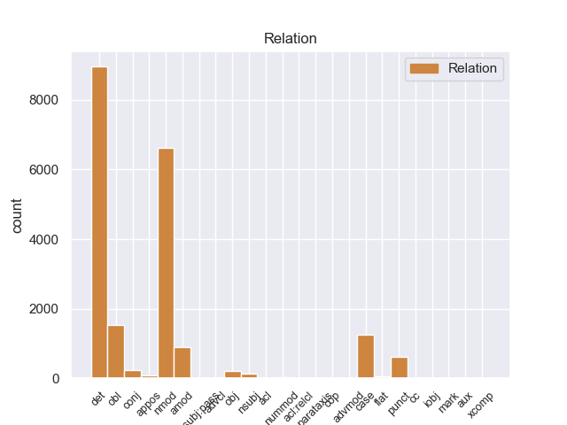
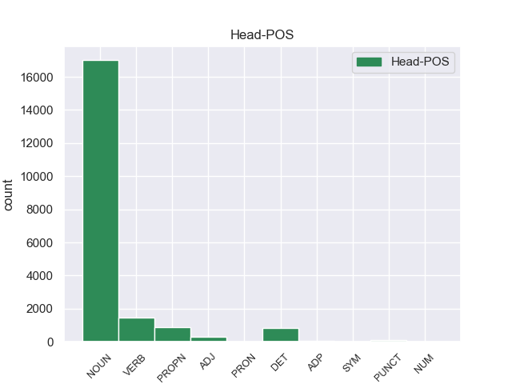
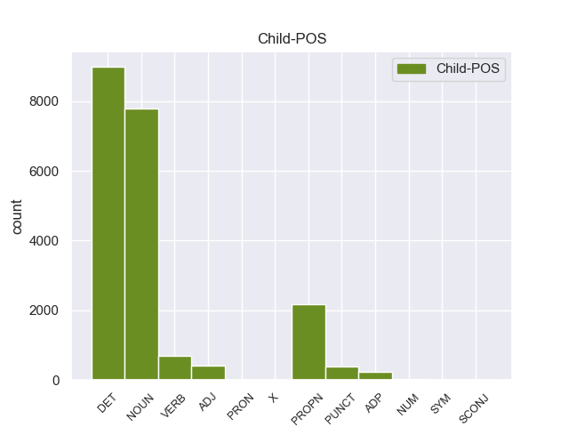

Distribution of features within this leaf



Agreement Rules sorted by frequency.
- When the dependent token is the determiner(det) of the head token, and the dependent token is DET.
1 En _ _ _ _ 0 _ _ _
2 1991 _ _ _ _ 0 _ _ _
3 , _ _ _ _ 0 _ _ _
4 como _ _ _ _ 0 _ _ _
5 ya _ _ _ _ 0 _ _ _
6 está _ _ _ _ 0 _ _ _
7 indicado _ _ _ _ 0 _ _ _
8 en _ _ _ _ 0 _ _ _
9 el _ _ _ _ 0 _ _ _
10 párrafo _ _ _ _ 0 _ _ _
11 anterior _ _ _ _ 0 _ _ _
12 , _ _ _ _ 0 _ _ _
13 se _ _ _ _ 0 _ _ _
14 creó _ _ _ _ 0 _ _ _
15 un _ _ _ _ 0 _ _ _
16 equipo _ _ _ _ 0 _ _ _
17 ad _ _ _ _ 0 _ _ _
18 hoc _ _ _ _ 0 _ _ _
19 para _ _ _ _ 0 _ _ _
20 averiguar _ _ _ _ 0 _ _ _
21 como _ _ _ _ 0 _ _ _
22 se _ _ _ _ 0 _ _ _
23 podía _ _ _ _ 0 _ _ _
24 desarrollar _ _ _ _ 0 _ _ _
25 el _ _ _ _ 0 _ _ _
26 Dialogo _ _ _ _ 0 _ _ _
27 Social _ _ _ _ 0 _ _ _
28 , _ _ _ _ 0 _ _ _
29 este este DET _ Gender=Masc|Number=Sing 30 det _ _
30 equipo equipo NOUN _ Gender=Masc|Number=Sing 0 _ _ _
31 estaba _ _ _ _ 0 _ _ _
32 formado _ _ _ _ 0 _ _ _
33 por _ _ _ _ 0 _ _ _
34 representantes _ _ _ _ 0 _ _ _
35 de _ _ _ _ 0 _ _ _
36 todas _ _ _ _ 0 _ _ _
37 las _ _ _ _ 0 _ _ _
38 organizaciones _ _ _ _ 0 _ _ _
39 relacionadas _ _ _ _ 0 _ _ _
40 con _ _ _ _ 0 _ _ _
41 CES _ _ _ _ 0 _ _ _
42 , _ _ _ _ 0 _ _ _
43 UNICE _ _ _ _ 0 _ _ _
44 y _ _ _ _ 0 _ _ _
45 CEEP _ _ _ _ 0 _ _ _
46 ; _ _ _ _ 0 _ _ _
1 En _ _ _ _ 0 _ _ _
2 1991 _ _ _ _ 0 _ _ _
3 , _ _ _ _ 0 _ _ _
4 como _ _ _ _ 0 _ _ _
5 ya _ _ _ _ 0 _ _ _
6 está _ _ _ _ 0 _ _ _
7 indicado _ _ _ _ 0 _ _ _
8 en _ _ _ _ 0 _ _ _
9 el _ _ _ _ 0 _ _ _
10 párrafo _ _ _ _ 0 _ _ _
11 anterior _ _ _ _ 0 _ _ _
12 , _ _ _ _ 0 _ _ _
13 se _ _ _ _ 0 _ _ _
14 creó _ _ _ _ 0 _ _ _
15 un _ _ _ _ 0 _ _ _
16 equipo equipo NOUN _ Gender=Masc|Number=Sing 0 _ _ _
17 ad _ _ _ _ 0 _ _ _
18 hoc _ _ _ _ 0 _ _ _
19 para _ _ _ _ 0 _ _ _
20 averiguar _ _ _ _ 0 _ _ _
21 como _ _ _ _ 0 _ _ _
22 se _ _ _ _ 0 _ _ _
23 podía _ _ _ _ 0 _ _ _
24 desarrollar _ _ _ _ 0 _ _ _
25 el _ _ _ _ 0 _ _ _
26 Dialogo dialogo NOUN _ Gender=Masc|Number=Sing 16 nmod _ _
27 Social _ _ _ _ 0 _ _ _
28 , _ _ _ _ 0 _ _ _
29 este _ _ _ _ 0 _ _ _
30 equipo _ _ _ _ 0 _ _ _
31 estaba _ _ _ _ 0 _ _ _
32 formado _ _ _ _ 0 _ _ _
33 por _ _ _ _ 0 _ _ _
34 representantes _ _ _ _ 0 _ _ _
35 de _ _ _ _ 0 _ _ _
36 todas _ _ _ _ 0 _ _ _
37 las _ _ _ _ 0 _ _ _
38 organizaciones _ _ _ _ 0 _ _ _
39 relacionadas _ _ _ _ 0 _ _ _
40 con _ _ _ _ 0 _ _ _
41 CES _ _ _ _ 0 _ _ _
42 , _ _ _ _ 0 _ _ _
43 UNICE _ _ _ _ 0 _ _ _
44 y _ _ _ _ 0 _ _ _
45 CEEP _ _ _ _ 0 _ _ _
46 ; _ _ _ _ 0 _ _ _
1 Esta _ _ _ _ 0 _ _ _
2 teoría _ _ _ _ 0 _ _ _
3 se _ _ _ _ 0 _ _ _
4 avenía _ _ _ _ 0 _ _ _
5 bien _ _ _ _ 0 _ _ _
6 con _ _ _ _ 0 _ _ _
7 la _ _ _ _ 0 _ _ _
8 creencia _ _ _ _ 0 _ _ _
9 de _ _ _ _ 0 _ _ _
10 el _ _ _ _ 0 _ _ _
11 Romanticismo _ _ _ _ 0 _ _ _
12 en _ _ _ _ 0 _ _ _
13 un _ _ _ _ 0 _ _ _
14 volkgeist _ _ _ _ 0 _ _ _
15 , _ _ _ _ 0 _ _ _
16 " _ _ _ _ 0 _ _ _
17 genio genio PROPN _ Gender=Masc|Number=Sing 25 nmod _ _
18 o _ _ _ _ 0 _ _ _
19 espíritu _ _ _ _ 0 _ _ _
20 de _ _ _ _ 0 _ _ _
21 el _ _ _ _ 0 _ _ _
22 pueblo _ _ _ _ 0 _ _ _
23 " _ _ _ _ 0 _ _ _
24 , _ _ _ _ 0 _ _ _
25 autor autor NOUN _ Gender=Masc|Number=Sing 0 _ _ _
26 colectivo _ _ _ _ 0 _ _ _
27 y _ _ _ _ 0 _ _ _
28 anónimo _ _ _ _ 0 _ _ _
29 de _ _ _ _ 0 _ _ _
30 una _ _ _ _ 0 _ _ _
31 poesía _ _ _ _ 0 _ _ _
32 nacional _ _ _ _ 0 _ _ _
33 . _ _ _ _ 0 _ _ _
1 Ahora _ _ _ _ 0 _ _ _
2 se _ _ _ _ 0 _ _ _
3 aunan _ _ _ _ 0 _ _ _
4 cocina _ _ _ _ 0 _ _ _
5 y _ _ _ _ 0 _ _ _
6 entorno _ _ _ _ 0 _ _ _
7 , _ _ _ _ 0 _ _ _
8 me _ _ _ _ 0 _ _ _
9 encanto _ _ _ _ 0 _ _ _
10 la _ _ _ _ 0 _ _ _
11 bodega _ _ _ _ 0 _ _ _
12 , _ _ _ _ 0 _ _ _
13 las _ _ _ _ 0 _ _ _
14 sillas _ _ _ _ 0 _ _ _
15 son _ _ _ _ 0 _ _ _
16 comodisimas _ _ _ _ 0 _ _ _
17 , _ _ _ _ 0 _ _ _
18 la _ _ _ _ 0 _ _ _
19 iluminacion _ _ _ _ 0 _ _ _
20 es _ _ _ _ 0 _ _ _
21 excepcional _ _ _ _ 0 _ _ _
22 , _ _ _ _ 0 _ _ _
23 alcanzas _ _ _ _ 0 _ _ _
24 un _ _ _ _ 0 _ _ _
25 grado _ _ _ _ 0 _ _ _
26 de _ _ _ _ 0 _ _ _
27 satisfaccion _ _ _ _ 0 _ _ _
28 que _ _ _ _ 0 _ _ _
29 no _ _ _ _ 0 _ _ _
30 se _ _ _ _ 0 _ _ _
31 puede _ _ _ _ 0 _ _ _
32 describir describir DET _ Gender=Masc|Number=Sing 0 _ _ _
33 , _ _ _ _ 0 _ _ _
34 hay _ _ _ _ 0 _ _ _
35 que _ _ _ _ 0 _ _ _
36 probar _ _ _ _ 0 _ _ _
37 lo _ _ _ _ 0 _ _ _
38 , _ _ _ _ 0 _ _ _
39 es _ _ _ _ 0 _ _ _
40 la _ _ _ _ 0 _ _ _
41 primera _ _ _ _ 0 _ _ _
42 vez _ _ _ _ 0 _ _ _
43 en _ _ _ _ 0 _ _ _
44 mi _ _ _ _ 0 _ _ _
45 vda _ _ _ _ 0 _ _ _
46 que _ _ _ _ 0 _ _ _
47 una _ _ _ _ 0 _ _ _
48 cocina _ _ _ _ 0 _ _ _
49 me _ _ _ _ 0 _ _ _
50 emociona _ _ _ _ 0 _ _ _
51 hasta _ _ _ _ 0 _ _ _
52 ese _ _ _ _ 0 _ _ _
53 punto punto NOUN _ Gender=Masc|Number=Sing 32 obl _ _
54 . _ _ _ _ 0 _ _ _
1 Ese _ _ _ _ 0 _ _ _
2 mismo _ _ _ _ 0 _ _ _
3 año _ _ _ _ 0 _ _ _
4 participó _ _ _ _ 0 _ _ _
5 con _ _ _ _ 0 _ _ _
6 el _ _ _ _ 0 _ _ _
7 equipo _ _ _ _ 0 _ _ _
8 ruso _ _ _ _ 0 _ _ _
9 en _ _ _ _ 0 _ _ _
10 la _ _ _ _ 0 _ _ _
11 Olimpiada _ _ _ _ 0 _ _ _
12 de _ _ _ _ 0 _ _ _
13 Ajedrez _ _ _ _ 0 _ _ _
14 de _ _ _ _ 0 _ _ _
15 Estambul _ _ _ _ 0 _ _ _
16 y _ _ _ _ 0 _ _ _
17 obtuvo _ _ _ _ 0 _ _ _
18 la _ _ _ _ 0 _ _ _
19 medalla medalla NOUN _ Gender=Masc|Number=Sing 0 _ _ _
20 de _ _ _ _ 0 _ _ _
21 bronce _ _ _ _ 0 _ _ _
22 en _ _ _ _ 0 _ _ _
23 tanto _ _ _ _ 0 _ _ _
24 que _ _ _ _ 0 _ _ _
25 mejor _ _ _ _ 0 _ _ _
26 segunda _ _ _ _ 0 _ _ _
27 jugador _ _ _ _ 0 _ _ _
28 reservista _ _ _ _ 0 _ _ _
29 de _ _ _ _ 0 _ _ _
30 el _ _ _ _ 0 _ _ _
31 torneo torneo NOUN _ Gender=Masc|Number=Sing 19 det _ _
32 ( _ _ _ _ 0 _ _ _
33 los _ _ _ _ 0 _ _ _
34 equipos _ _ _ _ 0 _ _ _
35 estaban _ _ _ _ 0 _ _ _
36 formados _ _ _ _ 0 _ _ _
37 por _ _ _ _ 0 _ _ _
38 cuatro _ _ _ _ 0 _ _ _
39 jugadores _ _ _ _ 0 _ _ _
40 titulares _ _ _ _ 0 _ _ _
41 y _ _ _ _ 0 _ _ _
42 dos _ _ _ _ 0 _ _ _
43 reservas _ _ _ _ 0 _ _ _
44 ) _ _ _ _ 0 _ _ _
45 . _ _ _ _ 0 _ _ _
1 La _ _ _ _ 0 _ _ _
2 reconstrucción reconstrucción NOUN _ Gender=Masc|Number=Sing 5 case _ _
3 de _ _ _ _ 0 _ _ _
4 el _ _ _ _ 0 _ _ _
5 sistema sistema NOUN _ Gender=Masc|Number=Sing 0 _ _ _
6 educativo _ _ _ _ 0 _ _ _
7 sigue _ _ _ _ 0 _ _ _
8 siendo _ _ _ _ 0 _ _ _
9 una _ _ _ _ 0 _ _ _
10 prioridad _ _ _ _ 0 _ _ _
11 de _ _ _ _ 0 _ _ _
12 el _ _ _ _ 0 _ _ _
13 gobierno _ _ _ _ 0 _ _ _
14 de _ _ _ _ 0 _ _ _
15 Ruanda _ _ _ _ 0 _ _ _
16 . _ _ _ _ 0 _ _ _
1 Les _ _ _ _ 0 _ _ _
2 he _ _ _ _ 0 _ _ _
3 pedido _ _ _ _ 0 _ _ _
4 donde _ _ _ _ 0 _ _ _
5 podía _ _ _ _ 0 _ _ _
6 encontrar _ _ _ _ 0 _ _ _
7 un _ _ _ _ 0 _ _ _
8 fabricante _ _ _ _ 0 _ _ _
9 de _ _ _ _ 0 _ _ _
10 trofeos _ _ _ _ 0 _ _ _
11 en _ _ _ _ 0 _ _ _
12 metacrilato metacrilato NOUN _ Gender=Masc|Number=Sing 23 amod _ _
13 , _ _ _ _ 0 _ _ _
14 y _ _ _ _ 0 _ _ _
15 ellos _ _ _ _ 0 _ _ _
16 mismos _ _ _ _ 0 _ _ _
17 me _ _ _ _ 0 _ _ _
18 los _ _ _ _ 0 _ _ _
19 han _ _ _ _ 0 _ _ _
20 fabricado _ _ _ _ 0 _ _ _
21 a _ _ _ _ 0 _ _ _
22 un _ _ _ _ 0 _ _ _
23 precio precio NOUN _ Gender=Masc|Number=Sing 0 _ _ _
24 muy _ _ _ _ 0 _ _ _
25 interesante _ _ _ _ 0 _ _ _
26 . _ _ _ _ 0 _ _ _
1 De _ _ _ _ 0 _ _ _
2 esta _ _ _ _ 0 _ _ _
3 manera _ _ _ _ 0 _ _ _
4 , _ _ _ _ 0 _ _ _
5 la _ _ _ _ 0 _ _ _
6 Alcaldía alcaldía DET _ Gender=Masc|Number=Sing 12 nmod _ _
7 de _ _ _ _ 0 _ _ _
8 Medellín _ _ _ _ 0 _ _ _
9 avanza _ _ _ _ 0 _ _ _
10 en _ _ _ _ 0 _ _ _
11 su _ _ _ _ 0 _ _ _
12 propósito propósito NOUN _ Gender=Masc|Number=Sing 0 _ _ _
13 de _ _ _ _ 0 _ _ _
14 mantener _ _ _ _ 0 _ _ _
15 la _ _ _ _ 0 _ _ _
16 malla _ _ _ _ 0 _ _ _
17 vial _ _ _ _ 0 _ _ _
18 de _ _ _ _ 0 _ _ _
19 la _ _ _ _ 0 _ _ _
20 ciudad _ _ _ _ 0 _ _ _
21 como _ _ _ _ 0 _ _ _
22 una _ _ _ _ 0 _ _ _
23 de _ _ _ _ 0 _ _ _
24 las _ _ _ _ 0 _ _ _
25 mejores _ _ _ _ 0 _ _ _
26 de _ _ _ _ 0 _ _ _
27 el _ _ _ _ 0 _ _ _
28 país _ _ _ _ 0 _ _ _
29 . _ _ _ _ 0 _ _ _
1 Ese _ _ _ _ 0 _ _ _
2 mismo _ _ _ _ 0 _ _ _
3 año _ _ _ _ 0 _ _ _
4 participó _ _ _ _ 0 _ _ _
5 con _ _ _ _ 0 _ _ _
6 el _ _ _ _ 0 _ _ _
7 equipo _ _ _ _ 0 _ _ _
8 ruso _ _ _ _ 0 _ _ _
9 en _ _ _ _ 0 _ _ _
10 la _ _ _ _ 0 _ _ _
11 Olimpiada _ _ _ _ 0 _ _ _
12 de _ _ _ _ 0 _ _ _
13 Ajedrez _ _ _ _ 0 _ _ _
14 de _ _ _ _ 0 _ _ _
15 Estambul _ _ _ _ 0 _ _ _
16 y _ _ _ _ 0 _ _ _
17 obtuvo _ _ _ _ 0 _ _ _
18 la _ _ _ _ 0 _ _ _
19 medalla medalla NOUN _ Gender=Masc|Number=Sing 0 _ _ _
20 de _ _ _ _ 0 _ _ _
21 bronce _ _ _ _ 0 _ _ _
22 en _ _ _ _ 0 _ _ _
23 tanto _ _ _ _ 0 _ _ _
24 que _ _ _ _ 0 _ _ _
25 mejor _ _ _ _ 0 _ _ _
26 segunda _ _ _ _ 0 _ _ _
27 jugador _ _ _ _ 0 _ _ _
28 reservista _ _ _ _ 0 _ _ _
29 de _ _ _ _ 0 _ _ _
30 el _ _ _ _ 0 _ _ _
31 torneo _ _ _ _ 0 _ _ _
32 ( _ _ _ _ 0 _ _ _
33 los _ _ _ _ 0 _ _ _
34 equipos _ _ _ _ 0 _ _ _
35 estaban _ _ _ _ 0 _ _ _
36 formados _ _ _ _ 0 _ _ _
37 por _ _ _ _ 0 _ _ _
38 cuatro _ _ _ _ 0 _ _ _
39 jugadores _ _ _ _ 0 _ _ _
40 titulares _ _ _ _ 0 _ _ _
41 y _ _ _ _ 0 _ _ _
42 dos _ _ _ _ 0 _ _ _
43 reservas _ _ _ _ 0 _ _ _
44 ) ) PUNCT _ Gender=Masc|Number=Sing 19 punct _ _
45 . _ _ _ _ 0 _ _ _
1 Ahora _ _ _ _ 0 _ _ _
2 se _ _ _ _ 0 _ _ _
3 aunan _ _ _ _ 0 _ _ _
4 cocina _ _ _ _ 0 _ _ _
5 y _ _ _ _ 0 _ _ _
6 entorno _ _ _ _ 0 _ _ _
7 , _ _ _ _ 0 _ _ _
8 me _ _ _ _ 0 _ _ _
9 encanto _ _ _ _ 0 _ _ _
10 la _ _ _ _ 0 _ _ _
11 bodega _ _ _ _ 0 _ _ _
12 , _ _ _ _ 0 _ _ _
13 las _ _ _ _ 0 _ _ _
14 sillas _ _ _ _ 0 _ _ _
15 son _ _ _ _ 0 _ _ _
16 comodisimas _ _ _ _ 0 _ _ _
17 , _ _ _ _ 0 _ _ _
18 la _ _ _ _ 0 _ _ _
19 iluminacion _ _ _ _ 0 _ _ _
20 es _ _ _ _ 0 _ _ _
21 excepcional _ _ _ _ 0 _ _ _
22 , _ _ _ _ 0 _ _ _
23 alcanzas _ _ _ _ 0 _ _ _
24 un _ _ _ _ 0 _ _ _
25 grado _ _ _ _ 0 _ _ _
26 de _ _ _ _ 0 _ _ _
27 satisfaccion _ _ _ _ 0 _ _ _
28 que _ _ _ _ 0 _ _ _
29 no _ _ _ _ 0 _ _ _
30 se _ _ _ _ 0 _ _ _
31 puede puede DET _ Gender=Masc|Number=Sing 32 case _ _
32 describir describir DET _ Gender=Masc|Number=Sing 0 _ _ _
33 , _ _ _ _ 0 _ _ _
34 hay _ _ _ _ 0 _ _ _
35 que _ _ _ _ 0 _ _ _
36 probar _ _ _ _ 0 _ _ _
37 lo _ _ _ _ 0 _ _ _
38 , _ _ _ _ 0 _ _ _
39 es _ _ _ _ 0 _ _ _
40 la _ _ _ _ 0 _ _ _
41 primera _ _ _ _ 0 _ _ _
42 vez _ _ _ _ 0 _ _ _
43 en _ _ _ _ 0 _ _ _
44 mi _ _ _ _ 0 _ _ _
45 vda _ _ _ _ 0 _ _ _
46 que _ _ _ _ 0 _ _ _
47 una _ _ _ _ 0 _ _ _
48 cocina _ _ _ _ 0 _ _ _
49 me _ _ _ _ 0 _ _ _
50 emociona _ _ _ _ 0 _ _ _
51 hasta _ _ _ _ 0 _ _ _
52 ese _ _ _ _ 0 _ _ _
53 punto _ _ _ _ 0 _ _ _
54 . _ _ _ _ 0 _ _ _
1 Jazmin _ _ _ _ 0 _ _ _
2 es _ _ _ _ 0 _ _ _
3 todo _ _ _ _ 0 _ _ _
4 lo _ _ _ _ 0 _ _ _
5 contrario _ _ _ _ 0 _ _ _
6 , _ _ _ _ 0 _ _ _
7 es _ _ _ _ 0 _ _ _
8 tímida _ _ _ _ 0 _ _ _
9 y _ _ _ _ 0 _ _ _
10 callada _ _ _ _ 0 _ _ _
11 , _ _ _ _ 0 _ _ _
12 pero _ _ _ _ 0 _ _ _
13 siempre _ _ _ _ 0 _ _ _
14 es _ _ _ _ 0 _ _ _
15 arrastrada _ _ _ _ 0 _ _ _
16 por _ _ _ _ 0 _ _ _
17 las _ _ _ _ 0 _ _ _
18 locuras locuras VERB _ Gender=Fem|Number=Sing 0 _ _ _
19 y _ _ _ _ 0 _ _ _
20 travesuras travesuras VERB _ Gender=Fem|Number=Sing 18 nmod _ _
21 que _ _ _ _ 0 _ _ _
22 inventa _ _ _ _ 0 _ _ _
23 Alma _ _ _ _ 0 _ _ _
24 . _ _ _ _ 0 _ _ _
1 Más _ _ _ _ 0 _ _ _
2 tarde _ _ _ _ 0 _ _ _
3 en _ _ _ _ 0 _ _ _
4 1960 _ _ _ _ 0 _ _ _
5 , _ _ _ _ 0 _ _ _
6 The the PROPN _ Definite=Def|Gender=Fem|Number=Sing|PronType=Art 7 det _ _
7 Boss boss PROPN _ Gender=Fem|Number=Sing 0 _ _ _
8 fue _ _ _ _ 0 _ _ _
9 enviada _ _ _ _ 0 _ _ _
10 a _ _ _ _ 0 _ _ _
11 el _ _ _ _ 0 _ _ _
12 espacio _ _ _ _ 0 _ _ _
13 en _ _ _ _ 0 _ _ _
14 una _ _ _ _ 0 _ _ _
15 misión _ _ _ _ 0 _ _ _
16 cuyo _ _ _ _ 0 _ _ _
17 propósito _ _ _ _ 0 _ _ _
18 era _ _ _ _ 0 _ _ _
19 estudiar _ _ _ _ 0 _ _ _
20 como _ _ _ _ 0 _ _ _
21 el _ _ _ _ 0 _ _ _
22 cuerpo _ _ _ _ 0 _ _ _
23 humano _ _ _ _ 0 _ _ _
24 se _ _ _ _ 0 _ _ _
25 adaptaba _ _ _ _ 0 _ _ _
26 a _ _ _ _ 0 _ _ _
27 las _ _ _ _ 0 _ _ _
28 condiciones _ _ _ _ 0 _ _ _
29 extremas _ _ _ _ 0 _ _ _
30 . _ _ _ _ 0 _ _ _
1 Tras _ _ _ _ 0 _ _ _
2 casi _ _ _ _ 0 _ _ _
3 11 _ _ _ _ 0 _ _ _
4 años _ _ _ _ 0 _ _ _
5 de _ _ _ _ 0 _ _ _
6 el _ _ _ _ 0 _ _ _
7 asesinato _ _ _ _ 0 _ _ _
8 que _ _ _ _ 0 _ _ _
9 fue _ _ _ _ 0 _ _ _
10 perpetrado _ _ _ _ 0 _ _ _
11 el _ _ _ _ 0 _ _ _
12 viernes _ _ _ _ 0 _ _ _
13 13 _ _ _ _ 0 _ _ _
14 de _ _ _ _ 0 _ _ _
15 agosto agosto PROPN _ Gender=Masc|Number=Sing 46 obl _ _
16 de _ _ _ _ 0 _ _ _
17 1999 _ _ _ _ 0 _ _ _
18 en _ _ _ _ 0 _ _ _
19 una _ _ _ _ 0 _ _ _
20 esquina _ _ _ _ 0 _ _ _
21 de _ _ _ _ 0 _ _ _
22 el _ _ _ _ 0 _ _ _
23 Barrio _ _ _ _ 0 _ _ _
24 Quinta _ _ _ _ 0 _ _ _
25 Paredes _ _ _ _ 0 _ _ _
26 en _ _ _ _ 0 _ _ _
27 Bogotá _ _ _ _ 0 _ _ _
28 por _ _ _ _ 0 _ _ _
29 dos _ _ _ _ 0 _ _ _
30 hombres _ _ _ _ 0 _ _ _
31 en _ _ _ _ 0 _ _ _
32 motocicleta _ _ _ _ 0 _ _ _
33 de _ _ _ _ 0 _ _ _
34 alto _ _ _ _ 0 _ _ _
35 cilindraje _ _ _ _ 0 _ _ _
36 que _ _ _ _ 0 _ _ _
37 se _ _ _ _ 0 _ _ _
38 acercaron _ _ _ _ 0 _ _ _
39 a _ _ _ _ 0 _ _ _
40 la _ _ _ _ 0 _ _ _
41 camioneta _ _ _ _ 0 _ _ _
42 de _ _ _ _ 0 _ _ _
43 Jaime _ _ _ _ 0 _ _ _
44 y _ _ _ _ 0 _ _ _
45 le _ _ _ _ 0 _ _ _
46 propinaron propinaron ADJ _ Gender=Masc|Number=Sing 0 _ _ _
47 cinco _ _ _ _ 0 _ _ _
48 tiros _ _ _ _ 0 _ _ _
49 , _ _ _ _ 0 _ _ _
50 su _ _ _ _ 0 _ _ _
51 familia _ _ _ _ 0 _ _ _
52 tomó _ _ _ _ 0 _ _ _
53 la _ _ _ _ 0 _ _ _
54 decisión _ _ _ _ 0 _ _ _
55 de _ _ _ _ 0 _ _ _
56 demandar _ _ _ _ 0 _ _ _
57 ante _ _ _ _ 0 _ _ _
58 la _ _ _ _ 0 _ _ _
59 CIDH _ _ _ _ 0 _ _ _
60 . _ _ _ _ 0 _ _ _
1 La _ _ _ _ 0 _ _ _
2 banda _ _ _ _ 0 _ _ _
3 norteamericana _ _ _ _ 0 _ _ _
4 Red _ _ _ _ 0 _ _ _
5 Hot _ _ _ _ 0 _ _ _
6 Chili _ _ _ _ 0 _ _ _
7 Peppers _ _ _ _ 0 _ _ _
8 dejó _ _ _ _ 0 _ _ _
9 boquiabiertas _ _ _ _ 0 _ _ _
10 a _ _ _ _ 0 _ _ _
11 las _ _ _ _ 0 _ _ _
12 18.000 _ _ _ _ 0 _ _ _
13 personas _ _ _ _ 0 _ _ _
14 congregadas _ _ _ _ 0 _ _ _
15 en _ _ _ _ 0 _ _ _
16 el _ _ _ _ 0 _ _ _
17 concierto _ _ _ _ 0 _ _ _
18 que _ _ _ _ 0 _ _ _
19 ofreció _ _ _ _ 0 _ _ _
20 la _ _ _ _ 0 _ _ _
21 noche _ _ _ _ 0 _ _ _
22 de _ _ _ _ 0 _ _ _
23 el _ _ _ _ 0 _ _ _
24 sábado _ _ _ _ 0 _ _ _
25 17 _ _ _ _ 0 _ _ _
26 de _ _ _ _ 0 _ _ _
27 diciembre _ _ _ _ 0 _ _ _
28 en _ _ _ _ 0 _ _ _
29 el _ _ _ _ 0 _ _ _
30 madrileño _ _ _ _ 0 _ _ _
31 Palacio _ _ _ _ 0 _ _ _
32 de _ _ _ _ 0 _ _ _
33 los _ _ _ _ 0 _ _ _
34 Deportes _ _ _ _ 0 _ _ _
35 con _ _ _ _ 0 _ _ _
36 unos _ _ _ _ 0 _ _ _
37 teloneros teloneros NOUN _ Gender=Masc|Number=Sing 0 _ _ _
38 de _ _ _ _ 0 _ _ _
39 pro _ _ _ _ 0 _ _ _
40 , _ _ _ _ 0 _ _ _
41 lujo _ _ _ _ 0 _ _ _
42 y _ _ _ _ 0 _ _ _
43 exquisitez exquisitez VERB _ Gender=Masc|Number=Sing 37 case _ _
44 interpretativa _ _ _ _ 0 _ _ _
45 : _ _ _ _ 0 _ _ _
46 Foals _ _ _ _ 0 _ _ _
47 . _ _ _ _ 0 _ _ _
1 En _ _ _ _ 0 _ _ _
2 1984 _ _ _ _ 0 _ _ _
3 , _ _ _ _ 0 _ _ _
4 la _ _ _ _ 0 _ _ _
5 nominación nominación NOUN _ Gender=Masc|Number=Sing 0 _ _ _
6 de _ _ _ _ 0 _ _ _
7 el _ _ _ _ 0 _ _ _
8 eminente eminente PROPN _ Gender=Masc|Number=Sing 5 case _ _
9 polemista _ _ _ _ 0 _ _ _
10 Hugo _ _ _ _ 0 _ _ _
11 Brandt _ _ _ _ 0 _ _ _
12 Corstius _ _ _ _ 0 _ _ _
13 por _ _ _ _ 0 _ _ _
14 el _ _ _ _ 0 _ _ _
15 jurado _ _ _ _ 0 _ _ _
16 provocó _ _ _ _ 0 _ _ _
17 tensiones _ _ _ _ 0 _ _ _
18 entre _ _ _ _ 0 _ _ _
19 la _ _ _ _ 0 _ _ _
20 fundación _ _ _ _ 0 _ _ _
21 independiente _ _ _ _ 0 _ _ _
22 y _ _ _ _ 0 _ _ _
23 el _ _ _ _ 0 _ _ _
24 Estado _ _ _ _ 0 _ _ _
25 . _ _ _ _ 0 _ _ _
1 En _ _ _ _ 0 _ _ _
2 concreto _ _ _ _ 0 _ _ _
3 , _ _ _ _ 0 _ _ _
4 Marlaska _ _ _ _ 0 _ _ _
5 les _ _ _ _ 0 _ _ _
6 solicita _ _ _ _ 0 _ _ _
7 que _ _ _ _ 0 _ _ _
8 remitan _ _ _ _ 0 _ _ _
9 toda _ _ _ _ 0 _ _ _
10 la _ _ _ _ 0 _ _ _
11 información _ _ _ _ 0 _ _ _
12 sobre _ _ _ _ 0 _ _ _
13 " _ _ _ _ 0 _ _ _
14 cuantas _ _ _ _ 0 _ _ _
15 irregularidades _ _ _ _ 0 _ _ _
16 e _ _ _ _ 0 _ _ _
17 incumplimientos _ _ _ _ 0 _ _ _
18 de _ _ _ _ 0 _ _ _
19 la _ _ _ _ 0 _ _ _
20 normativa _ _ _ _ 0 _ _ _
21 bancaria _ _ _ _ 0 _ _ _
22 se _ _ _ _ 0 _ _ _
23 pudieran _ _ _ _ 0 _ _ _
24 haber _ _ _ _ 0 _ _ _
25 cometido _ _ _ _ 0 _ _ _
26 por _ _ _ _ 0 _ _ _
27 los _ _ _ _ 0 _ _ _
28 anteriores _ _ _ _ 0 _ _ _
29 responsables _ _ _ _ 0 _ _ _
30 de _ _ _ _ 0 _ _ _
31 la _ _ _ _ 0 _ _ _
32 entidad _ _ _ _ 0 _ _ _
33 " _ _ _ _ 0 _ _ _
34 contra _ _ _ _ 0 _ _ _
35 la _ _ _ _ 0 _ _ _
36 normativa normativa NOUN _ Gender=Masc|Number=Sing 0 _ _ _
37 de _ _ _ _ 0 _ _ _
38 Disciplina _ _ _ _ 0 _ _ _
39 e _ _ _ _ 0 _ _ _
40 Intervención intervención PROPN _ Gender=Masc|Number=Sing 36 amod _ _
41 de _ _ _ _ 0 _ _ _
42 las _ _ _ _ 0 _ _ _
43 Entidades _ _ _ _ 0 _ _ _
44 de _ _ _ _ 0 _ _ _
45 Crédito _ _ _ _ 0 _ _ _
46 . _ _ _ _ 0 _ _ _
1 En _ _ _ _ 0 _ _ _
2 Abril _ _ _ _ 0 _ _ _
3 de _ _ _ _ 0 _ _ _
4 2009 _ _ _ _ 0 _ _ _
5 , _ _ _ _ 0 _ _ _
6 con _ _ _ _ 0 _ _ _
7 motivo _ _ _ _ 0 _ _ _
8 de _ _ _ _ 0 _ _ _
9 los _ _ _ _ 0 _ _ _
10 actos _ _ _ _ 0 _ _ _
11 de _ _ _ _ 0 _ _ _
12 conmemoración _ _ _ _ 0 _ _ _
13 de _ _ _ _ 0 _ _ _
14 la _ _ _ _ 0 _ _ _
15 creciente _ _ _ _ 0 _ _ _
16 , _ _ _ _ 0 _ _ _
17 el _ _ _ _ 0 _ _ _
18 Directorio _ _ _ _ 0 _ _ _
19 de _ _ _ _ 0 _ _ _
20 la _ _ _ _ 0 _ _ _
21 empresa _ _ _ _ 0 _ _ _
22 estatal _ _ _ _ 0 _ _ _
23 UTE _ _ _ _ 0 _ _ _
24 , _ _ _ _ 0 _ _ _
25 lanza _ _ _ _ 0 _ _ _
26 la _ _ _ _ 0 _ _ _
27 idea idea NOUN _ Gender=Fem|Number=Sing 0 _ _ _
28 de _ _ _ _ 0 _ _ _
29 realizar _ _ _ _ 0 _ _ _
30 un _ _ _ _ 0 _ _ _
31 concurso _ _ _ _ 0 _ _ _
32 abierto _ _ _ _ 0 _ _ _
33 para _ _ _ _ 0 _ _ _
34 proyectos proyectos NOUN _ Gender=Fem|Number=Sing 27 punct _ _
35 de _ _ _ _ 0 _ _ _
36 esculturas _ _ _ _ 0 _ _ _
37 conmemorativas _ _ _ _ 0 _ _ _
38 de _ _ _ _ 0 _ _ _
39 el _ _ _ _ 0 _ _ _
40 suceso _ _ _ _ 0 _ _ _
41 . _ _ _ _ 0 _ _ _
1 Pena _ _ _ _ 0 _ _ _
2 de _ _ _ _ 0 _ _ _
3 cárcel _ _ _ _ 0 _ _ _
4 : _ _ _ _ 0 _ _ _
5 Ignacio _ _ _ _ 0 _ _ _
6 Díez _ _ _ _ 0 _ _ _
7 Muro _ _ _ _ 0 _ _ _
8 , _ _ _ _ 0 _ _ _
9 exgerente _ _ _ _ 0 _ _ _
10 de _ _ _ _ 0 _ _ _
11 IZETA _ _ _ _ 0 _ _ _
12 , _ _ _ _ 0 _ _ _
13 la _ _ _ _ 0 _ _ _
14 empresa _ _ _ _ 0 _ _ _
15 que _ _ _ _ 0 _ _ _
16 ejecutó _ _ _ _ 0 _ _ _
17 las _ _ _ _ 0 _ _ _
18 obras obras NOUN _ Gender=Fem|Number=Sing 34 obj _ _
19 de _ _ _ _ 0 _ _ _
20 el _ _ _ _ 0 _ _ _
21 túnel _ _ _ _ 0 _ _ _
22 de _ _ _ _ 0 _ _ _
23 Mioño _ _ _ _ 0 _ _ _
24 , _ _ _ _ 0 _ _ _
25 está _ _ _ _ 0 _ _ _
26 condenado _ _ _ _ 0 _ _ _
27 a _ _ _ _ 0 _ _ _
28 16 _ _ _ _ 0 _ _ _
29 meses _ _ _ _ 0 _ _ _
30 de _ _ _ _ 0 _ _ _
31 cárcel _ _ _ _ 0 _ _ _
32 y _ _ _ _ 0 _ _ _
33 una _ _ _ _ 0 _ _ _
34 multa multa NOUN _ Gender=Fem|Number=Sing 0 _ _ _
35 de _ _ _ _ 0 _ _ _
36 7.090 _ _ _ _ 0 _ _ _
37 euros _ _ _ _ 0 _ _ _
38 . _ _ _ _ 0 _ _ _
1 Su _ _ _ _ 0 _ _ _
2 inauguración _ _ _ _ 0 _ _ _
3 está _ _ _ _ 0 _ _ _
4 prevista prevista NOUN _ Gender=Masc|Number=Sing 0 _ _ _
5 durante _ _ _ _ 0 _ _ _
6 el _ _ _ _ 0 _ _ _
7 año año DET _ Gender=Masc|Number=Sing 4 obl _ _
8 2011 _ _ _ _ 0 _ _ _
9 . _ _ _ _ 0 _ _ _
1 En _ _ _ _ 0 _ _ _
2 individuos _ _ _ _ 0 _ _ _
3 sanos _ _ _ _ 0 _ _ _
4 , _ _ _ _ 0 _ _ _
5 esto _ _ _ _ 0 _ _ _
6 satura _ _ _ _ 0 _ _ _
7 la _ _ _ _ 0 _ _ _
8 hemoglobina hemoglobina ADJ _ Gender=Masc|Number=Sing 11 nmod _ _
9 , _ _ _ _ 0 _ _ _
10 el _ _ _ _ 0 _ _ _
11 pigmento pigmento NOUN _ Gender=Masc|Number=Sing 0 _ _ _
12 rojo _ _ _ _ 0 _ _ _
13 que _ _ _ _ 0 _ _ _
14 captura _ _ _ _ 0 _ _ _
15 el _ _ _ _ 0 _ _ _
16 oxígeno _ _ _ _ 0 _ _ _
17 en _ _ _ _ 0 _ _ _
18 los _ _ _ _ 0 _ _ _
19 eritrocitos _ _ _ _ 0 _ _ _
20 de _ _ _ _ 0 _ _ _
21 la _ _ _ _ 0 _ _ _
22 sangre _ _ _ _ 0 _ _ _
23 . _ _ _ _ 0 _ _ _
1 Tebacas _ _ _ _ 0 _ _ _
2 fue _ _ _ _ 0 _ _ _
3 un _ _ _ _ 0 _ _ _
4 pueblo _ _ _ _ 0 _ _ _
5 indígena _ _ _ _ 0 _ _ _
6 que _ _ _ _ 0 _ _ _
7 habitó _ _ _ _ 0 _ _ _
8 en _ _ _ _ 0 _ _ _
9 los _ _ _ _ 0 _ _ _
10 municipios _ _ _ _ 0 _ _ _
11 de _ _ _ _ 0 _ _ _
12 Culiacán _ _ _ _ 0 _ _ _
13 y _ _ _ _ 0 _ _ _
14 Badiraguato _ _ _ _ 0 _ _ _
15 hasta _ _ _ _ 0 _ _ _
16 colindar colindar DET _ Gender=Masc|Number=Sing 19 amod _ _
17 con _ _ _ _ 0 _ _ _
18 el _ _ _ _ 0 _ _ _
19 grupo grupo NOUN _ Gender=Masc|Number=Sing 0 _ _ _
20 cahita _ _ _ _ 0 _ _ _
21 de _ _ _ _ 0 _ _ _
22 los _ _ _ _ 0 _ _ _
23 sinaloas _ _ _ _ 0 _ _ _
24 . _ _ _ _ 0 _ _ _
1 El _ _ _ _ 0 _ _ _
2 actual _ _ _ _ 0 _ _ _
3 escudo _ _ _ _ 0 _ _ _
4 está _ _ _ _ 0 _ _ _
5 formado _ _ _ _ 0 _ _ _
6 por _ _ _ _ 0 _ _ _
7 dos _ _ _ _ 0 _ _ _
8 círculos _ _ _ _ 0 _ _ _
9 concéntricos _ _ _ _ 0 _ _ _
10 con _ _ _ _ 0 _ _ _
11 la _ _ _ _ 0 _ _ _
12 leyenda _ _ _ _ 0 _ _ _
13 GIRONA _ _ _ _ 0 _ _ _
14 FC _ _ _ _ 0 _ _ _
15 en _ _ _ _ 0 _ _ _
16 blanco _ _ _ _ 0 _ _ _
17 sobre _ _ _ _ 0 _ _ _
18 fondo _ _ _ _ 0 _ _ _
19 rojo _ _ _ _ 0 _ _ _
20 , _ _ _ _ 0 _ _ _
21 el _ _ _ _ 0 _ _ _
22 círculo _ _ _ _ 0 _ _ _
23 interior _ _ _ _ 0 _ _ _
24 esta _ _ _ _ 0 _ _ _
25 cruzado _ _ _ _ 0 _ _ _
26 por _ _ _ _ 0 _ _ _
27 19 _ _ _ _ 0 _ _ _
28 franjas _ _ _ _ 0 _ _ _
29 , _ _ _ _ 0 _ _ _
30 10 _ _ _ _ 0 _ _ _
31 blancas _ _ _ _ 0 _ _ _
32 y _ _ _ _ 0 _ _ _
33 9 _ _ _ _ 0 _ _ _
34 rojas _ _ _ _ 0 _ _ _
35 portando _ _ _ _ 0 _ _ _
36 un _ _ _ _ 0 _ _ _
37 blasón blasón ADJ _ Gender=Masc|Number=Plur 0 _ _ _
38 lonsanjado _ _ _ _ 0 _ _ _
39 de _ _ _ _ 0 _ _ _
40 oro _ _ _ _ 0 _ _ _
41 con _ _ _ _ 0 _ _ _
42 cuatro _ _ _ _ 0 _ _ _
43 palos _ _ _ _ 0 _ _ _
44 verticales _ _ _ _ 0 _ _ _
45 gules _ _ _ _ 0 _ _ _
46 y _ _ _ _ 0 _ _ _
47 escusón _ _ _ _ 0 _ _ _
48 central _ _ _ _ 0 _ _ _
49 cuadrilongo _ _ _ _ 0 _ _ _
50 ibérico ibérico ADJ _ Gender=Masc|Number=Plur 37 amod _ _
51 verado _ _ _ _ 0 _ _ _
52 de _ _ _ _ 0 _ _ _
53 ondas _ _ _ _ 0 _ _ _
54 rojas _ _ _ _ 0 _ _ _
55 y _ _ _ _ 0 _ _ _
56 blancas _ _ _ _ 0 _ _ _
57 . _ _ _ _ 0 _ _ _
1 La _ _ _ _ 0 _ _ _
2 primera _ _ _ _ 0 _ _ _
3 vez _ _ _ _ 0 _ _ _
4 , _ _ _ _ 0 _ _ _
5 tenía _ _ _ _ 0 _ _ _
6 un _ _ _ _ 0 _ _ _
7 presupuesto _ _ _ _ 0 _ _ _
8 de _ _ _ _ 0 _ _ _
9 700 _ _ _ _ 0 _ _ _
10 € _ _ _ _ 0 _ _ _
11 en _ _ _ _ 0 _ _ _
12 el _ _ _ _ 0 _ _ _
13 servicio _ _ _ _ 0 _ _ _
14 oficial _ _ _ _ 0 _ _ _
15 ( _ _ _ _ 0 _ _ _
16 te _ _ _ _ 0 _ _ _
17 lo _ _ _ _ 0 _ _ _
18 cambio _ _ _ _ 0 _ _ _
19 todo _ _ _ _ 0 _ _ _
20 y _ _ _ _ 0 _ _ _
21 soluciono soluciono NOUN _ Gender=Masc|Number=Sing 31 conj _ _
22 el _ _ _ _ 0 _ _ _
23 problema _ _ _ _ 0 _ _ _
24 ) _ _ _ _ 0 _ _ _
25 , _ _ _ _ 0 _ _ _
26 y _ _ _ _ 0 _ _ _
27 en _ _ _ _ 0 _ _ _
28 Pinauto _ _ _ _ 0 _ _ _
29 me _ _ _ _ 0 _ _ _
30 lo _ _ _ _ 0 _ _ _
31 solucionaron solucionaron NOUN _ Gender=Masc|Number=Sing 0 _ _ _
32 por _ _ _ _ 0 _ _ _
33 unos _ _ _ _ 0 _ _ _
34 200 _ _ _ _ 0 _ _ _
35 € _ _ _ _ 0 _ _ _
36 , _ _ _ _ 0 _ _ _
37 cambiando _ _ _ _ 0 _ _ _
38 sólo _ _ _ _ 0 _ _ _
39 lo _ _ _ _ 0 _ _ _
40 necesario _ _ _ _ 0 _ _ _
41 . _ _ _ _ 0 _ _ _
1 Ahmad _ _ _ _ 0 _ _ _
2 Ali _ _ _ _ 0 _ _ _
3 , _ _ _ _ 0 _ _ _
4 un _ _ _ _ 0 _ _ _
5 viejo _ _ _ _ 0 _ _ _
6 canoso _ _ _ _ 0 _ _ _
7 , _ _ _ _ 0 _ _ _
8 abandona _ _ _ _ 0 _ _ _
9 la _ _ _ _ 0 _ _ _
10 ciudad _ _ _ _ 0 _ _ _
11 a _ _ _ _ 0 _ _ _
12 bordo _ _ _ _ 0 _ _ _
13 de _ _ _ _ 0 _ _ _
14 su _ _ _ _ 0 _ _ _
15 camioneta _ _ _ _ 0 _ _ _
16 , _ _ _ _ 0 _ _ _
17 cubriendo _ _ _ _ 0 _ _ _
18 con _ _ _ _ 0 _ _ _
19 colchones colchones VERB _ Gender=Fem|Number=Sing 21 amod _ _
20 y _ _ _ _ 0 _ _ _
21 mantas mantas NOUN _ Gender=Fem|Number=Sing 0 _ _ _
22 sus _ _ _ _ 0 _ _ _
23 escasas _ _ _ _ 0 _ _ _
24 pertenencias _ _ _ _ 0 _ _ _
25 . _ _ _ _ 0 _ _ _
1 Añade _ _ _ _ 0 _ _ _
2 un _ _ _ _ 0 _ _ _
3 nuevo _ _ _ _ 0 _ _ _
4 formato _ _ _ _ 0 _ _ _
5 de _ _ _ _ 0 _ _ _
6 competición _ _ _ _ 0 _ _ _
7 introduciendo _ _ _ _ 0 _ _ _
8 el _ _ _ _ 0 _ _ _
9 día _ _ _ _ 0 _ _ _
10 de _ _ _ _ 0 _ _ _
11 carrera _ _ _ _ 0 _ _ _
12 donde _ _ _ _ 0 _ _ _
13 se _ _ _ _ 0 _ _ _
14 recogen recogen SYM _ Gender=Masc|Number=Sing 0 _ _ _
15 varias _ _ _ _ 0 _ _ _
16 modalidades _ _ _ _ 0 _ _ _
17 de _ _ _ _ 0 _ _ _
18 carrera _ _ _ _ 0 _ _ _
19 en _ _ _ _ 0 _ _ _
20 un _ _ _ _ 0 _ _ _
21 mismo _ _ _ _ 0 _ _ _
22 evento _ _ _ _ 0 _ _ _
23 el _ _ _ _ 0 _ _ _
24 jugador _ _ _ _ 0 _ _ _
25 debe _ _ _ _ 0 _ _ _
26 participar _ _ _ _ 0 _ _ _
27 en _ _ _ _ 0 _ _ _
28 distintas _ _ _ _ 0 _ _ _
29 carreras _ _ _ _ 0 _ _ _
30 para _ _ _ _ 0 _ _ _
31 sumar sumar VERB _ Gender=Masc|Number=Sing 14 obl _ _
32 puntos _ _ _ _ 0 _ _ _
33 y _ _ _ _ 0 _ _ _
34 así _ _ _ _ 0 _ _ _
35 superar _ _ _ _ 0 _ _ _
36 el _ _ _ _ 0 _ _ _
37 evento _ _ _ _ 0 _ _ _
38 . _ _ _ _ 0 _ _ _
1 En _ _ _ _ 0 _ _ _
2 el _ _ _ _ 0 _ _ _
3 caso _ _ _ _ 0 _ _ _
4 de _ _ _ _ 0 _ _ _
5 estrellas _ _ _ _ 0 _ _ _
6 variables _ _ _ _ 0 _ _ _
7 regulares _ _ _ _ 0 _ _ _
8 , _ _ _ _ 0 _ _ _
9 puede _ _ _ _ 0 _ _ _
10 determinar _ _ _ _ 0 _ _ _
11 se _ _ _ _ 0 _ _ _
12 con _ _ _ _ 0 _ _ _
13 precisión _ _ _ _ 0 _ _ _
14 su _ _ _ _ 0 _ _ _
15 período período NOUN _ Gender=Masc|Number=Sing 0 _ _ _
16 de _ _ _ _ 0 _ _ _
17 variabilidad _ _ _ _ 0 _ _ _
18 y _ _ _ _ 0 _ _ _
19 la _ _ _ _ 0 _ _ _
20 amplitud _ _ _ _ 0 _ _ _
21 de _ _ _ _ 0 _ _ _
22 el _ _ _ _ 0 _ _ _
23 mismo mismo ADJ _ Gender=Masc|Number=Sing 15 det _ _
24 . _ _ _ _ 0 _ _ _
1 Muchos _ _ _ _ 0 _ _ _
2 críticos _ _ _ _ 0 _ _ _
3 modernos _ _ _ _ 0 _ _ _
4 han _ _ _ _ 0 _ _ _
5 señalado _ _ _ _ 0 _ _ _
6 que _ _ _ _ 0 _ _ _
7 el _ _ _ _ 0 _ _ _
8 juego _ _ _ _ 0 _ _ _
9 es _ _ _ _ 0 _ _ _
10 muy _ _ _ _ 0 _ _ _
11 lento _ _ _ _ 0 _ _ _
12 para _ _ _ _ 0 _ _ _
13 los _ _ _ _ 0 _ _ _
14 estándares _ _ _ _ 0 _ _ _
15 contemporáneos _ _ _ _ 0 _ _ _
16 e _ _ _ _ 0 _ _ _
17 implica _ _ _ _ 0 _ _ _
18 mucho _ _ _ _ 0 _ _ _
19 más _ _ _ _ 0 _ _ _
20 tiempo _ _ _ _ 0 _ _ _
21 en _ _ _ _ 0 _ _ _
22 la _ _ _ _ 0 _ _ _
23 búsqueda _ _ _ _ 0 _ _ _
24 de _ _ _ _ 0 _ _ _
25 batallas _ _ _ _ 0 _ _ _
26 aleatorias _ _ _ _ 0 _ _ _
27 para _ _ _ _ 0 _ _ _
28 incrementar _ _ _ _ 0 _ _ _
29 los _ _ _ _ 0 _ _ _
30 niveles niveles NOUN _ Gender=Masc|Number=Sing 39 nsubj _ _
31 de _ _ _ _ 0 _ _ _
32 experiencia _ _ _ _ 0 _ _ _
33 y _ _ _ _ 0 _ _ _
34 dinero _ _ _ _ 0 _ _ _
35 que _ _ _ _ 0 _ _ _
36 el _ _ _ _ 0 _ _ _
37 que _ _ _ _ 0 _ _ _
38 se _ _ _ _ 0 _ _ _
39 dedica dedica VERB _ Gender=Masc|Number=Sing 0 _ _ _
40 a _ _ _ _ 0 _ _ _
41 explorar _ _ _ _ 0 _ _ _
42 y _ _ _ _ 0 _ _ _
43 resolver _ _ _ _ 0 _ _ _
44 acertijos _ _ _ _ 0 _ _ _
45 . _ _ _ _ 0 _ _ _
1 Responsable _ _ _ _ 0 _ _ _
2 de _ _ _ _ 0 _ _ _
3 el _ _ _ _ 0 _ _ _
4 equipo equipo NOUN _ Gender=Masc|Number=Sing 0 _ _ _
5 olímpico olímpico ADJ _ Gender=Masc|Number=Sing 4 case _ _
6 fue _ _ _ _ 0 _ _ _
7 el _ _ _ _ 0 _ _ _
8 Comité _ _ _ _ 0 _ _ _
9 Olímpico _ _ _ _ 0 _ _ _
10 de _ _ _ _ 0 _ _ _
11 Montenegro _ _ _ _ 0 _ _ _
12 , _ _ _ _ 0 _ _ _
13 así _ _ _ _ 0 _ _ _
14 como _ _ _ _ 0 _ _ _
15 las _ _ _ _ 0 _ _ _
16 federaciones _ _ _ _ 0 _ _ _
17 deportivas _ _ _ _ 0 _ _ _
18 nacionales _ _ _ _ 0 _ _ _
19 de _ _ _ _ 0 _ _ _
20 cada _ _ _ _ 0 _ _ _
21 deporte _ _ _ _ 0 _ _ _
22 con _ _ _ _ 0 _ _ _
23 participación _ _ _ _ 0 _ _ _
24 . _ _ _ _ 0 _ _ _
1 Centenares _ _ _ _ 0 _ _ _
2 de _ _ _ _ 0 _ _ _
3 personas _ _ _ _ 0 _ _ _
4 participarán _ _ _ _ 0 _ _ _
5 este _ _ _ _ 0 _ _ _
6 jueves _ _ _ _ 0 _ _ _
7 en _ _ _ _ 0 _ _ _
8 la _ _ _ _ 0 _ _ _
9 localidad _ _ _ _ 0 _ _ _
10 valenciana _ _ _ _ 0 _ _ _
11 de _ _ _ _ 0 _ _ _
12 Sueca _ _ _ _ 0 _ _ _
13 en _ _ _ _ 0 _ _ _
14 una _ _ _ _ 0 _ _ _
15 romería _ _ _ _ 0 _ _ _
16 de _ _ _ _ 0 _ _ _
17 4 _ _ _ _ 0 _ _ _
18 kilómetros _ _ _ _ 0 _ _ _
19 a _ _ _ _ 0 _ _ _
20 la _ _ _ _ 0 _ _ _
21 Muntanyeta _ _ _ _ 0 _ _ _
22 dels _ _ _ _ 0 _ _ _
23 Sants _ _ _ _ 0 _ _ _
24 , _ _ _ _ 0 _ _ _
25 en _ _ _ _ 0 _ _ _
26 la _ _ _ _ 0 _ _ _
27 víspera _ _ _ _ 0 _ _ _
28 de _ _ _ _ 0 _ _ _
29 la _ _ _ _ 0 _ _ _
30 festividad _ _ _ _ 0 _ _ _
31 de _ _ _ _ 0 _ _ _
32 los _ _ _ _ 0 _ _ _
33 Santos _ _ _ _ 0 _ _ _
34 de _ _ _ _ 0 _ _ _
35 la _ _ _ _ 0 _ _ _
36 Piedra _ _ _ _ 0 _ _ _
37 , _ _ _ _ 0 _ _ _
38 San _ _ _ _ 0 _ _ _
39 Abdón abdón PROPN _ Gender=Masc|Number=Sing 44 appos _ _
40 y _ _ _ _ 0 _ _ _
41 San _ _ _ _ 0 _ _ _
42 Senén _ _ _ _ 0 _ _ _
43 , _ _ _ _ 0 _ _ _
44 patrones patrones NOUN _ Gender=Masc|Number=Sing 0 _ _ _
45 canónicos _ _ _ _ 0 _ _ _
46 de _ _ _ _ 0 _ _ _
47 el _ _ _ _ 0 _ _ _
48 municipio _ _ _ _ 0 _ _ _
49 desde _ _ _ _ 0 _ _ _
50 1902 _ _ _ _ 0 _ _ _
51 , _ _ _ _ 0 _ _ _
52 ha _ _ _ _ 0 _ _ _
53 informado _ _ _ _ 0 _ _ _
54 el _ _ _ _ 0 _ _ _
55 Arzobispado _ _ _ _ 0 _ _ _
56 . _ _ _ _ 0 _ _ _
1 Ahora _ _ _ _ 0 _ _ _
2 se _ _ _ _ 0 _ _ _
3 aunan _ _ _ _ 0 _ _ _
4 cocina _ _ _ _ 0 _ _ _
5 y _ _ _ _ 0 _ _ _
6 entorno _ _ _ _ 0 _ _ _
7 , _ _ _ _ 0 _ _ _
8 me _ _ _ _ 0 _ _ _
9 encanto _ _ _ _ 0 _ _ _
10 la _ _ _ _ 0 _ _ _
11 bodega _ _ _ _ 0 _ _ _
12 , _ _ _ _ 0 _ _ _
13 las _ _ _ _ 0 _ _ _
14 sillas _ _ _ _ 0 _ _ _
15 son _ _ _ _ 0 _ _ _
16 comodisimas _ _ _ _ 0 _ _ _
17 , _ _ _ _ 0 _ _ _
18 la _ _ _ _ 0 _ _ _
19 iluminacion _ _ _ _ 0 _ _ _
20 es _ _ _ _ 0 _ _ _
21 excepcional _ _ _ _ 0 _ _ _
22 , _ _ _ _ 0 _ _ _
23 alcanzas _ _ _ _ 0 _ _ _
24 un _ _ _ _ 0 _ _ _
25 grado _ _ _ _ 0 _ _ _
26 de _ _ _ _ 0 _ _ _
27 satisfaccion _ _ _ _ 0 _ _ _
28 que _ _ _ _ 0 _ _ _
29 no _ _ _ _ 0 _ _ _
30 se _ _ _ _ 0 _ _ _
31 puede _ _ _ _ 0 _ _ _
32 describir _ _ _ _ 0 _ _ _
33 , _ _ _ _ 0 _ _ _
34 hay _ _ _ _ 0 _ _ _
35 que _ _ _ _ 0 _ _ _
36 probar _ _ _ _ 0 _ _ _
37 lo _ _ _ _ 0 _ _ _
38 , _ _ _ _ 0 _ _ _
39 es _ _ _ _ 0 _ _ _
40 la _ _ _ _ 0 _ _ _
41 primera primera VERB _ Gender=Masc|Number=Sing 53 det _ _
42 vez _ _ _ _ 0 _ _ _
43 en _ _ _ _ 0 _ _ _
44 mi _ _ _ _ 0 _ _ _
45 vda _ _ _ _ 0 _ _ _
46 que _ _ _ _ 0 _ _ _
47 una _ _ _ _ 0 _ _ _
48 cocina _ _ _ _ 0 _ _ _
49 me _ _ _ _ 0 _ _ _
50 emociona _ _ _ _ 0 _ _ _
51 hasta _ _ _ _ 0 _ _ _
52 ese _ _ _ _ 0 _ _ _
53 punto punto NOUN _ Gender=Masc|Number=Sing 0 _ _ _
54 . _ _ _ _ 0 _ _ _
1 Actualmente _ _ _ _ 0 _ _ _
2 se _ _ _ _ 0 _ _ _
3 encuentra _ _ _ _ 0 _ _ _
4 compitiendo _ _ _ _ 0 _ _ _
5 en _ _ _ _ 0 _ _ _
6 2 _ _ _ _ 0 _ _ _
7 categorías _ _ _ _ 0 _ _ _
8 la _ _ _ _ 0 _ _ _
9 World _ _ _ _ 0 _ _ _
10 Series _ _ _ _ 0 _ _ _
11 by _ _ _ _ 0 _ _ _
12 Renault _ _ _ _ 0 _ _ _
13 con _ _ _ _ 0 _ _ _
14 el _ _ _ _ 0 _ _ _
15 equipo _ _ _ _ 0 _ _ _
16 Draco _ _ _ _ 0 _ _ _
17 Racing _ _ _ _ 0 _ _ _
18 y _ _ _ _ 0 _ _ _
19 la _ _ _ _ 0 _ _ _
20 Auto auto PROPN _ Gender=Masc|Number=Sing 0 _ _ _
21 GP _ _ _ _ 0 _ _ _
22 con _ _ _ _ 0 _ _ _
23 el _ _ _ _ 0 _ _ _
24 equipo _ _ _ _ 0 _ _ _
25 Trident trident PROPN _ Gender=Masc|Number=Sing 20 conj _ _
26 Racing _ _ _ _ 0 _ _ _
27 con _ _ _ _ 0 _ _ _
28 quien _ _ _ _ 0 _ _ _
29 consiguió _ _ _ _ 0 _ _ _
30 una _ _ _ _ 0 _ _ _
31 victoria _ _ _ _ 0 _ _ _
32 en _ _ _ _ 0 _ _ _
33 2010 _ _ _ _ 0 _ _ _
34 en _ _ _ _ 0 _ _ _
35 el _ _ _ _ 0 _ _ _
36 circuito _ _ _ _ 0 _ _ _
37 de _ _ _ _ 0 _ _ _
38 navarra _ _ _ _ 0 _ _ _
39 . _ _ _ _ 0 _ _ _
1 Eustis _ _ _ _ 0 _ _ _
2 es _ _ _ _ 0 _ _ _
3 una _ _ _ _ 0 _ _ _
4 villa _ _ _ _ 0 _ _ _
5 ubicada _ _ _ _ 0 _ _ _
6 en _ _ _ _ 0 _ _ _
7 el _ _ _ _ 0 _ _ _
8 condado condado ADP _ Gender=Masc|Number=Sing 13 case _ _
9 de _ _ _ _ 0 _ _ _
10 Frontier _ _ _ _ 0 _ _ _
11 en _ _ _ _ 0 _ _ _
12 el _ _ _ _ 0 _ _ _
13 estado estado DET _ Gender=Masc|Number=Sing 0 _ _ _
14 estadounidense _ _ _ _ 0 _ _ _
15 de _ _ _ _ 0 _ _ _
16 Nebraska _ _ _ _ 0 _ _ _
17 . _ _ _ _ 0 _ _ _
1 Ha _ _ _ _ 0 _ _ _
2 sido _ _ _ _ 0 _ _ _
3 Presidente _ _ _ _ 0 _ _ _
4 de _ _ _ _ 0 _ _ _
5 el _ _ _ _ 0 _ _ _
6 Comité comité NOUN _ Gender=Masc|Number=Sing 0 _ _ _
7 de _ _ _ _ 0 _ _ _
8 la _ _ _ _ 0 _ _ _
9 Asamblea _ _ _ _ 0 _ _ _
10 de _ _ _ _ 0 _ _ _
11 Gobernadores _ _ _ _ 0 _ _ _
12 de _ _ _ _ 0 _ _ _
13 el _ _ _ _ 0 _ _ _
14 Banco _ _ _ _ 0 _ _ _
15 Interamericano _ _ _ _ 0 _ _ _
16 de _ _ _ _ 0 _ _ _
17 Desarrollo _ _ _ _ 0 _ _ _
18 ( _ _ _ _ 0 _ _ _
19 BID _ _ _ _ 0 _ _ _
20 ) _ _ _ _ 0 _ _ _
21 ; ; DET _ Gender=Masc|Number=Sing 6 punct _ _
1 Considerada _ _ _ _ 0 _ _ _
2 , _ _ _ _ 0 _ _ _
3 junto _ _ _ _ 0 _ _ _
4 a _ _ _ _ 0 _ _ _
5 La _ _ _ _ 0 _ _ _
6 lista _ _ _ _ 0 _ _ _
7 de _ _ _ _ 0 _ _ _
8 Schindler _ _ _ _ 0 _ _ _
9 de _ _ _ _ 0 _ _ _
10 Steven _ _ _ _ 0 _ _ _
11 Spielberg _ _ _ _ 0 _ _ _
12 y _ _ _ _ 0 _ _ _
13 El _ _ _ _ 0 _ _ _
14 pianista pianista NOUN _ Gender=Masc|Number=Sing 0 _ _ _
15 de _ _ _ _ 0 _ _ _
16 Roman _ _ _ _ 0 _ _ _
17 Polanski polanski PROPN _ Gender=Masc|Number=Sing 14 flat _ _
18 , _ _ _ _ 0 _ _ _
19 como _ _ _ _ 0 _ _ _
20 una _ _ _ _ 0 _ _ _
21 de _ _ _ _ 0 _ _ _
22 las _ _ _ _ 0 _ _ _
23 mejores _ _ _ _ 0 _ _ _
24 películas _ _ _ _ 0 _ _ _
25 antibelicistas _ _ _ _ 0 _ _ _
26 de _ _ _ _ 0 _ _ _
27 todos _ _ _ _ 0 _ _ _
28 los _ _ _ _ 0 _ _ _
29 tiempos _ _ _ _ 0 _ _ _
30 , _ _ _ _ 0 _ _ _
31 y _ _ _ _ 0 _ _ _
32 una _ _ _ _ 0 _ _ _
33 obra _ _ _ _ 0 _ _ _
34 maestra _ _ _ _ 0 _ _ _
35 de _ _ _ _ 0 _ _ _
36 el _ _ _ _ 0 _ _ _
37 cine _ _ _ _ 0 _ _ _
38 de _ _ _ _ 0 _ _ _
39 animación _ _ _ _ 0 _ _ _
40 . _ _ _ _ 0 _ _ _
1 La _ _ _ _ 0 _ _ _
2 ciudad _ _ _ _ 0 _ _ _
3 , _ _ _ _ 0 _ _ _
4 devastada _ _ _ _ 0 _ _ _
5 en _ _ _ _ 0 _ _ _
6 marzo _ _ _ _ 0 _ _ _
7 de _ _ _ _ 0 _ _ _
8 el _ _ _ _ 0 _ _ _
9 mismo _ _ _ _ 0 _ _ _
10 año año PUNCT _ Gender=Masc|Number=Sing 22 nmod _ _
11 durante _ _ _ _ 0 _ _ _
12 la _ _ _ _ 0 _ _ _
13 Batalla _ _ _ _ 0 _ _ _
14 de _ _ _ _ 0 _ _ _
15 Kolberg _ _ _ _ 0 _ _ _
16 , _ _ _ _ 0 _ _ _
17 fue _ _ _ _ 0 _ _ _
18 reconstruida _ _ _ _ 0 _ _ _
19 pero _ _ _ _ 0 _ _ _
20 perdió _ _ _ _ 0 _ _ _
21 su _ _ _ _ 0 _ _ _
22 estatus estatus NOUN _ Gender=Masc|Number=Sing 0 _ _ _
23 como _ _ _ _ 0 _ _ _
24 centro _ _ _ _ 0 _ _ _
25 regional _ _ _ _ 0 _ _ _
26 en _ _ _ _ 0 _ _ _
27 favor _ _ _ _ 0 _ _ _
28 de _ _ _ _ 0 _ _ _
29 la _ _ _ _ 0 _ _ _
30 cercana _ _ _ _ 0 _ _ _
31 Koszalin _ _ _ _ 0 _ _ _
32 . _ _ _ _ 0 _ _ _
1 Otro _ _ _ _ 0 _ _ _
2 ejemplo _ _ _ _ 0 _ _ _
3 notable _ _ _ _ 0 _ _ _
4 es _ _ _ _ 0 _ _ _
5 una _ _ _ _ 0 _ _ _
6 estatua _ _ _ _ 0 _ _ _
7 con _ _ _ _ 0 _ _ _
8 detalles _ _ _ _ 0 _ _ _
9 labrados _ _ _ _ 0 _ _ _
10 , _ _ _ _ 0 _ _ _
11 que _ _ _ _ 0 _ _ _
12 Larco _ _ _ _ 0 _ _ _
13 Hoyle _ _ _ _ 0 _ _ _
14 denominó _ _ _ _ 0 _ _ _
15 el _ _ _ _ 0 _ _ _
16 « « ADP _ Gender=Masc|Number=Sing 27 det _ _
17 Felino _ _ _ _ 0 _ _ _
18 de _ _ _ _ 0 _ _ _
19 Pacopampa _ _ _ _ 0 _ _ _
20 » _ _ _ _ 0 _ _ _
21 , _ _ _ _ 0 _ _ _
22 y _ _ _ _ 0 _ _ _
23 que _ _ _ _ 0 _ _ _
24 representa _ _ _ _ 0 _ _ _
25 a _ _ _ _ 0 _ _ _
26 un _ _ _ _ 0 _ _ _
27 personaje personaje NOUN _ Gender=Masc|Number=Sing 0 _ _ _
28 con _ _ _ _ 0 _ _ _
29 contornos _ _ _ _ 0 _ _ _
30 humanos _ _ _ _ 0 _ _ _
31 , _ _ _ _ 0 _ _ _
32 pero _ _ _ _ 0 _ _ _
33 con _ _ _ _ 0 _ _ _
34 boca _ _ _ _ 0 _ _ _
35 de _ _ _ _ 0 _ _ _
36 felino _ _ _ _ 0 _ _ _
37 y _ _ _ _ 0 _ _ _
38 portando _ _ _ _ 0 _ _ _
39 alas _ _ _ _ 0 _ _ _
40 . _ _ _ _ 0 _ _ _
1 El _ _ _ _ 0 _ _ _
2 pino _ _ _ _ 0 _ _ _
3 de _ _ _ _ 0 _ _ _
4 Balfour _ _ _ _ 0 _ _ _
5 , _ _ _ _ 0 _ _ _
6 Pinus _ _ _ _ 0 _ _ _
7 balfouriana _ _ _ _ 0 _ _ _
8 , _ _ _ _ 0 _ _ _
9 es _ _ _ _ 0 _ _ _
10 un _ _ _ _ 0 _ _ _
11 árbol _ _ _ _ 0 _ _ _
12 de _ _ _ _ 0 _ _ _
13 hasta _ _ _ _ 0 _ _ _
14 10-20 _ _ _ _ 0 _ _ _
15 m _ _ _ _ 0 _ _ _
16 de _ _ _ _ 0 _ _ _
17 alto _ _ _ _ 0 _ _ _
18 , _ _ _ _ 0 _ _ _
19 excepcionalmente _ _ _ _ 0 _ _ _
20 35 _ _ _ _ 0 _ _ _
21 m _ _ _ _ 0 _ _ _
22 , _ _ _ _ 0 _ _ _
23 y _ _ _ _ 0 _ _ _
24 hasta _ _ _ _ 0 _ _ _
25 2 _ _ _ _ 0 _ _ _
26 m m PUNCT _ Gender=Masc|Number=Plur 28 case _ _
27 de _ _ _ _ 0 _ _ _
28 diámetro diámetro NOUN _ Gender=Masc|Number=Sing 0 _ _ _
29 de _ _ _ _ 0 _ _ _
30 tronco _ _ _ _ 0 _ _ _
31 . _ _ _ _ 0 _ _ _
1 Para _ _ _ _ 0 _ _ _
2 empeorar _ _ _ _ 0 _ _ _
3 la _ _ _ _ 0 _ _ _
4 situación _ _ _ _ 0 _ _ _
5 , _ _ _ _ 0 _ _ _
6 la _ _ _ _ 0 _ _ _
7 carretera _ _ _ _ 0 _ _ _
8 y _ _ _ _ 0 _ _ _
9 varios _ _ _ _ 0 _ _ _
10 puentes _ _ _ _ 0 _ _ _
11 que _ _ _ _ 0 _ _ _
12 conectaban _ _ _ _ 0 _ _ _
13 a _ _ _ _ 0 _ _ _
14 Armero _ _ _ _ 0 _ _ _
15 fueron _ _ _ _ 0 _ _ _
16 destruidos destruidos NOUN _ Gender=Masc|Number=Plur 0 _ _ _
17 por _ _ _ _ 0 _ _ _
18 los _ _ _ _ 0 _ _ _
19 lahares lahares PROPN _ Gender=Masc|Number=Plur 16 punct _ _
20 . _ _ _ _ 0 _ _ _
1 El _ _ _ _ 0 _ _ _
2 día _ _ _ _ 0 _ _ _
3 15 _ _ _ _ 0 _ _ _
4 de _ _ _ _ 0 _ _ _
5 junio _ _ _ _ 0 _ _ _
6 de _ _ _ _ 0 _ _ _
7 2009 _ _ _ _ 0 _ _ _
8 ningún _ _ _ _ 0 _ _ _
9 programa programa NOUN _ Gender=Fem|Number=Sing 0 _ _ _
10 de _ _ _ _ 0 _ _ _
11 Exa _ _ _ _ 0 _ _ _
12 FM _ _ _ _ 0 _ _ _
13 ( _ _ _ _ 0 _ _ _
14 a _ _ _ _ 0 _ _ _
15 el _ _ _ _ 0 _ _ _
16 menos _ _ _ _ 0 _ _ _
17 de _ _ _ _ 0 _ _ _
18 el _ _ _ _ 0 _ _ _
19 104.9 _ _ _ _ 0 _ _ _
20 de _ _ _ _ 0 _ _ _
21 la _ _ _ _ 0 _ _ _
22 ciudad _ _ _ _ 0 _ _ _
23 de _ _ _ _ 0 _ _ _
24 México _ _ _ _ 0 _ _ _
25 ) _ _ _ _ 0 _ _ _
26 entró _ _ _ _ 0 _ _ _
27 a _ _ _ _ 0 _ _ _
28 el _ _ _ _ 0 _ _ _
29 aire _ _ _ _ 0 _ _ _
30 , _ _ _ _ 0 _ _ _
31 y _ _ _ _ 0 _ _ _
32 comenzaron _ _ _ _ 0 _ _ _
33 a _ _ _ _ 0 _ _ _
34 transmitir _ _ _ _ 0 _ _ _
35 se _ _ _ _ 0 _ _ _
36 promocionales _ _ _ _ 0 _ _ _
37 que _ _ _ _ 0 _ _ _
38 decían _ _ _ _ 0 _ _ _
39 " _ _ _ _ 0 _ _ _
40 Exa _ _ _ _ 0 _ _ _
41 FM _ _ _ _ 0 _ _ _
42 esta _ _ _ _ 0 _ _ _
43 fuera _ _ _ _ 0 _ _ _
44 de _ _ _ _ 0 _ _ _
45 control _ _ _ _ 0 _ _ _
46 " " ADP _ Gender=Fem|Number=Sing 9 punct _ _
47 . _ _ _ _ 0 _ _ _
1 En _ _ _ _ 0 _ _ _
2 Sport _ _ _ _ 0 _ _ _
3 no _ _ _ _ 0 _ _ _
4 han _ _ _ _ 0 _ _ _
5 evitado _ _ _ _ 0 _ _ _
6 fijar _ _ _ _ 0 _ _ _
7 se _ _ _ _ 0 _ _ _
8 en _ _ _ _ 0 _ _ _
9 las _ _ _ _ 0 _ _ _
10 portadas _ _ _ _ 0 _ _ _
11 de _ _ _ _ 0 _ _ _
12 los _ _ _ _ 0 _ _ _
13 dos _ _ _ _ 0 _ _ _
14 diarios _ _ _ _ 0 _ _ _
15 deportivos _ _ _ _ 0 _ _ _
16 de _ _ _ _ 0 _ _ _
17 Madrid _ _ _ _ 0 _ _ _
18 como _ _ _ _ 0 _ _ _
19 son _ _ _ _ 0 _ _ _
20 AS _ _ _ _ 0 _ _ _
21 y _ _ _ _ 0 _ _ _
22 Marca _ _ _ _ 0 _ _ _
23 los _ _ _ _ 0 _ _ _
24 cuales _ _ _ _ 0 _ _ _
25 han _ _ _ _ 0 _ _ _
26 elogiado _ _ _ _ 0 _ _ _
27 a _ _ _ _ 0 _ _ _
28 el _ _ _ _ 0 _ _ _
29 SuperBarça _ _ _ _ 0 _ _ _
30 , _ _ _ _ 0 _ _ _
31 a _ _ _ _ 0 _ _ _
32 el _ _ _ _ 0 _ _ _
33 FC _ _ _ _ 0 _ _ _
34 Barcelona _ _ _ _ 0 _ _ _
35 , _ _ _ _ 0 _ _ _
36 uno _ _ _ _ 0 _ _ _
37 de _ _ _ _ 0 _ _ _
38 los _ _ _ _ 0 _ _ _
39 mejores _ _ _ _ 0 _ _ _
40 clubes _ _ _ _ 0 _ _ _
41 de _ _ _ _ 0 _ _ _
42 el _ _ _ _ 0 _ _ _
43 mundo _ _ _ _ 0 _ _ _
44 que _ _ _ _ 0 _ _ _
45 ayer _ _ _ _ 0 _ _ _
46 ganó _ _ _ _ 0 _ _ _
47 la _ _ _ _ 0 _ _ _
48 Champions _ _ _ _ 0 _ _ _
49 League _ _ _ _ 0 _ _ _
50 2010 _ _ _ _ 0 _ _ _
51 / _ _ _ _ 0 _ _ _
52 2011 _ _ _ _ 0 _ _ _
53 con _ _ _ _ 0 _ _ _
54 una _ _ _ _ 0 _ _ _
55 victoria _ _ _ _ 0 _ _ _
56 aplastante _ _ _ _ 0 _ _ _
57 de _ _ _ _ 0 _ _ _
58 3-1 _ _ _ _ 0 _ _ _
59 con _ _ _ _ 0 _ _ _
60 los _ _ _ _ 0 _ _ _
61 goles _ _ _ _ 0 _ _ _
62 de _ _ _ _ 0 _ _ _
63 Pedro _ _ _ _ 0 _ _ _
64 , _ _ _ _ 0 _ _ _
65 Messi _ _ _ _ 0 _ _ _
66 y _ _ _ _ 0 _ _ _
67 un _ _ _ _ 0 _ _ _
68 Villa _ _ _ _ 0 _ _ _
69 que _ _ _ _ 0 _ _ _
70 anotó _ _ _ _ 0 _ _ _
71 uno _ _ _ _ 0 _ _ _
72 de _ _ _ _ 0 _ _ _
73 los _ _ _ _ 0 _ _ _
74 goles _ _ _ _ 0 _ _ _
75 más _ _ _ _ 0 _ _ _
76 bonitos bonitos VERB _ Gender=Masc|Number=Plur 78 conj _ _
77 que _ _ _ _ 0 _ _ _
78 recordamos recordamosr VERB _ Gender=Masc|Number=Sing 0 _ _ _
79 . _ _ _ _ 0 _ _ _
1 Muchos _ _ _ _ 0 _ _ _
2 críticos _ _ _ _ 0 _ _ _
3 modernos _ _ _ _ 0 _ _ _
4 han _ _ _ _ 0 _ _ _
5 señalado _ _ _ _ 0 _ _ _
6 que _ _ _ _ 0 _ _ _
7 el _ _ _ _ 0 _ _ _
8 juego _ _ _ _ 0 _ _ _
9 es _ _ _ _ 0 _ _ _
10 muy _ _ _ _ 0 _ _ _
11 lento _ _ _ _ 0 _ _ _
12 para _ _ _ _ 0 _ _ _
13 los _ _ _ _ 0 _ _ _
14 estándares _ _ _ _ 0 _ _ _
15 contemporáneos _ _ _ _ 0 _ _ _
16 e _ _ _ _ 0 _ _ _
17 implica _ _ _ _ 0 _ _ _
18 mucho _ _ _ _ 0 _ _ _
19 más _ _ _ _ 0 _ _ _
20 tiempo _ _ _ _ 0 _ _ _
21 en _ _ _ _ 0 _ _ _
22 la _ _ _ _ 0 _ _ _
23 búsqueda _ _ _ _ 0 _ _ _
24 de _ _ _ _ 0 _ _ _
25 batallas _ _ _ _ 0 _ _ _
26 aleatorias aleatorias ADJ _ Gender=Masc|Number=Sing 39 obl _ _
27 para _ _ _ _ 0 _ _ _
28 incrementar _ _ _ _ 0 _ _ _
29 los _ _ _ _ 0 _ _ _
30 niveles _ _ _ _ 0 _ _ _
31 de _ _ _ _ 0 _ _ _
32 experiencia _ _ _ _ 0 _ _ _
33 y _ _ _ _ 0 _ _ _
34 dinero _ _ _ _ 0 _ _ _
35 que _ _ _ _ 0 _ _ _
36 el _ _ _ _ 0 _ _ _
37 que _ _ _ _ 0 _ _ _
38 se _ _ _ _ 0 _ _ _
39 dedica dedica VERB _ Gender=Masc|Number=Sing 0 _ _ _
40 a _ _ _ _ 0 _ _ _
41 explorar _ _ _ _ 0 _ _ _
42 y _ _ _ _ 0 _ _ _
43 resolver _ _ _ _ 0 _ _ _
44 acertijos _ _ _ _ 0 _ _ _
45 . _ _ _ _ 0 _ _ _
1 Son _ _ _ _ 0 _ _ _
2 numerosos _ _ _ _ 0 _ _ _
3 los _ _ _ _ 0 _ _ _
4 nombres _ _ _ _ 0 _ _ _
5 que _ _ _ _ 0 _ _ _
6 incluyen _ _ _ _ 0 _ _ _
7 el _ _ _ _ 0 _ _ _
8 vocablo vocablo NOUN _ Gender=Masc|Number=Sing 0 _ _ _
9 Pital _ _ _ _ 0 _ _ _
10 en _ _ _ _ 0 _ _ _
11 la _ _ _ _ 0 _ _ _
12 región _ _ _ _ 0 _ _ _
13 , _ _ _ _ 0 _ _ _
14 entre _ _ _ _ 0 _ _ _
15 ellos _ _ _ _ 0 _ _ _
16 están _ _ _ _ 0 _ _ _
17 , _ _ _ _ 0 _ _ _
18 la _ _ _ _ 0 _ _ _
19 Manga _ _ _ _ 0 _ _ _
20 de _ _ _ _ 0 _ _ _
21 Pital _ _ _ _ 0 _ _ _
22 , _ _ _ _ 0 _ _ _
23 Lomas _ _ _ _ 0 _ _ _
24 de _ _ _ _ 0 _ _ _
25 Pital pital PROPN _ Gender=Masc|Number=Sing 8 nsubj _ _
26 y _ _ _ _ 0 _ _ _
27 Pital _ _ _ _ 0 _ _ _
28 Carlin _ _ _ _ 0 _ _ _
29 . _ _ _ _ 0 _ _ _
1 Álex _ _ _ _ 0 _ _ _
2 Rovira _ _ _ _ 0 _ _ _
3 Celma _ _ _ _ 0 _ _ _
4 ( _ _ _ _ 0 _ _ _
5 Barcelona _ _ _ _ 0 _ _ _
6 , _ _ _ _ 0 _ _ _
7 1 _ _ _ _ 0 _ _ _
8 de _ _ _ _ 0 _ _ _
9 marzo _ _ _ _ 0 _ _ _
10 de _ _ _ _ 0 _ _ _
11 1969 _ _ _ _ 0 _ _ _
12 ) ) PUNCT _ Gender=Masc|Number=Sing 19 det _ _
13 es _ _ _ _ 0 _ _ _
14 un _ _ _ _ 0 _ _ _
15 emprendedor _ _ _ _ 0 _ _ _
16 , _ _ _ _ 0 _ _ _
17 escritor _ _ _ _ 0 _ _ _
18 , _ _ _ _ 0 _ _ _
19 economista economista NOUN _ Gender=Masc|Number=Sing 0 _ _ _
20 , _ _ _ _ 0 _ _ _
21 conferenciante _ _ _ _ 0 _ _ _
22 internacional _ _ _ _ 0 _ _ _
23 y _ _ _ _ 0 _ _ _
24 consultor _ _ _ _ 0 _ _ _
25 español _ _ _ _ 0 _ _ _
26 . _ _ _ _ 0 _ _ _
1 Como _ _ _ _ 0 _ _ _
2 compositor _ _ _ _ 0 _ _ _
3 , _ _ _ _ 0 _ _ _
4 en _ _ _ _ 0 _ _ _
5 1982 _ _ _ _ 0 _ _ _
6 obtuvo _ _ _ _ 0 _ _ _
7 el _ _ _ _ 0 _ _ _
8 segundo _ _ _ _ 0 _ _ _
9 premio premio NOUN _ Gender=Masc|Number=Sing 0 _ _ _
10 en _ _ _ _ 0 _ _ _
11 el _ _ _ _ 0 _ _ _
12 concurso _ _ _ _ 0 _ _ _
13 de _ _ _ _ 0 _ _ _
14 obras _ _ _ _ 0 _ _ _
15 orquestales _ _ _ _ 0 _ _ _
16 convocado _ _ _ _ 0 _ _ _
17 por _ _ _ _ 0 _ _ _
18 la _ _ _ _ 0 _ _ _
19 UNAM _ _ _ _ 0 _ _ _
20 y _ _ _ _ 0 _ _ _
21 , _ _ _ _ 0 _ _ _
22 en _ _ _ _ 0 _ _ _
23 1995 _ _ _ _ 0 _ _ _
24 , _ _ _ _ 0 _ _ _
25 el _ _ _ _ 0 _ _ _
26 primer _ _ _ _ 0 _ _ _
27 lugar _ _ _ _ 0 _ _ _
28 dentro _ _ _ _ 0 _ _ _
29 de _ _ _ _ 0 _ _ _
30 la _ _ _ _ 0 _ _ _
31 categoría _ _ _ _ 0 _ _ _
32 de _ _ _ _ 0 _ _ _
33 musicalización _ _ _ _ 0 _ _ _
34 de _ _ _ _ 0 _ _ _
35 textos _ _ _ _ 0 _ _ _
36 , _ _ _ _ 0 _ _ _
37 en _ _ _ _ 0 _ _ _
38 el _ _ _ _ 0 _ _ _
39 Primer _ _ _ _ 0 _ _ _
40 Certamen certamen ADP _ Gender=Masc|Number=Sing 9 nmod _ _
41 Universitario _ _ _ _ 0 _ _ _
42 Sor _ _ _ _ 0 _ _ _
43 Juana _ _ _ _ 0 _ _ _
44 Inés _ _ _ _ 0 _ _ _
45 de _ _ _ _ 0 _ _ _
46 la _ _ _ _ 0 _ _ _
47 Cruz _ _ _ _ 0 _ _ _
48 , _ _ _ _ 0 _ _ _
49 organizado _ _ _ _ 0 _ _ _
50 por _ _ _ _ 0 _ _ _
51 la _ _ _ _ 0 _ _ _
52 Universidad _ _ _ _ 0 _ _ _
53 de _ _ _ _ 0 _ _ _
54 el _ _ _ _ 0 _ _ _
55 Claustro _ _ _ _ 0 _ _ _
56 de _ _ _ _ 0 _ _ _
57 Sor _ _ _ _ 0 _ _ _
58 Juana _ _ _ _ 0 _ _ _
59 . _ _ _ _ 0 _ _ _
1 La _ _ _ _ 0 _ _ _
2 redactora _ _ _ _ 0 _ _ _
3 de _ _ _ _ 0 _ _ _
4 Efe _ _ _ _ 0 _ _ _
5 Rocío _ _ _ _ 0 _ _ _
6 Antoñanzas _ _ _ _ 0 _ _ _
7 de _ _ _ _ 0 _ _ _
8 Toledo _ _ _ _ 0 _ _ _
9 y _ _ _ _ 0 _ _ _
10 el _ _ _ _ 0 _ _ _
11 portavoz _ _ _ _ 0 _ _ _
12 socialista _ _ _ _ 0 _ _ _
13 en _ _ _ _ 0 _ _ _
14 la _ _ _ _ 0 _ _ _
15 Comisión _ _ _ _ 0 _ _ _
16 Mixta _ _ _ _ 0 _ _ _
17 de _ _ _ _ 0 _ _ _
18 el _ _ _ _ 0 _ _ _
19 Congreso _ _ _ _ 0 _ _ _
20 y _ _ _ _ 0 _ _ _
21 Senado _ _ _ _ 0 _ _ _
22 para _ _ _ _ 0 _ _ _
23 la _ _ _ _ 0 _ _ _
24 Unión _ _ _ _ 0 _ _ _
25 Europea _ _ _ _ 0 _ _ _
26 , _ _ _ _ 0 _ _ _
27 Juan _ _ _ _ 0 _ _ _
28 Moscoso _ _ _ _ 0 _ _ _
29 , _ _ _ _ 0 _ _ _
30 se _ _ _ _ 0 _ _ _
31 han _ _ _ _ 0 _ _ _
32 alzado _ _ _ _ 0 _ _ _
33 con _ _ _ _ 0 _ _ _
34 el _ _ _ _ 0 _ _ _
35 primer _ _ _ _ 0 _ _ _
36 y _ _ _ _ 0 _ _ _
37 segundo _ _ _ _ 0 _ _ _
38 premio premio NOUN _ Gender=Masc|Number=Sing 0 _ _ _
39 de _ _ _ _ 0 _ _ _
40 Relato _ _ _ _ 0 _ _ _
41 Parlamentario parlamentario PROPN _ Gender=Masc|Number=Sing 38 obj _ _
42 que _ _ _ _ 0 _ _ _
43 concede _ _ _ _ 0 _ _ _
44 anualmente _ _ _ _ 0 _ _ _
45 la _ _ _ _ 0 _ _ _
46 Asociación _ _ _ _ 0 _ _ _
47 de _ _ _ _ 0 _ _ _
48 Periodistas _ _ _ _ 0 _ _ _
49 Parlamentarias _ _ _ _ 0 _ _ _
50 ( _ _ _ _ 0 _ _ _
51 APP _ _ _ _ 0 _ _ _
52 ) _ _ _ _ 0 _ _ _
53 . _ _ _ _ 0 _ _ _
1 Fue _ _ _ _ 0 _ _ _
2 un _ _ _ _ 0 _ _ _
3 próspero _ _ _ _ 0 _ _ _
4 y _ _ _ _ 0 _ _ _
5 vital _ _ _ _ 0 _ _ _
6 centro _ _ _ _ 0 _ _ _
7 comercial _ _ _ _ 0 _ _ _
8 en _ _ _ _ 0 _ _ _
9 la _ _ _ _ 0 _ _ _
10 antigüedad _ _ _ _ 0 _ _ _
11 , _ _ _ _ 0 _ _ _
12 traficaban _ _ _ _ 0 _ _ _
13 con _ _ _ _ 0 _ _ _
14 perlas _ _ _ _ 0 _ _ _
15 , _ _ _ _ 0 _ _ _
16 piedras _ _ _ _ 0 _ _ _
17 semipreciosas _ _ _ _ 0 _ _ _
18 , _ _ _ _ 0 _ _ _
19 [ _ _ _ _ 0 _ _ _
20 metales _ _ _ _ 0 _ _ _
21 , _ _ _ _ 0 _ _ _
22 piedras _ _ _ _ 0 _ _ _
23 preciosas preciosas NOUN _ Gender=Masc|Number=Sing 0 _ _ _
24 y _ _ _ _ 0 _ _ _
25 valiosos valiosos VERB _ Gender=Masc|Number=Sing 23 punct _ _
26 adornos _ _ _ _ 0 _ _ _
27 que _ _ _ _ 0 _ _ _
28 llegaban _ _ _ _ 0 _ _ _
29 a _ _ _ _ 0 _ _ _
30 los _ _ _ _ 0 _ _ _
31 rincones _ _ _ _ 0 _ _ _
32 más _ _ _ _ 0 _ _ _
33 alejados _ _ _ _ 0 _ _ _
34 de _ _ _ _ 0 _ _ _
35 el _ _ _ _ 0 _ _ _
36 Extremo _ _ _ _ 0 _ _ _
37 Oriente _ _ _ _ 0 _ _ _
38 y _ _ _ _ 0 _ _ _
39 África _ _ _ _ 0 _ _ _
40 . _ _ _ _ 0 _ _ _
1 En _ _ _ _ 0 _ _ _
2 la _ _ _ _ 0 _ _ _
3 fecha _ _ _ _ 0 _ _ _
4 estelar _ _ _ _ 0 _ _ _
5 3715.3 _ _ _ _ 0 _ _ _
6 , _ _ _ _ 0 _ _ _
7 la _ _ _ _ 0 _ _ _
8 nave nave NOUN _ Gender=Fem|Number=Sing 0 _ _ _
9 estelar _ _ _ _ 0 _ _ _
10 USS _ _ _ _ 0 _ _ _
11 Enterprise _ _ _ _ 0 _ _ _
12 llega _ _ _ _ 0 _ _ _
13 a _ _ _ _ 0 _ _ _
14 Gamma _ _ _ _ 0 _ _ _
15 Trianguli _ _ _ _ 0 _ _ _
16 VI _ _ _ _ 0 _ _ _
17 , _ _ _ _ 0 _ _ _
18 un _ _ _ _ 0 _ _ _
19 planeta planeta NOUN _ Gender=Fem|Number=Sing 8 appos _ _
20 que _ _ _ _ 0 _ _ _
21 parece _ _ _ _ 0 _ _ _
22 ser _ _ _ _ 0 _ _ _
23 un _ _ _ _ 0 _ _ _
24 paraíso _ _ _ _ 0 _ _ _
25 tropical _ _ _ _ 0 _ _ _
26 con _ _ _ _ 0 _ _ _
27 amplios _ _ _ _ 0 _ _ _
28 y _ _ _ _ 0 _ _ _
29 abundane _ _ _ _ 0 _ _ _
30 recursos _ _ _ _ 0 _ _ _
31 naturales _ _ _ _ 0 _ _ _
32 . _ _ _ _ 0 _ _ _
1 En _ _ _ _ 0 _ _ _
2 la _ _ _ _ 0 _ _ _
3 capital _ _ _ _ 0 _ _ _
4 financiera _ _ _ _ 0 _ _ _
5 de _ _ _ _ 0 _ _ _
6 Pakistán _ _ _ _ 0 _ _ _
7 son _ _ _ _ 0 _ _ _
8 frecuentes _ _ _ _ 0 _ _ _
9 los _ _ _ _ 0 _ _ _
10 llamados llamados DET _ Gender=Masc|Number=Sing 14 conj _ _
11 asesinatos _ _ _ _ 0 _ _ _
12 selectivos _ _ _ _ 0 _ _ _
13 , _ _ _ _ 0 _ _ _
14 planeados planeados VERB _ Gender=Masc|Number=Sing 0 _ _ _
15 por _ _ _ _ 0 _ _ _
16 bandas _ _ _ _ 0 _ _ _
17 criminales _ _ _ _ 0 _ _ _
18 a _ _ _ _ 0 _ _ _
19 menudo _ _ _ _ 0 _ _ _
20 ligadas _ _ _ _ 0 _ _ _
21 a _ _ _ _ 0 _ _ _
22 siglas _ _ _ _ 0 _ _ _
23 políticas _ _ _ _ 0 _ _ _
24 . _ _ _ _ 0 _ _ _
1 Cumplió _ _ _ _ 0 _ _ _
2 así _ _ _ _ 0 _ _ _
3 el _ _ _ _ 0 _ _ _
4 centenar centenar DET _ Gender=Masc|Number=Sing 0 _ _ _
5 de _ _ _ _ 0 _ _ _
6 encuentros _ _ _ _ 0 _ _ _
7 en _ _ _ _ 0 _ _ _
8 Primera _ _ _ _ 0 _ _ _
9 División _ _ _ _ 0 _ _ _
10 , _ _ _ _ 0 _ _ _
11 en _ _ _ _ 0 _ _ _
12 la _ _ _ _ 0 _ _ _
13 que _ _ _ _ 0 _ _ _
14 debutó _ _ _ _ 0 _ _ _
15 en _ _ _ _ 0 _ _ _
16 la _ _ _ _ 0 _ _ _
17 temporada _ _ _ _ 0 _ _ _
18 2007-08 _ _ _ _ 0 _ _ _
19 tras _ _ _ _ 0 _ _ _
20 haber _ _ _ _ 0 _ _ _
21 sido _ _ _ _ 0 _ _ _
22 traspasado _ _ _ _ 0 _ _ _
23 por _ _ _ _ 0 _ _ _
24 el _ _ _ _ 0 _ _ _
25 Atlas _ _ _ _ 0 _ _ _
26 de _ _ _ _ 0 _ _ _
27 Guadalajara _ _ _ _ 0 _ _ _
28 a _ _ _ _ 0 _ _ _
29 el _ _ _ _ 0 _ _ _
30 Deportivo _ _ _ _ 0 _ _ _
31 por _ _ _ _ 0 _ _ _
32 5,25 _ _ _ _ 0 _ _ _
33 millones _ _ _ _ 0 _ _ _
34 de _ _ _ _ 0 _ _ _
35 euros _ _ _ _ 0 _ _ _
36 ( _ _ _ _ 0 _ _ _
37 El _ _ _ _ 0 _ _ _
38 75 _ _ _ _ 0 _ _ _
39 % % ADP _ Gender=Masc|Number=Sing 4 obl _ _
40 de _ _ _ _ 0 _ _ _
41 su _ _ _ _ 0 _ _ _
42 pase _ _ _ _ 0 _ _ _
43 ) _ _ _ _ 0 _ _ _
44 . _ _ _ _ 0 _ _ _
1 Extended _ _ _ _ 0 _ _ _
2 Versions _ _ _ _ 0 _ _ _
3 es _ _ _ _ 0 _ _ _
4 un _ _ _ _ 0 _ _ _
5 álbum _ _ _ _ 0 _ _ _
6 en _ _ _ _ 0 _ _ _
7 vivo _ _ _ _ 0 _ _ _
8 de _ _ _ _ 0 _ _ _
9 el _ _ _ _ 0 _ _ _
10 grupo _ _ _ _ 0 _ _ _
11 de _ _ _ _ 0 _ _ _
12 rock _ _ _ _ 0 _ _ _
13 progresivo _ _ _ _ 0 _ _ _
14 Jethro _ _ _ _ 0 _ _ _
15 Tull _ _ _ _ 0 _ _ _
16 , _ _ _ _ 0 _ _ _
17 lanzado _ _ _ _ 0 _ _ _
18 en _ _ _ _ 0 _ _ _
19 2006 _ _ _ _ 0 _ _ _
20 y _ _ _ _ 0 _ _ _
21 que _ _ _ _ 0 _ _ _
22 recoge recoge DET _ Gender=Masc|Number=Sing 0 _ _ _
23 diversas _ _ _ _ 0 _ _ _
24 actuaciones _ _ _ _ 0 _ _ _
25 de _ _ _ _ 0 _ _ _
26 el _ _ _ _ 0 _ _ _
27 grupo _ _ _ _ 0 _ _ _
28 en _ _ _ _ 0 _ _ _
29 Francia _ _ _ _ 0 _ _ _
30 ( _ _ _ _ 0 _ _ _
31 1999 _ _ _ _ 0 _ _ _
32 ) _ _ _ _ 0 _ _ _
33 , _ _ _ _ 0 _ _ _
34 Holanda _ _ _ _ 0 _ _ _
35 ( _ _ _ _ 0 _ _ _
36 1999 _ _ _ _ 0 _ _ _
37 ) _ _ _ _ 0 _ _ _
38 , _ _ _ _ 0 _ _ _
39 el _ _ _ _ 0 _ _ _
40 Hammersmith _ _ _ _ 0 _ _ _
41 Apollo _ _ _ _ 0 _ _ _
42 ( _ _ _ _ 0 _ _ _
43 Inglaterra _ _ _ _ 0 _ _ _
44 , _ _ _ _ 0 _ _ _
45 2001 2001 NUM _ Gender=Masc|Number=Sing 22 obl _ _
46 ) _ _ _ _ 0 _ _ _
47 y _ _ _ _ 0 _ _ _
48 el _ _ _ _ 0 _ _ _
49 Stately _ _ _ _ 0 _ _ _
50 Home _ _ _ _ 0 _ _ _
51 ( _ _ _ _ 0 _ _ _
52 Washington _ _ _ _ 0 _ _ _
53 DC _ _ _ _ 0 _ _ _
54 , _ _ _ _ 0 _ _ _
55 2004 _ _ _ _ 0 _ _ _
56 ) _ _ _ _ 0 _ _ _
57 . _ _ _ _ 0 _ _ _
1 El _ _ _ _ 0 _ _ _
2 Doctor doctor NOUN _ Definite=Def|Gender=Masc|Number=Sing|PronType=Art 0 _ _ _
3 Boskonovitch _ _ _ _ 0 _ _ _
4 y _ _ _ _ 0 _ _ _
5 Yoshimitsu _ _ _ _ 0 _ _ _
6 están _ _ _ _ 0 _ _ _
7 en _ _ _ _ 0 _ _ _
8 los _ _ _ _ 0 _ _ _
9 laboratorios _ _ _ _ 0 _ _ _
10 de _ _ _ _ 0 _ _ _
11 el _ _ _ _ 0 _ _ _
12 primero primero DET _ Gender=Masc|Number=Sing 2 nsubj _ _
13 , _ _ _ _ 0 _ _ _
14 observan _ _ _ _ 0 _ _ _
15 a _ _ _ _ 0 _ _ _
16 un _ _ _ _ 0 _ _ _
17 ratón _ _ _ _ 0 _ _ _
18 que _ _ _ _ 0 _ _ _
19 está _ _ _ _ 0 _ _ _
20 bebiendo _ _ _ _ 0 _ _ _
21 la _ _ _ _ 0 _ _ _
22 sangre _ _ _ _ 0 _ _ _
23 de _ _ _ _ 0 _ _ _
24 Ogre _ _ _ _ 0 _ _ _
25 , _ _ _ _ 0 _ _ _
26 de _ _ _ _ 0 _ _ _
27 repente _ _ _ _ 0 _ _ _
28 los _ _ _ _ 0 _ _ _
29 dos _ _ _ _ 0 _ _ _
30 salen _ _ _ _ 0 _ _ _
31 corriendo _ _ _ _ 0 _ _ _
32 , _ _ _ _ 0 _ _ _
33 cuando _ _ _ _ 0 _ _ _
34 el _ _ _ _ 0 _ _ _
35 ratón _ _ _ _ 0 _ _ _
36 se _ _ _ _ 0 _ _ _
37 vuelve _ _ _ _ 0 _ _ _
38 gigante _ _ _ _ 0 _ _ _
39 y _ _ _ _ 0 _ _ _
40 destruye _ _ _ _ 0 _ _ _
41 el _ _ _ _ 0 _ _ _
42 laboratorio _ _ _ _ 0 _ _ _
43 . _ _ _ _ 0 _ _ _
1 En _ _ _ _ 0 _ _ _
2 un _ _ _ _ 0 _ _ _
3 comunicado _ _ _ _ 0 _ _ _
4 difundido _ _ _ _ 0 _ _ _
5 por _ _ _ _ 0 _ _ _
6 la _ _ _ _ 0 _ _ _
7 Consejería _ _ _ _ 0 _ _ _
8 de _ _ _ _ 0 _ _ _
9 Bienestar _ _ _ _ 0 _ _ _
10 , _ _ _ _ 0 _ _ _
11 Ángel _ _ _ _ 0 _ _ _
12 González _ _ _ _ 0 _ _ _
13 afirma _ _ _ _ 0 _ _ _
14 que _ _ _ _ 0 _ _ _
15 « _ _ _ _ 0 _ _ _
16 mientras _ _ _ _ 0 _ _ _
17 el _ _ _ _ 0 _ _ _
18 Estado _ _ _ _ 0 _ _ _
19 recorta _ _ _ _ 0 _ _ _
20 el _ _ _ _ 0 _ _ _
21 presupuesto presupuesto NOUN _ Gender=Masc|Number=Sing 0 _ _ _
22 para _ _ _ _ 0 _ _ _
23 el _ _ _ _ 0 _ _ _
24 plan _ _ _ _ 0 _ _ _
25 concertado _ _ _ _ 0 _ _ _
26 en _ _ _ _ 0 _ _ _
27 Asturias _ _ _ _ 0 _ _ _
28 creció _ _ _ _ 0 _ _ _
29 un _ _ _ _ 0 _ _ _
30 13 _ _ _ _ 0 _ _ _
31 % % ADP _ Gender=Masc|Number=Sing 21 amod _ _
32 en _ _ _ _ 0 _ _ _
33 los _ _ _ _ 0 _ _ _
34 dos _ _ _ _ 0 _ _ _
35 últimos _ _ _ _ 0 _ _ _
36 años _ _ _ _ 0 _ _ _
37 » _ _ _ _ 0 _ _ _
38 . _ _ _ _ 0 _ _ _
1 La _ _ _ _ 0 _ _ _
2 primera _ _ _ _ 0 _ _ _
3 vez _ _ _ _ 0 _ _ _
4 , _ _ _ _ 0 _ _ _
5 tenía _ _ _ _ 0 _ _ _
6 un _ _ _ _ 0 _ _ _
7 presupuesto _ _ _ _ 0 _ _ _
8 de _ _ _ _ 0 _ _ _
9 700 _ _ _ _ 0 _ _ _
10 € _ _ _ _ 0 _ _ _
11 en _ _ _ _ 0 _ _ _
12 el _ _ _ _ 0 _ _ _
13 servicio _ _ _ _ 0 _ _ _
14 oficial _ _ _ _ 0 _ _ _
15 ( _ _ _ _ 0 _ _ _
16 te _ _ _ _ 0 _ _ _
17 lo _ _ _ _ 0 _ _ _
18 cambio _ _ _ _ 0 _ _ _
19 todo _ _ _ _ 0 _ _ _
20 y _ _ _ _ 0 _ _ _
21 soluciono _ _ _ _ 0 _ _ _
22 el _ _ _ _ 0 _ _ _
23 problema _ _ _ _ 0 _ _ _
24 ) _ _ _ _ 0 _ _ _
25 , _ _ _ _ 0 _ _ _
26 y _ _ _ _ 0 _ _ _
27 en _ _ _ _ 0 _ _ _
28 Pinauto _ _ _ _ 0 _ _ _
29 me _ _ _ _ 0 _ _ _
30 lo _ _ _ _ 0 _ _ _
31 solucionaron solucionaron NOUN _ Gender=Masc|Number=Sing 0 _ _ _
32 por _ _ _ _ 0 _ _ _
33 unos _ _ _ _ 0 _ _ _
34 200 _ _ _ _ 0 _ _ _
35 € _ _ _ _ 0 _ _ _
36 , _ _ _ _ 0 _ _ _
37 cambiando _ _ _ _ 0 _ _ _
38 sólo _ _ _ _ 0 _ _ _
39 lo _ _ _ _ 0 _ _ _
40 necesario necesario ADJ _ Gender=Masc|Number=Sing 31 punct _ _
41 . _ _ _ _ 0 _ _ _
1 Hernández _ _ _ _ 0 _ _ _
2 Balcázar _ _ _ _ 0 _ _ _
3 recibió _ _ _ _ 0 _ _ _
4 elogios _ _ _ _ 0 _ _ _
5 por _ _ _ _ 0 _ _ _
6 parte _ _ _ _ 0 _ _ _
7 de _ _ _ _ 0 _ _ _
8 Ferguson _ _ _ _ 0 _ _ _
9 a _ _ _ _ 0 _ _ _
10 el _ _ _ _ 0 _ _ _
11 ser _ _ _ _ 0 _ _ _
12 el _ _ _ _ 0 _ _ _
13 primer _ _ _ _ 0 _ _ _
14 delantero delantero DET _ Gender=Masc|Number=Sing 20 obj _ _
15 desde _ _ _ _ 0 _ _ _
16 Ruud _ _ _ _ 0 _ _ _
17 van _ _ _ _ 0 _ _ _
18 Nistelrooy _ _ _ _ 0 _ _ _
19 en _ _ _ _ 0 _ _ _
20 anotar anotar VERB _ Gender=Masc|Number=Sing 0 _ _ _
21 20 _ _ _ _ 0 _ _ _
22 goles _ _ _ _ 0 _ _ _
23 en _ _ _ _ 0 _ _ _
24 su _ _ _ _ 0 _ _ _
25 temporada _ _ _ _ 0 _ _ _
26 debut _ _ _ _ 0 _ _ _
27 en _ _ _ _ 0 _ _ _
28 el _ _ _ _ 0 _ _ _
29 equipo _ _ _ _ 0 _ _ _
30 . _ _ _ _ 0 _ _ _
1 Tras _ _ _ _ 0 _ _ _
2 casi _ _ _ _ 0 _ _ _
3 11 _ _ _ _ 0 _ _ _
4 años _ _ _ _ 0 _ _ _
5 de _ _ _ _ 0 _ _ _
6 el _ _ _ _ 0 _ _ _
7 asesinato _ _ _ _ 0 _ _ _
8 que _ _ _ _ 0 _ _ _
9 fue _ _ _ _ 0 _ _ _
10 perpetrado _ _ _ _ 0 _ _ _
11 el _ _ _ _ 0 _ _ _
12 viernes _ _ _ _ 0 _ _ _
13 13 _ _ _ _ 0 _ _ _
14 de _ _ _ _ 0 _ _ _
15 agosto _ _ _ _ 0 _ _ _
16 de _ _ _ _ 0 _ _ _
17 1999 _ _ _ _ 0 _ _ _
18 en _ _ _ _ 0 _ _ _
19 una _ _ _ _ 0 _ _ _
20 esquina _ _ _ _ 0 _ _ _
21 de _ _ _ _ 0 _ _ _
22 el _ _ _ _ 0 _ _ _
23 Barrio _ _ _ _ 0 _ _ _
24 Quinta _ _ _ _ 0 _ _ _
25 Paredes _ _ _ _ 0 _ _ _
26 en _ _ _ _ 0 _ _ _
27 Bogotá _ _ _ _ 0 _ _ _
28 por _ _ _ _ 0 _ _ _
29 dos _ _ _ _ 0 _ _ _
30 hombres _ _ _ _ 0 _ _ _
31 en _ _ _ _ 0 _ _ _
32 motocicleta _ _ _ _ 0 _ _ _
33 de _ _ _ _ 0 _ _ _
34 alto _ _ _ _ 0 _ _ _
35 cilindraje _ _ _ _ 0 _ _ _
36 que _ _ _ _ 0 _ _ _
37 se _ _ _ _ 0 _ _ _
38 acercaron acercaron VERB _ Gender=Masc|Number=Sing 46 obj _ _
39 a _ _ _ _ 0 _ _ _
40 la _ _ _ _ 0 _ _ _
41 camioneta _ _ _ _ 0 _ _ _
42 de _ _ _ _ 0 _ _ _
43 Jaime _ _ _ _ 0 _ _ _
44 y _ _ _ _ 0 _ _ _
45 le _ _ _ _ 0 _ _ _
46 propinaron propinaron ADJ _ Gender=Masc|Number=Sing 0 _ _ _
47 cinco _ _ _ _ 0 _ _ _
48 tiros _ _ _ _ 0 _ _ _
49 , _ _ _ _ 0 _ _ _
50 su _ _ _ _ 0 _ _ _
51 familia _ _ _ _ 0 _ _ _
52 tomó _ _ _ _ 0 _ _ _
53 la _ _ _ _ 0 _ _ _
54 decisión _ _ _ _ 0 _ _ _
55 de _ _ _ _ 0 _ _ _
56 demandar _ _ _ _ 0 _ _ _
57 ante _ _ _ _ 0 _ _ _
58 la _ _ _ _ 0 _ _ _
59 CIDH _ _ _ _ 0 _ _ _
60 . _ _ _ _ 0 _ _ _
1 Durante _ _ _ _ 0 _ _ _
2 la _ _ _ _ 0 _ _ _
3 primera _ _ _ _ 0 _ _ _
4 mitad _ _ _ _ 0 _ _ _
5 de _ _ _ _ 0 _ _ _
6 la _ _ _ _ 0 _ _ _
7 temporada _ _ _ _ 0 _ _ _
8 de _ _ _ _ 0 _ _ _
9 la _ _ _ _ 0 _ _ _
10 2008-09 _ _ _ _ 0 _ _ _
11 , _ _ _ _ 0 _ _ _
12 su _ _ _ _ 0 _ _ _
13 juego _ _ _ _ 0 _ _ _
14 estuvo _ _ _ _ 0 _ _ _
15 de _ _ _ _ 0 _ _ _
16 nuevo _ _ _ _ 0 _ _ _
17 limitado _ _ _ _ 0 _ _ _
18 , _ _ _ _ 0 _ _ _
19 aunque _ _ _ _ 0 _ _ _
20 cuando _ _ _ _ 0 _ _ _
21 obtuvo _ _ _ _ 0 _ _ _
22 tiempo _ _ _ _ 0 _ _ _
23 de _ _ _ _ 0 _ _ _
24 juego _ _ _ _ 0 _ _ _
25 , _ _ _ _ 0 _ _ _
26 causó _ _ _ _ 0 _ _ _
27 continuamente _ _ _ _ 0 _ _ _
28 impresión _ _ _ _ 0 _ _ _
29 , _ _ _ _ 0 _ _ _
30 a _ _ _ _ 0 _ _ _
31 el _ _ _ _ 0 _ _ _
32 anotar anotar VERB _ Gender=Masc|Number=Sing 0 _ _ _
33 un _ _ _ _ 0 _ _ _
34 par par ADJ _ Gender=Masc|Number=Sing 32 obj _ _
35 de _ _ _ _ 0 _ _ _
36 goles _ _ _ _ 0 _ _ _
37 en _ _ _ _ 0 _ _ _
38 la _ _ _ _ 0 _ _ _
39 victoria _ _ _ _ 0 _ _ _
40 4-2 _ _ _ _ 0 _ _ _
41 de _ _ _ _ 0 _ _ _
42 el _ _ _ _ 0 _ _ _
43 Burdeos _ _ _ _ 0 _ _ _
44 sobre _ _ _ _ 0 _ _ _
45 el _ _ _ _ 0 _ _ _
46 Guingamp _ _ _ _ 0 _ _ _
47 en _ _ _ _ 0 _ _ _
48 la _ _ _ _ 0 _ _ _
49 Copa _ _ _ _ 0 _ _ _
50 de _ _ _ _ 0 _ _ _
51 la _ _ _ _ 0 _ _ _
52 Liga _ _ _ _ 0 _ _ _
53 . _ _ _ _ 0 _ _ _
1 Newton _ _ _ _ 0 _ _ _
2 demostró _ _ _ _ 0 _ _ _
3 que _ _ _ _ 0 _ _ _
4 un _ _ _ _ 0 _ _ _
5 par _ _ _ _ 0 _ _ _
6 de _ _ _ _ 0 _ _ _
7 cuerpos cuerpos PRON _ Gender=Masc|Number=Sing 21 nmod _ _
8 siguen _ _ _ _ 0 _ _ _
9 órbitas _ _ _ _ 0 _ _ _
10 de _ _ _ _ 0 _ _ _
11 dimensiones _ _ _ _ 0 _ _ _
12 que _ _ _ _ 0 _ _ _
13 son _ _ _ _ 0 _ _ _
14 inversamente _ _ _ _ 0 _ _ _
15 proporcionales _ _ _ _ 0 _ _ _
16 a _ _ _ _ 0 _ _ _
17 sus _ _ _ _ 0 _ _ _
18 masas _ _ _ _ 0 _ _ _
19 sobre _ _ _ _ 0 _ _ _
20 su _ _ _ _ 0 _ _ _
21 centro centro DET _ Gender=Masc|Number=Sing 0 _ _ _
22 de _ _ _ _ 0 _ _ _
23 masas _ _ _ _ 0 _ _ _
24 común _ _ _ _ 0 _ _ _
25 . _ _ _ _ 0 _ _ _
1 La _ _ _ _ 0 _ _ _
2 villa _ _ _ _ 0 _ _ _
3 de _ _ _ _ 0 _ _ _
4 Fustiñana _ _ _ _ 0 _ _ _
5 se _ _ _ _ 0 _ _ _
6 encuentra _ _ _ _ 0 _ _ _
7 situada _ _ _ _ 0 _ _ _
8 a _ _ _ _ 0 _ _ _
9 el _ _ _ _ 0 _ _ _
10 sur _ _ _ _ 0 _ _ _
11 de _ _ _ _ 0 _ _ _
12 la _ _ _ _ 0 _ _ _
13 Comunidad _ _ _ _ 0 _ _ _
14 Foral _ _ _ _ 0 _ _ _
15 de _ _ _ _ 0 _ _ _
16 Navarra _ _ _ _ 0 _ _ _
17 en _ _ _ _ 0 _ _ _
18 la _ _ _ _ 0 _ _ _
19 región _ _ _ _ 0 _ _ _
20 geográfica _ _ _ _ 0 _ _ _
21 de _ _ _ _ 0 _ _ _
22 la _ _ _ _ 0 _ _ _
23 Ribera _ _ _ _ 0 _ _ _
24 de _ _ _ _ 0 _ _ _
25 Navarra _ _ _ _ 0 _ _ _
26 a _ _ _ _ 0 _ _ _
27 una _ _ _ _ 0 _ _ _
28 altitud altitud NOUN _ Gender=Masc|Number=Sing 0 _ _ _
29 de _ _ _ _ 0 _ _ _
30 258 _ _ _ _ 0 _ _ _
31 msnm msnm NOUN _ Definite=Def|Gender=Masc|Number=Sing|PronType=Art 28 nummod _ _
32 . _ _ _ _ 0 _ _ _
1 Los _ _ _ _ 0 _ _ _
2 primeros _ _ _ _ 0 _ _ _
3 sellos _ _ _ _ 0 _ _ _
4 de _ _ _ _ 0 _ _ _
5 cera _ _ _ _ 0 _ _ _
6 eran _ _ _ _ 0 _ _ _
7 incoloros _ _ _ _ 0 _ _ _
8 , _ _ _ _ 0 _ _ _
9 más _ _ _ _ 0 _ _ _
10 tarde _ _ _ _ 0 _ _ _
11 fueron _ _ _ _ 0 _ _ _
12 a _ _ _ _ 0 _ _ _
13 menudo _ _ _ _ 0 _ _ _
14 de _ _ _ _ 0 _ _ _
15 cera cera NOUN _ Gender=Fem|Number=Sing 0 _ _ _
16 teñida teñido VERB _ Gender=Fem|Number=Sing|VerbForm=Part 15 acl _ _
17 de _ _ _ _ 0 _ _ _
18 rojo _ _ _ _ 0 _ _ _
19 con _ _ _ _ 0 _ _ _
20 cinabrio _ _ _ _ 0 _ _ _
21 . _ _ _ _ 0 _ _ _
1 Un _ _ _ _ 0 _ _ _
2 año año PUNCT _ Gender=Masc|Number=Sing 6 obl _ _
3 después _ _ _ _ 0 _ _ _
4 , _ _ _ _ 0 _ _ _
5 el _ _ _ _ 0 _ _ _
6 sucesor sucesor NOUN _ Gender=Masc|Number=Sing 0 _ _ _
7 de _ _ _ _ 0 _ _ _
8 el _ _ _ _ 0 _ _ _
9 Déspota _ _ _ _ 0 _ _ _
10 de _ _ _ _ 0 _ _ _
11 Serbia _ _ _ _ 0 _ _ _
12 Đurađ _ _ _ _ 0 _ _ _
13 Branković _ _ _ _ 0 _ _ _
14 se _ _ _ _ 0 _ _ _
15 convirtió _ _ _ _ 0 _ _ _
16 en _ _ _ _ 0 _ _ _
17 Señor _ _ _ _ 0 _ _ _
18 de _ _ _ _ 0 _ _ _
19 Baia _ _ _ _ 0 _ _ _
20 Sprie _ _ _ _ 0 _ _ _
21 . _ _ _ _ 0 _ _ _
1 La _ _ _ _ 0 _ _ _
2 Fuerza _ _ _ _ 0 _ _ _
3 Aérea _ _ _ _ 0 _ _ _
4 de _ _ _ _ 0 _ _ _
5 los _ _ _ _ 0 _ _ _
6 Estados _ _ _ _ 0 _ _ _
7 Unidos _ _ _ _ 0 _ _ _
8 tenía _ _ _ _ 0 _ _ _
9 planeado _ _ _ _ 0 _ _ _
10 en _ _ _ _ 0 _ _ _
11 un _ _ _ _ 0 _ _ _
12 principio _ _ _ _ 0 _ _ _
13 adquirir _ _ _ _ 0 _ _ _
14 650 _ _ _ _ 0 _ _ _
15 F _ _ _ _ 0 _ _ _
16 - _ _ _ _ 0 _ _ _
17 22 _ _ _ _ 0 _ _ _
18 , _ _ _ _ 0 _ _ _
19 pero _ _ _ _ 0 _ _ _
20 sólo _ _ _ _ 0 _ _ _
21 se _ _ _ _ 0 _ _ _
22 construirán _ _ _ _ 0 _ _ _
23 187 _ _ _ _ 0 _ _ _
24 ejemplares _ _ _ _ 0 _ _ _
25 , _ _ _ _ 0 _ _ _
26 como _ _ _ _ 0 _ _ _
27 resultado _ _ _ _ 0 _ _ _
28 de _ _ _ _ 0 _ _ _
29 su _ _ _ _ 0 _ _ _
30 elevado _ _ _ _ 0 _ _ _
31 coste coste NOUN _ Gender=Fem|Number=Sing 0 _ _ _
32 de _ _ _ _ 0 _ _ _
33 despegue _ _ _ _ 0 _ _ _
34 unitario _ _ _ _ 0 _ _ _
35 que _ _ _ _ 0 _ _ _
36 ronda _ _ _ _ 0 _ _ _
37 los _ _ _ _ 0 _ _ _
38 150 _ _ _ _ 0 _ _ _
39 millones millones PROPN _ Gender=Fem|Number=Sing 31 nummod _ _
40 de _ _ _ _ 0 _ _ _
41 dólares _ _ _ _ 0 _ _ _
42 . _ _ _ _ 0 _ _ _
1 La _ _ _ _ 0 _ _ _
2 Vuvuzela _ _ _ _ 0 _ _ _
3 o _ _ _ _ 0 _ _ _
4 vuvuzelas _ _ _ _ 0 _ _ _
5 tienen _ _ _ _ 0 _ _ _
6 desde _ _ _ _ 0 _ _ _
7 hoy _ _ _ _ 0 _ _ _
8 cabida _ _ _ _ 0 _ _ _
9 en _ _ _ _ 0 _ _ _
10 el _ _ _ _ 0 _ _ _
11 portal _ _ _ _ 0 _ _ _
12 adquirido _ _ _ _ 0 _ _ _
13 por _ _ _ _ 0 _ _ _
14 Google _ _ _ _ 0 _ _ _
15 y _ _ _ _ 0 _ _ _
16 el _ _ _ _ 0 _ _ _
17 que _ _ _ _ 0 _ _ _
18 podremos podremos VERB _ Gender=Masc|Number=Sing 22 nsubj _ _
19 activar _ _ _ _ 0 _ _ _
20 si _ _ _ _ 0 _ _ _
21 lo _ _ _ _ 0 _ _ _
22 requerimos requerimos VERB _ Gender=Masc|Number=Sing 0 _ _ _
23 para _ _ _ _ 0 _ _ _
24 añadir _ _ _ _ 0 _ _ _
25 el _ _ _ _ 0 _ _ _
26 sonido _ _ _ _ 0 _ _ _
27 de _ _ _ _ 0 _ _ _
28 insectos _ _ _ _ 0 _ _ _
29 ( _ _ _ _ 0 _ _ _
30 mediante _ _ _ _ 0 _ _ _
31 trompetas _ _ _ _ 0 _ _ _
32 ) _ _ _ _ 0 _ _ _
33 . _ _ _ _ 0 _ _ _
1 Los _ _ _ _ 0 _ _ _
2 otros _ _ _ _ 0 _ _ _
3 equipos _ _ _ _ 0 _ _ _
4 donde _ _ _ _ 0 _ _ _
5 militaría _ _ _ _ 0 _ _ _
6 son _ _ _ _ 0 _ _ _
7 Bosco _ _ _ _ 0 _ _ _
8 La _ _ _ _ 0 _ _ _
9 Coruña _ _ _ _ 0 _ _ _
10 ( _ _ _ _ 0 _ _ _
11 1983 _ _ _ _ 0 _ _ _
12 / _ _ _ _ 0 _ _ _
13 84 _ _ _ _ 0 _ _ _
14 y _ _ _ _ 0 _ _ _
15 1986 _ _ _ _ 0 _ _ _
16 / _ _ _ _ 0 _ _ _
17 87 _ _ _ _ 0 _ _ _
18 ) _ _ _ _ 0 _ _ _
19 , _ _ _ _ 0 _ _ _
20 CB _ _ _ _ 0 _ _ _
21 Guadalajara _ _ _ _ 0 _ _ _
22 ( _ _ _ _ 0 _ _ _
23 1984 _ _ _ _ 0 _ _ _
24 / _ _ _ _ 0 _ _ _
25 85 _ _ _ _ 0 _ _ _
26 ) _ _ _ _ 0 _ _ _
27 , _ _ _ _ 0 _ _ _
28 Estudiantes _ _ _ _ 0 _ _ _
29 ( _ _ _ _ 0 _ _ _
30 1987 _ _ _ _ 0 _ _ _
31 / _ _ _ _ 0 _ _ _
32 89 _ _ _ _ 0 _ _ _
33 ) _ _ _ _ 0 _ _ _
34 , _ _ _ _ 0 _ _ _
35 Cajamadrid _ _ _ _ 0 _ _ _
36 ( _ _ _ _ 0 _ _ _
37 1989 _ _ _ _ 0 _ _ _
38 / _ _ _ _ 0 _ _ _
39 90 _ _ _ _ 0 _ _ _
40 ) _ _ _ _ 0 _ _ _
41 , _ _ _ _ 0 _ _ _
42 Azuqueca _ _ _ _ 0 _ _ _
43 ( _ _ _ _ 0 _ _ _
44 1990 _ _ _ _ 0 _ _ _
45 / _ _ _ _ 0 _ _ _
46 91 91 DET _ Gender=Masc|Number=Sing 51 nummod _ _
47 ) _ _ _ _ 0 _ _ _
48 y _ _ _ _ 0 _ _ _
49 Bansander _ _ _ _ 0 _ _ _
50 ( _ _ _ _ 0 _ _ _
51 1992 1992 NUM _ Gender=Masc|Number=Sing 0 _ _ _
52 / _ _ _ _ 0 _ _ _
53 93 _ _ _ _ 0 _ _ _
54 ) _ _ _ _ 0 _ _ _
55 . _ _ _ _ 0 _ _ _
1 La _ _ _ _ 0 _ _ _
2 visita _ _ _ _ 0 _ _ _
3 de _ _ _ _ 0 _ _ _
4 los _ _ _ _ 0 _ _ _
5 príncipes _ _ _ _ 0 _ _ _
6 de _ _ _ _ 0 _ _ _
7 Asturias _ _ _ _ 0 _ _ _
8 a _ _ _ _ 0 _ _ _
9 el _ _ _ _ 0 _ _ _
10 colegio _ _ _ _ 0 _ _ _
11 de _ _ _ _ 0 _ _ _
12 sus _ _ _ _ 0 _ _ _
13 hijas _ _ _ _ 0 _ _ _
14 para _ _ _ _ 0 _ _ _
15 contemplar _ _ _ _ 0 _ _ _
16 como _ _ _ _ 0 _ _ _
17 espectadores _ _ _ _ 0 _ _ _
18 la _ _ _ _ 0 _ _ _
19 tradicional _ _ _ _ 0 _ _ _
20 función _ _ _ _ 0 _ _ _
21 navideña _ _ _ _ 0 _ _ _
22 no _ _ _ _ 0 _ _ _
23 ha ha NOUN _ Gender=Masc|Number=Sing 24 aux _ _
24 resultado resultado NOUN _ Gender=Masc|Number=Sing 0 _ _ _
25 tan _ _ _ _ 0 _ _ _
26 vistosa _ _ _ _ 0 _ _ _
27 como _ _ _ _ 0 _ _ _
28 fue _ _ _ _ 0 _ _ _
29 la _ _ _ _ 0 _ _ _
30 entrada _ _ _ _ 0 _ _ _
31 de _ _ _ _ 0 _ _ _
32 las _ _ _ _ 0 _ _ _
33 infantitas _ _ _ _ 0 _ _ _
34 en _ _ _ _ 0 _ _ _
35 septiembre _ _ _ _ 0 _ _ _
36 . _ _ _ _ 0 _ _ _
1 Así _ _ _ _ 0 _ _ _
2 , _ _ _ _ 0 _ _ _
3 si _ _ _ _ 0 _ _ _
4 por _ _ _ _ 0 _ _ _
5 ejemplo _ _ _ _ 0 _ _ _
6 queremos _ _ _ _ 0 _ _ _
7 valorar valorar VERB _ Gender=Masc|Number=Sing 0 _ _ _
8 la _ _ _ _ 0 _ _ _
9 eficacia _ _ _ _ 0 _ _ _
10 de _ _ _ _ 0 _ _ _
11 un _ _ _ _ 0 _ _ _
12 anuncio _ _ _ _ 0 _ _ _
13 televisivo _ _ _ _ 0 _ _ _
14 para _ _ _ _ 0 _ _ _
15 evitar _ _ _ _ 0 _ _ _
16 los _ _ _ _ 0 _ _ _
17 accidentes _ _ _ _ 0 _ _ _
18 de _ _ _ _ 0 _ _ _
19 tráfico _ _ _ _ 0 _ _ _
20 , _ _ _ _ 0 _ _ _
21 los _ _ _ _ 0 _ _ _
22 factores _ _ _ _ 0 _ _ _
23 pronósticos _ _ _ _ 0 _ _ _
24 serían _ _ _ _ 0 _ _ _
25 muy _ _ _ _ 0 _ _ _
26 variados _ _ _ _ 0 _ _ _
27 ( _ _ _ _ 0 _ _ _
28 edad _ _ _ _ 0 _ _ _
29 , _ _ _ _ 0 _ _ _
30 sexo _ _ _ _ 0 _ _ _
31 , _ _ _ _ 0 _ _ _
32 raza _ _ _ _ 0 _ _ _
33 , _ _ _ _ 0 _ _ _
34 grupo _ _ _ _ 0 _ _ _
35 cultural _ _ _ _ 0 _ _ _
36 , _ _ _ _ 0 _ _ _
37 conducir _ _ _ _ 0 _ _ _
38 con _ _ _ _ 0 _ _ _
39 o _ _ _ _ 0 _ _ _
40 sin _ _ _ _ 0 _ _ _
41 licencia _ _ _ _ 0 _ _ _
42 , _ _ _ _ 0 _ _ _
43 etc. _ _ _ _ 0 _ _ _
44 ) _ _ _ _ 0 _ _ _
45 a _ _ _ _ 0 _ _ _
46 el _ _ _ _ 0 _ _ _
47 igual _ _ _ _ 0 _ _ _
48 que _ _ _ _ 0 _ _ _
49 los _ _ _ _ 0 _ _ _
50 gradientes _ _ _ _ 0 _ _ _
51 presentes _ _ _ _ 0 _ _ _
52 ( _ _ _ _ 0 _ _ _
53 antigüedad _ _ _ _ 0 _ _ _
54 en _ _ _ _ 0 _ _ _
55 la _ _ _ _ 0 _ _ _
56 licencia _ _ _ _ 0 _ _ _
57 , _ _ _ _ 0 _ _ _
58 nivel _ _ _ _ 0 _ _ _
59 cultural _ _ _ _ 0 _ _ _
60 , _ _ _ _ 0 _ _ _
61 duración _ _ _ _ 0 _ _ _
62 de _ _ _ _ 0 _ _ _
63 la _ _ _ _ 0 _ _ _
64 conducción _ _ _ _ 0 _ _ _
65 , _ _ _ _ 0 _ _ _
66 etc. etc. DET _ Gender=Masc|Number=Sing 7 appos _ _
67 ) _ _ _ _ 0 _ _ _
68 . _ _ _ _ 0 _ _ _
1 El _ _ _ _ 0 _ _ _
2 patio _ _ _ _ 0 _ _ _
3 interior _ _ _ _ 0 _ _ _
4 fue _ _ _ _ 0 _ _ _
5 cubierto _ _ _ _ 0 _ _ _
6 con _ _ _ _ 0 _ _ _
7 un _ _ _ _ 0 _ _ _
8 techo techo NOUN _ Gender=Masc|Number=Sing 0 _ _ _
9 de _ _ _ _ 0 _ _ _
10 cristal _ _ _ _ 0 _ _ _
11 a _ _ _ _ 0 _ _ _
12 raíz _ _ _ _ 0 _ _ _
13 de _ _ _ _ 0 _ _ _
14 la _ _ _ _ 0 _ _ _
15 renovación _ _ _ _ 0 _ _ _
16 que _ _ _ _ 0 _ _ _
17 se _ _ _ _ 0 _ _ _
18 llevó _ _ _ _ 0 _ _ _
19 a _ _ _ _ 0 _ _ _
20 cabo _ _ _ _ 0 _ _ _
21 desde _ _ _ _ 0 _ _ _
22 febrero _ _ _ _ 0 _ _ _
23 de _ _ _ _ 0 _ _ _
24 2004 2004 NUM _ Gender=Masc|Number=Sing 8 punct _ _
25 hasta _ _ _ _ 0 _ _ _
26 diciembre _ _ _ _ 0 _ _ _
27 de _ _ _ _ 0 _ _ _
28 2006 _ _ _ _ 0 _ _ _
29 y _ _ _ _ 0 _ _ _
30 es _ _ _ _ 0 _ _ _
31 el _ _ _ _ 0 _ _ _
32 lugar _ _ _ _ 0 _ _ _
33 donde _ _ _ _ 0 _ _ _
34 está _ _ _ _ 0 _ _ _
35 el _ _ _ _ 0 _ _ _
36 mostrador _ _ _ _ 0 _ _ _
37 donde _ _ _ _ 0 _ _ _
38 se _ _ _ _ 0 _ _ _
39 recoge _ _ _ _ 0 _ _ _
40 la _ _ _ _ 0 _ _ _
41 comida _ _ _ _ 0 _ _ _
42 . _ _ _ _ 0 _ _ _
1 Jordi _ _ _ _ 0 _ _ _
2 Alba _ _ _ _ 0 _ _ _
3 ha ha DET _ Gender=Masc|Number=Sing 4 aux _ _
4 manifestado manifestado NOUN _ Gender=Masc|Number=Sing 0 _ _ _
5 que _ _ _ _ 0 _ _ _
6 para _ _ _ _ 0 _ _ _
7 él _ _ _ _ 0 _ _ _
8 " _ _ _ _ 0 _ _ _
9 es _ _ _ _ 0 _ _ _
10 un _ _ _ _ 0 _ _ _
11 día _ _ _ _ 0 _ _ _
12 especial _ _ _ _ 0 _ _ _
13 " _ _ _ _ 0 _ _ _
14 . _ _ _ _ 0 _ _ _
1 Logró _ _ _ _ 0 _ _ _
2 cuatro _ _ _ _ 0 _ _ _
3 títulos _ _ _ _ 0 _ _ _
4 internacionales _ _ _ _ 0 _ _ _
5 de _ _ _ _ 0 _ _ _
6 la _ _ _ _ 0 _ _ _
7 FIA _ _ _ _ 0 _ _ _
8 consecutivos _ _ _ _ 0 _ _ _
9 en _ _ _ _ 0 _ _ _
10 esa _ _ _ _ 0 _ _ _
11 especialidad _ _ _ _ 0 _ _ _
12 , _ _ _ _ 0 _ _ _
13 superando _ _ _ _ 0 _ _ _
14 el _ _ _ _ 0 _ _ _
15 récord récord NOUN _ Gender=Masc|Number=Sing 0 _ _ _
16 de _ _ _ _ 0 _ _ _
17 tres _ _ _ _ 0 _ _ _
18 que _ _ _ _ 0 _ _ _
19 Roberto _ _ _ _ 0 _ _ _
20 Ravaglia _ _ _ _ 0 _ _ _
21 tuvo _ _ _ _ 0 _ _ _
22 entre _ _ _ _ 0 _ _ _
23 1986 _ _ _ _ 0 _ _ _
24 y _ _ _ _ 0 _ _ _
25 1988 1988 NUM _ Gender=Masc|Number=Sing 15 nmod _ _
26 . _ _ _ _ 0 _ _ _
1 Asimismo _ _ _ _ 0 _ _ _
2 , _ _ _ _ 0 _ _ _
3 ese _ _ _ _ 0 _ _ _
4 acuerdo _ _ _ _ 0 _ _ _
5 permite _ _ _ _ 0 _ _ _
6 a _ _ _ _ 0 _ _ _
7 los _ _ _ _ 0 _ _ _
8 alumnos _ _ _ _ 0 _ _ _
9 cursar _ _ _ _ 0 _ _ _
10 sus _ _ _ _ 0 _ _ _
11 estudios _ _ _ _ 0 _ _ _
12 de _ _ _ _ 0 _ _ _
13 acuerdo _ _ _ _ 0 _ _ _
14 a _ _ _ _ 0 _ _ _
15 el _ _ _ _ 0 _ _ _
16 sistema sistema NOUN _ Gender=Masc|Number=Sing 0 _ _ _
17 oficial _ _ _ _ 0 _ _ _
18 de _ _ _ _ 0 _ _ _
19 créditos _ _ _ _ 0 _ _ _
20 europeo _ _ _ _ 0 _ _ _
21 conocido _ _ _ _ 0 _ _ _
22 como _ _ _ _ 0 _ _ _
23 ECTS _ _ _ _ 0 _ _ _
24 ( _ _ _ _ 0 _ _ _
25 European _ _ _ _ 0 _ _ _
26 Credit _ _ _ _ 0 _ _ _
27 Transfer _ _ _ _ 0 _ _ _
28 System _ _ _ _ 0 _ _ _
29 ) ) PUNCT _ Gender=Masc|Number=Sing 16 amod _ _
30 . _ _ _ _ 0 _ _ _
1 Jugó _ _ _ _ 0 _ _ _
2 el _ _ _ _ 0 _ _ _
3 partido _ _ _ _ 0 _ _ _
4 completo _ _ _ _ 0 _ _ _
5 y _ _ _ _ 0 _ _ _
6 marcó _ _ _ _ 0 _ _ _
7 el _ _ _ _ 0 _ _ _
8 segundo segundo ADJ _ Gender=Masc|Number=Sing|NumType=Ord 9 nummod _ _
9 gol gol NOUN _ Gender=Masc|Number=Sing 0 _ _ _
10 español _ _ _ _ 0 _ _ _
11 . _ _ _ _ 0 _ _ _
1 El _ _ _ _ 0 _ _ _
2 comodoro _ _ _ _ 0 _ _ _
3 Norringtton _ _ _ _ 0 _ _ _
4 ve _ _ _ _ 0 _ _ _
5 horrorizado horrorizado ADJ _ Gender=Masc|Number=Sing|VerbForm=Part 0 _ _ _
6 cómo _ _ _ _ 0 _ _ _
7 su _ _ _ _ 0 _ _ _
8 amada _ _ _ _ 0 _ _ _
9 ha _ _ _ _ 0 _ _ _
10 caído caer VERB _ Gender=Masc|Number=Sing|Tense=Past|VerbForm=Part 5 advcl _ _
11 pero _ _ _ _ 0 _ _ _
12 la _ _ _ _ 0 _ _ _
13 altura _ _ _ _ 0 _ _ _
14 de _ _ _ _ 0 _ _ _
15 el _ _ _ _ 0 _ _ _
16 acantilado _ _ _ _ 0 _ _ _
17 y _ _ _ _ 0 _ _ _
18 las _ _ _ _ 0 _ _ _
19 rocas _ _ _ _ 0 _ _ _
20 , _ _ _ _ 0 _ _ _
21 que _ _ _ _ 0 _ _ _
22 milagrosamente _ _ _ _ 0 _ _ _
23 Elizabeth _ _ _ _ 0 _ _ _
24 ha _ _ _ _ 0 _ _ _
25 esquivado _ _ _ _ 0 _ _ _
26 , _ _ _ _ 0 _ _ _
27 le _ _ _ _ 0 _ _ _
28 hacen _ _ _ _ 0 _ _ _
29 desistir _ _ _ _ 0 _ _ _
30 de _ _ _ _ 0 _ _ _
31 su _ _ _ _ 0 _ _ _
32 empeño _ _ _ _ 0 _ _ _
33 de _ _ _ _ 0 _ _ _
34 lanzar _ _ _ _ 0 _ _ _
35 se _ _ _ _ 0 _ _ _
36 desde _ _ _ _ 0 _ _ _
37 ahí _ _ _ _ 0 _ _ _
38 , _ _ _ _ 0 _ _ _
39 y _ _ _ _ 0 _ _ _
40 prefiere _ _ _ _ 0 _ _ _
41 correr _ _ _ _ 0 _ _ _
42 hasta _ _ _ _ 0 _ _ _
43 el _ _ _ _ 0 _ _ _
44 puerto _ _ _ _ 0 _ _ _
45 con _ _ _ _ 0 _ _ _
46 sus _ _ _ _ 0 _ _ _
47 hombres _ _ _ _ 0 _ _ _
48 . _ _ _ _ 0 _ _ _
1 El _ _ _ _ 0 _ _ _
2 cielo _ _ _ _ 0 _ _ _
3 y _ _ _ _ 0 _ _ _
4 la _ _ _ _ 0 _ _ _
5 tierra _ _ _ _ 0 _ _ _
6 ( _ _ _ _ 0 _ _ _
7 Heaven _ _ _ _ 0 _ _ _
8 & _ _ _ _ 0 _ _ _
9 Earth _ _ _ _ 0 _ _ _
10 en _ _ _ _ 0 _ _ _
11 inglés _ _ _ _ 0 _ _ _
12 ) _ _ _ _ 0 _ _ _
13 es _ _ _ _ 0 _ _ _
14 una _ _ _ _ 0 _ _ _
15 película _ _ _ _ 0 _ _ _
16 bélica _ _ _ _ 0 _ _ _
17 de _ _ _ _ 0 _ _ _
18 1993 _ _ _ _ 0 _ _ _
19 con _ _ _ _ 0 _ _ _
20 producción _ _ _ _ 0 _ _ _
21 estadounidense _ _ _ _ 0 _ _ _
22 y _ _ _ _ 0 _ _ _
23 francesa _ _ _ _ 0 _ _ _
24 dirigida dirigido ADJ _ Gender=Fem|Number=Sing|VerbForm=Part 0 _ _ _
25 y _ _ _ _ 0 _ _ _
26 escrita _ _ _ _ 0 _ _ _
27 por _ _ _ _ 0 _ _ _
28 Oliver _ _ _ _ 0 _ _ _
29 Stone _ _ _ _ 0 _ _ _
30 , _ _ _ _ 0 _ _ _
31 y _ _ _ _ 0 _ _ _
32 protagonizada protagonizado ADJ _ Gender=Fem|Number=Sing|VerbForm=Part 24 conj _ _
33 por _ _ _ _ 0 _ _ _
34 Tommy _ _ _ _ 0 _ _ _
35 Lee _ _ _ _ 0 _ _ _
36 Jones _ _ _ _ 0 _ _ _
37 , _ _ _ _ 0 _ _ _
38 Haing _ _ _ _ 0 _ _ _
39 S. _ _ _ _ 0 _ _ _
40 Ngor _ _ _ _ 0 _ _ _
41 , _ _ _ _ 0 _ _ _
42 Joan _ _ _ _ 0 _ _ _
43 Chen _ _ _ _ 0 _ _ _
44 y _ _ _ _ 0 _ _ _
45 Hiep _ _ _ _ 0 _ _ _
46 Thi _ _ _ _ 0 _ _ _
47 Le _ _ _ _ 0 _ _ _
48 . _ _ _ _ 0 _ _ _
1 Tiene _ _ _ _ 0 _ _ _
2 una _ _ _ _ 0 _ _ _
3 posición _ _ _ _ 0 _ _ _
4 estratégica _ _ _ _ 0 _ _ _
5 en _ _ _ _ 0 _ _ _
6 Europa _ _ _ _ 0 _ _ _
7 oriental _ _ _ _ 0 _ _ _
8 , _ _ _ _ 0 _ _ _
9 limitando _ _ _ _ 0 _ _ _
10 con _ _ _ _ 0 _ _ _
11 Rusia _ _ _ _ 0 _ _ _
12 ( _ _ _ _ 0 _ _ _
13 este _ _ _ _ 0 _ _ _
14 ) _ _ _ _ 0 _ _ _
15 , _ _ _ _ 0 _ _ _
16 Bielorrusia _ _ _ _ 0 _ _ _
17 ( _ _ _ _ 0 _ _ _
18 norte _ _ _ _ 0 _ _ _
19 ) _ _ _ _ 0 _ _ _
20 , _ _ _ _ 0 _ _ _
21 Polonia polonia PROPN _ Gender=Masc|Number=Sing 0 _ _ _
22 , _ _ _ _ 0 _ _ _
23 Moldavia _ _ _ _ 0 _ _ _
24 , _ _ _ _ 0 _ _ _
25 Hungría hungría PRON _ Gender=Masc|Number=Sing 21 conj _ _
26 , _ _ _ _ 0 _ _ _
27 Eslovaquia _ _ _ _ 0 _ _ _
28 y _ _ _ _ 0 _ _ _
29 Rumanía _ _ _ _ 0 _ _ _
30 ( _ _ _ _ 0 _ _ _
31 oeste _ _ _ _ 0 _ _ _
32 ) _ _ _ _ 0 _ _ _
33 y _ _ _ _ 0 _ _ _
34 con _ _ _ _ 0 _ _ _
35 el _ _ _ _ 0 _ _ _
36 mar _ _ _ _ 0 _ _ _
37 Negro _ _ _ _ 0 _ _ _
38 ( _ _ _ _ 0 _ _ _
39 sur _ _ _ _ 0 _ _ _
40 ) _ _ _ _ 0 _ _ _
41 . _ _ _ _ 0 _ _ _
1 Tras _ _ _ _ 0 _ _ _
2 la _ _ _ _ 0 _ _ _
3 muerte _ _ _ _ 0 _ _ _
4 de _ _ _ _ 0 _ _ _
5 Haas _ _ _ _ 0 _ _ _
6 , _ _ _ _ 0 _ _ _
7 Charlie _ _ _ _ 0 _ _ _
8 luchó _ _ _ _ 0 _ _ _
9 con _ _ _ _ 0 _ _ _
10 el _ _ _ _ 0 _ _ _
11 nombre _ _ _ _ 0 _ _ _
12 " _ _ _ _ 0 _ _ _
13 R.C. _ _ _ _ 0 _ _ _
14 Haas _ _ _ _ 0 _ _ _
15 " _ _ _ _ 0 _ _ _
16 , _ _ _ _ 0 _ _ _
17 añadiendo _ _ _ _ 0 _ _ _
18 el _ _ _ _ 0 _ _ _
19 nombre nombre NOUN _ Gender=Masc|Number=Sing 0 _ _ _
20 de _ _ _ _ 0 _ _ _
21 Russ _ _ _ _ 0 _ _ _
22 a _ _ _ _ 0 _ _ _
23 el _ _ _ _ 0 _ _ _
24 suyo _ _ _ _ 0 _ _ _
25 propio _ _ _ _ 0 _ _ _
26 , _ _ _ _ 0 _ _ _
27 como _ _ _ _ 0 _ _ _
28 tributo _ _ _ _ 0 _ _ _
29 a _ _ _ _ 0 _ _ _
30 su _ _ _ _ 0 _ _ _
31 hermano hermano VERB _ Gender=Masc|Number=Sing 19 nummod _ _
32 hasta _ _ _ _ 0 _ _ _
33 que _ _ _ _ 0 _ _ _
34 fue _ _ _ _ 0 _ _ _
35 llamado _ _ _ _ 0 _ _ _
36 por _ _ _ _ 0 _ _ _
37 el _ _ _ _ 0 _ _ _
38 roster _ _ _ _ 0 _ _ _
39 principal _ _ _ _ 0 _ _ _
40 de _ _ _ _ 0 _ _ _
41 la _ _ _ _ 0 _ _ _
42 WWE _ _ _ _ 0 _ _ _
43 . _ _ _ _ 0 _ _ _
1 En _ _ _ _ 0 _ _ _
2 2004 _ _ _ _ 0 _ _ _
3 fue _ _ _ _ 0 _ _ _
4 nominada nominada NOUN _ Gender=Masc|Number=Sing 0 _ _ _
5 a _ _ _ _ 0 _ _ _
6 el _ _ _ _ 0 _ _ _
7 Globo _ _ _ _ 0 _ _ _
8 de _ _ _ _ 0 _ _ _
9 Oro oro ADJ _ Gender=Masc|Number=Sing 4 appos _ _
10 por _ _ _ _ 0 _ _ _
11 mejor _ _ _ _ 0 _ _ _
12 actriz _ _ _ _ 0 _ _ _
13 de _ _ _ _ 0 _ _ _
14 comedia _ _ _ _ 0 _ _ _
15 . _ _ _ _ 0 _ _ _
1 Es _ _ _ _ 0 _ _ _
2 el _ _ _ _ 0 _ _ _
3 equipo _ _ _ _ 0 _ _ _
4 con _ _ _ _ 0 _ _ _
5 más _ _ _ _ 0 _ _ _
6 campeonatos _ _ _ _ 0 _ _ _
7 federales _ _ _ _ 0 _ _ _
8 ganados _ _ _ _ 0 _ _ _
9 ( _ _ _ _ 0 _ _ _
10 18 _ _ _ _ 0 _ _ _
11 ) _ _ _ _ 0 _ _ _
12 lográndo lográndo VERB _ Gender=Masc|Number=Sing 52 mark _ _
13 los _ _ _ _ 0 _ _ _
14 en _ _ _ _ 0 _ _ _
15 los _ _ _ _ 0 _ _ _
16 años _ _ _ _ 0 _ _ _
17 1918 _ _ _ _ 0 _ _ _
18 , _ _ _ _ 0 _ _ _
19 1922 _ _ _ _ 0 _ _ _
20 , _ _ _ _ 0 _ _ _
21 1924 _ _ _ _ 0 _ _ _
22 , _ _ _ _ 0 _ _ _
23 1926 _ _ _ _ 0 _ _ _
24 , _ _ _ _ 0 _ _ _
25 1927 _ _ _ _ 0 _ _ _
26 , _ _ _ _ 0 _ _ _
27 1930 _ _ _ _ 0 _ _ _
28 , _ _ _ _ 0 _ _ _
29 1932 _ _ _ _ 0 _ _ _
30 , _ _ _ _ 0 _ _ _
31 1933 _ _ _ _ 0 _ _ _
32 , _ _ _ _ 0 _ _ _
33 1934 _ _ _ _ 0 _ _ _
34 , _ _ _ _ 0 _ _ _
35 1936 _ _ _ _ 0 _ _ _
36 , _ _ _ _ 0 _ _ _
37 1938 _ _ _ _ 0 _ _ _
38 , _ _ _ _ 0 _ _ _
39 1949 _ _ _ _ 0 _ _ _
40 , _ _ _ _ 0 _ _ _
41 1950 _ _ _ _ 0 _ _ _
42 , _ _ _ _ 0 _ _ _
43 1951 _ _ _ _ 0 _ _ _
44 , _ _ _ _ 0 _ _ _
45 1955 _ _ _ _ 0 _ _ _
46 , _ _ _ _ 0 _ _ _
47 1980 _ _ _ _ 0 _ _ _
48 y _ _ _ _ 0 _ _ _
49 1985 _ _ _ _ 0 _ _ _
50 y _ _ _ _ 0 _ _ _
51 además _ _ _ _ 0 _ _ _
52 logró logró DET _ Gender=Masc|Number=Sing 0 _ _ _
53 ser _ _ _ _ 0 _ _ _
54 el _ _ _ _ 0 _ _ _
55 último _ _ _ _ 0 _ _ _
56 campeón _ _ _ _ 0 _ _ _
57 de _ _ _ _ 0 _ _ _
58 el _ _ _ _ 0 _ _ _
59 torneo _ _ _ _ 0 _ _ _
60 federal _ _ _ _ 0 _ _ _
61 en _ _ _ _ 0 _ _ _
62 el _ _ _ _ 0 _ _ _
63 año _ _ _ _ 0 _ _ _
64 2003 _ _ _ _ 0 _ _ _
65 . _ _ _ _ 0 _ _ _
1 El _ _ _ _ 0 _ _ _
2 Presidente _ _ _ _ 0 _ _ _
3 tiene _ _ _ _ 0 _ _ _
4 un _ _ _ _ 0 _ _ _
5 mandato mandato NOUN _ Gender=Masc|Number=Sing 0 _ _ _
6 de _ _ _ _ 0 _ _ _
7 5 _ _ _ _ 0 _ _ _
8 años _ _ _ _ 0 _ _ _
9 sin _ _ _ _ 0 _ _ _
10 reelección reelección SYM _ Gender=Masc|Number=Sing 5 nmod _ _
11 inmediata _ _ _ _ 0 _ _ _
12 hasta _ _ _ _ 0 _ _ _
13 después _ _ _ _ 0 _ _ _
14 de _ _ _ _ 0 _ _ _
15 igual _ _ _ _ 0 _ _ _
16 período _ _ _ _ 0 _ _ _
17 desde _ _ _ _ 0 _ _ _
18 el _ _ _ _ 0 _ _ _
19 cese _ _ _ _ 0 _ _ _
20 de _ _ _ _ 0 _ _ _
21 su _ _ _ _ 0 _ _ _
22 cargo _ _ _ _ 0 _ _ _
23 . _ _ _ _ 0 _ _ _
1 Además _ _ _ _ 0 _ _ _
2 , _ _ _ _ 0 _ _ _
3 ha _ _ _ _ 0 _ _ _
4 obtenido _ _ _ _ 0 _ _ _
5 licencia _ _ _ _ 0 _ _ _
6 de _ _ _ _ 0 _ _ _
7 TDT _ _ _ _ 0 _ _ _
8 en _ _ _ _ 0 _ _ _
9 toda _ _ _ _ 0 _ _ _
10 la _ _ _ _ 0 _ _ _
11 provincia _ _ _ _ 0 _ _ _
12 de _ _ _ _ 0 _ _ _
13 Guipúzcoa _ _ _ _ 0 _ _ _
14 , _ _ _ _ 0 _ _ _
15 excepto _ _ _ _ 0 _ _ _
16 en _ _ _ _ 0 _ _ _
17 Irún _ _ _ _ 0 _ _ _
18 , _ _ _ _ 0 _ _ _
19 donde _ _ _ _ 0 _ _ _
20 la _ _ _ _ 0 _ _ _
21 ha ha DET _ Gender=Masc|Number=Sing 22 advmod _ _
22 conseguido conseguido VERB _ Gender=Masc|Number=Sing 0 _ _ _
23 Gipuzkoa _ _ _ _ 0 _ _ _
24 Telebista _ _ _ _ 0 _ _ _
25 Txingudi _ _ _ _ 0 _ _ _
26 . _ _ _ _ 0 _ _ _
1 Incluyen _ _ _ _ 0 _ _ _
2 un _ _ _ _ 0 _ _ _
3 36 _ _ _ _ 0 _ _ _
4 % _ _ _ _ 0 _ _ _
5 de _ _ _ _ 0 _ _ _
6 aumento _ _ _ _ 0 _ _ _
7 para _ _ _ _ 0 _ _ _
8 el _ _ _ _ 0 _ _ _
9 gas gas NOUN _ Gender=Masc|Number=Sing 0 _ _ _
10 y _ _ _ _ 0 _ _ _
11 hasta _ _ _ _ 0 _ _ _
12 un _ _ _ _ 0 _ _ _
13 93 _ _ _ _ 0 _ _ _
14 % % ADP _ Gender=Masc|Number=Sing 9 obj _ _
15 para _ _ _ _ 0 _ _ _
16 la _ _ _ _ 0 _ _ _
17 electricidad _ _ _ _ 0 _ _ _
18 . _ _ _ _ 0 _ _ _
1 Una _ _ _ _ 0 _ _ _
2 tercera _ _ _ _ 0 _ _ _
3 versión _ _ _ _ 0 _ _ _
4 afirma _ _ _ _ 0 _ _ _
5 que _ _ _ _ 0 _ _ _
6 el _ _ _ _ 0 _ _ _
7 fundador fundador ADJ _ Gender=Masc|Number=Sing 0 _ _ _
8 de _ _ _ _ 0 _ _ _
9 Psofis _ _ _ _ 0 _ _ _
10 fue _ _ _ _ 0 _ _ _
11 un _ _ _ _ 0 _ _ _
12 varón varón ADJ _ Gender=Masc|Number=Sing 7 advmod _ _
13 , _ _ _ _ 0 _ _ _
14 hijo _ _ _ _ 0 _ _ _
15 de _ _ _ _ 0 _ _ _
16 Arrón _ _ _ _ 0 _ _ _
17 . _ _ _ _ 0 _ _ _
1 La _ _ _ _ 0 _ _ _
2 resolución resolución NOUN _ Gender=Fem|Number=Sing 15 nsubj:pass _ _
3 297 _ _ _ _ 0 _ _ _
4 de _ _ _ _ 0 _ _ _
5 el _ _ _ _ 0 _ _ _
6 Consejo _ _ _ _ 0 _ _ _
7 de _ _ _ _ 0 _ _ _
8 Seguridad _ _ _ _ 0 _ _ _
9 de _ _ _ _ 0 _ _ _
10 las _ _ _ _ 0 _ _ _
11 Naciones _ _ _ _ 0 _ _ _
12 Unidas _ _ _ _ 0 _ _ _
13 , _ _ _ _ 0 _ _ _
14 fue _ _ _ _ 0 _ _ _
15 aprobada aprobar VERB _ Gender=Fem|Number=Sing|Tense=Past|VerbForm=Part 0 _ _ _
16 por _ _ _ _ 0 _ _ _
17 unanimidad _ _ _ _ 0 _ _ _
18 el _ _ _ _ 0 _ _ _
19 15 _ _ _ _ 0 _ _ _
20 de _ _ _ _ 0 _ _ _
21 septiembre _ _ _ _ 0 _ _ _
22 de _ _ _ _ 0 _ _ _
23 1971 _ _ _ _ 0 _ _ _
24 , _ _ _ _ 0 _ _ _
25 tras _ _ _ _ 0 _ _ _
26 haber _ _ _ _ 0 _ _ _
27 examinado _ _ _ _ 0 _ _ _
28 la _ _ _ _ 0 _ _ _
29 petición _ _ _ _ 0 _ _ _
30 de _ _ _ _ 0 _ _ _
31 membresía _ _ _ _ 0 _ _ _
32 por _ _ _ _ 0 _ _ _
33 parte _ _ _ _ 0 _ _ _
34 de _ _ _ _ 0 _ _ _
35 el _ _ _ _ 0 _ _ _
36 Estado _ _ _ _ 0 _ _ _
37 de _ _ _ _ 0 _ _ _
38 Catar _ _ _ _ 0 _ _ _
39 para _ _ _ _ 0 _ _ _
40 poder _ _ _ _ 0 _ _ _
41 ser _ _ _ _ 0 _ _ _
42 miembro _ _ _ _ 0 _ _ _
43 de _ _ _ _ 0 _ _ _
44 las _ _ _ _ 0 _ _ _
45 Naciones _ _ _ _ 0 _ _ _
46 Unidas _ _ _ _ 0 _ _ _
47 . _ _ _ _ 0 _ _ _
1 La _ _ _ _ 0 _ _ _
2 resolución _ _ _ _ 0 _ _ _
3 297 _ _ _ _ 0 _ _ _
4 de _ _ _ _ 0 _ _ _
5 el _ _ _ _ 0 _ _ _
6 Consejo _ _ _ _ 0 _ _ _
7 de _ _ _ _ 0 _ _ _
8 Seguridad _ _ _ _ 0 _ _ _
9 de _ _ _ _ 0 _ _ _
10 las _ _ _ _ 0 _ _ _
11 Naciones _ _ _ _ 0 _ _ _
12 Unidas _ _ _ _ 0 _ _ _
13 , _ _ _ _ 0 _ _ _
14 fue _ _ _ _ 0 _ _ _
15 aprobada _ _ _ _ 0 _ _ _
16 por _ _ _ _ 0 _ _ _
17 unanimidad _ _ _ _ 0 _ _ _
18 el _ _ _ _ 0 _ _ _
19 15 _ _ _ _ 0 _ _ _
20 de _ _ _ _ 0 _ _ _
21 septiembre _ _ _ _ 0 _ _ _
22 de _ _ _ _ 0 _ _ _
23 1971 _ _ _ _ 0 _ _ _
24 , _ _ _ _ 0 _ _ _
25 tras _ _ _ _ 0 _ _ _
26 haber _ _ _ _ 0 _ _ _
27 examinado examinar VERB _ Gender=Masc|Number=Sing|Tense=Past|VerbForm=Part 0 _ _ _
28 la _ _ _ _ 0 _ _ _
29 petición _ _ _ _ 0 _ _ _
30 de _ _ _ _ 0 _ _ _
31 membresía _ _ _ _ 0 _ _ _
32 por _ _ _ _ 0 _ _ _
33 parte _ _ _ _ 0 _ _ _
34 de _ _ _ _ 0 _ _ _
35 el _ _ _ _ 0 _ _ _
36 Estado _ _ _ _ 0 _ _ _
37 de _ _ _ _ 0 _ _ _
38 Catar _ _ _ _ 0 _ _ _
39 para _ _ _ _ 0 _ _ _
40 poder _ _ _ _ 0 _ _ _
41 ser _ _ _ _ 0 _ _ _
42 miembro miembro NOUN _ Gender=Masc|Number=Sing 27 advcl _ _
43 de _ _ _ _ 0 _ _ _
44 las _ _ _ _ 0 _ _ _
45 Naciones _ _ _ _ 0 _ _ _
46 Unidas _ _ _ _ 0 _ _ _
47 . _ _ _ _ 0 _ _ _
1 En _ _ _ _ 0 _ _ _
2 la _ _ _ _ 0 _ _ _
3 zona _ _ _ _ 0 _ _ _
4 de _ _ _ _ 0 _ _ _
5 Tacuarembó _ _ _ _ 0 _ _ _
6 Chico _ _ _ _ 0 _ _ _
7 se _ _ _ _ 0 _ _ _
8 registró _ _ _ _ 0 _ _ _
9 el _ _ _ _ 0 _ _ _
10 máximo máximo NOUN _ Gender=Masc|Number=Sing 0 _ _ _
11 absoluto _ _ _ _ 0 _ _ _
12 de _ _ _ _ 0 _ _ _
13 1.200 _ _ _ _ 0 _ _ _
14 mm mm X _ Gender=Masc|Number=Plur 10 nmod _ SpaceAfter=No
15 . _ _ _ _ 0 _ _ _
1 Actualmente _ _ _ _ 0 _ _ _
2 se _ _ _ _ 0 _ _ _
3 conservan _ _ _ _ 0 _ _ _
4 dos _ _ _ _ 0 _ _ _
5 copias _ _ _ _ 0 _ _ _
6 de _ _ _ _ 0 _ _ _
7 privilegio _ _ _ _ 0 _ _ _
8 en _ _ _ _ 0 _ _ _
9 la _ _ _ _ 0 _ _ _
10 Biblioteca _ _ _ _ 0 _ _ _
11 de _ _ _ _ 0 _ _ _
12 la _ _ _ _ 0 _ _ _
13 Academia _ _ _ _ 0 _ _ _
14 de _ _ _ _ 0 _ _ _
15 Historia _ _ _ _ 0 _ _ _
16 , _ _ _ _ 0 _ _ _
17 otra _ _ _ _ 0 _ _ _
18 copia copia NOUN _ Gender=Fem|Number=Sing 0 _ _ _
19 se _ _ _ _ 0 _ _ _
20 conservaba _ _ _ _ 0 _ _ _
21 en _ _ _ _ 0 _ _ _
22 el _ _ _ _ 0 _ _ _
23 Archivo _ _ _ _ 0 _ _ _
24 de _ _ _ _ 0 _ _ _
25 Roa _ _ _ _ 0 _ _ _
26 , _ _ _ _ 0 _ _ _
27 perdida perdido VERB _ Gender=Fem|Number=Sing|VerbForm=Part 18 appos _ _
28 con _ _ _ _ 0 _ _ _
29 total _ _ _ _ 0 _ _ _
30 seguridad _ _ _ _ 0 _ _ _
31 a _ _ _ _ 0 _ _ _
32 causa _ _ _ _ 0 _ _ _
33 de _ _ _ _ 0 _ _ _
34 los _ _ _ _ 0 _ _ _
35 numerosos _ _ _ _ 0 _ _ _
36 incendios _ _ _ _ 0 _ _ _
37 de _ _ _ _ 0 _ _ _
38 el _ _ _ _ 0 _ _ _
39 siglo _ _ _ _ 0 _ _ _
40 XIX _ _ _ _ 0 _ _ _
41 . _ _ _ _ 0 _ _ _
1 Los _ _ _ _ 0 _ _ _
2 permisos _ _ _ _ 0 _ _ _
3 de _ _ _ _ 0 _ _ _
4 sistemas _ _ _ _ 0 _ _ _
5 UNIX _ _ _ _ 0 _ _ _
6 se _ _ _ _ 0 _ _ _
7 dividen _ _ _ _ 0 _ _ _
8 en _ _ _ _ 0 _ _ _
9 tres _ _ _ _ 0 _ _ _
10 clases clase NOUN _ Gender=Fem|Number=Plur 0 _ _ _
11 , _ _ _ _ 0 _ _ _
12 conocidas conocido VERB _ Gender=Fem|Number=Plur|VerbForm=Part 10 parataxis _ _
13 como _ _ _ _ 0 _ _ _
14 usuario _ _ _ _ 0 _ _ _
15 , _ _ _ _ 0 _ _ _
16 grupo _ _ _ _ 0 _ _ _
17 y _ _ _ _ 0 _ _ _
18 otros _ _ _ _ 0 _ _ _
19 ( _ _ _ _ 0 _ _ _
20 con _ _ _ _ 0 _ _ _
21 frecuencia _ _ _ _ 0 _ _ _
22 abreviado _ _ _ _ 0 _ _ _
23 UGO _ _ _ _ 0 _ _ _
24 , _ _ _ _ 0 _ _ _
25 por _ _ _ _ 0 _ _ _
26 sus _ _ _ _ 0 _ _ _
27 siglas _ _ _ _ 0 _ _ _
28 en _ _ _ _ 0 _ _ _
29 inglés _ _ _ _ 0 _ _ _
30 , _ _ _ _ 0 _ _ _
31 User _ _ _ _ 0 _ _ _
32 , _ _ _ _ 0 _ _ _
33 Group _ _ _ _ 0 _ _ _
34 , _ _ _ _ 0 _ _ _
35 Others _ _ _ _ 0 _ _ _
36 ) _ _ _ _ 0 _ _ _
37 . _ _ _ _ 0 _ _ _
1 Seamos seamos VERB _ Gender=Masc|Number=Plur|VerbForm=Fin 2 cop _ _
2 serios serio ADJ _ Gender=Masc|Number=Plur 0 _ _ _
3 ! _ _ _ _ 0 _ _ _
1 Además _ _ _ _ 0 _ _ _
2 , _ _ _ _ 0 _ _ _
3 en _ _ _ _ 0 _ _ _
4 los _ _ _ _ 0 _ _ _
5 vuelos _ _ _ _ 0 _ _ _
6 de _ _ _ _ 0 _ _ _
7 largo _ _ _ _ 0 _ _ _
8 recorrido _ _ _ _ 0 _ _ _
9 , _ _ _ _ 0 _ _ _
10 especialmente _ _ _ _ 0 _ _ _
11 con _ _ _ _ 0 _ _ _
12 destino _ _ _ _ 0 _ _ _
13 Asia _ _ _ _ 0 _ _ _
14 , _ _ _ _ 0 _ _ _
15 compara _ _ _ _ 0 _ _ _
16 las _ _ _ _ 0 _ _ _
17 emisiones _ _ _ _ 0 _ _ _
18 provocadas _ _ _ _ 0 _ _ _
19 a _ _ _ _ 0 _ _ _
20 el _ _ _ _ 0 _ _ _
21 volar _ _ _ _ 0 _ _ _
22 vía _ _ _ _ 0 _ _ _
23 Helsinki _ _ _ _ 0 _ _ _
24 o _ _ _ _ 0 _ _ _
25 hacer _ _ _ _ 0 _ _ _
26 lo _ _ _ _ 0 _ _ _
27 vía _ _ _ _ 0 _ _ _
28 otros _ _ _ _ 0 _ _ _
29 aeropuertos _ _ _ _ 0 _ _ _
30 europeos _ _ _ _ 0 _ _ _
31 , _ _ _ _ 0 _ _ _
32 demostrando demostrando NOUN _ Gender=Masc|Number=Sing 34 cc _ _
33 el _ _ _ _ 0 _ _ _
34 beneficio beneficio NOUN _ Gender=Masc|Number=Sing 0 _ _ _
35 ecológico _ _ _ _ 0 _ _ _
36 de _ _ _ _ 0 _ _ _
37 el _ _ _ _ 0 _ _ _
38 tránsito _ _ _ _ 0 _ _ _
39 en _ _ _ _ 0 _ _ _
40 la _ _ _ _ 0 _ _ _
41 capital _ _ _ _ 0 _ _ _
42 finlandesa _ _ _ _ 0 _ _ _
43 . _ _ _ _ 0 _ _ _
1 La _ _ _ _ 0 _ _ _
2 inscripción _ _ _ _ 0 _ _ _
3 alu _ _ _ _ 0 _ _ _
4 aparece _ _ _ _ 0 _ _ _
5 en _ _ _ _ 0 _ _ _
6 los _ _ _ _ 0 _ _ _
7 bracteatos _ _ _ _ 0 _ _ _
8 con _ _ _ _ 0 _ _ _
9 los _ _ _ _ 0 _ _ _
10 siguientes _ _ _ _ 0 _ _ _
11 códigos _ _ _ _ 0 _ _ _
12 de _ _ _ _ 0 _ _ _
13 Rundata _ _ _ _ 0 _ _ _
14 : _ _ _ _ 0 _ _ _
15 G _ _ _ _ 0 _ _ _
16 205 _ _ _ _ 0 _ _ _
17 , _ _ _ _ 0 _ _ _
18 DR _ _ _ _ 0 _ _ _
19 BR6 _ _ _ _ 0 _ _ _
20 , _ _ _ _ 0 _ _ _
21 DR _ _ _ _ 0 _ _ _
22 BR13 _ _ _ _ 0 _ _ _
23 , _ _ _ _ 0 _ _ _
24 DR _ _ _ _ 0 _ _ _
25 BR25 _ _ _ _ 0 _ _ _
26 , _ _ _ _ 0 _ _ _
27 DR dr PROPN _ Gender=Masc|Number=Sing 0 _ _ _
28 BR42 _ _ _ _ 0 _ _ _
29 , _ _ _ _ 0 _ _ _
30 DR dr NUM _ Gender=Masc|Number=Sing 27 conj _ _
31 BR54 _ _ _ _ 0 _ _ _
32 , _ _ _ _ 0 _ _ _
33 DR _ _ _ _ 0 _ _ _
34 BR59 _ _ _ _ 0 _ _ _
35 , _ _ _ _ 0 _ _ _
36 DR _ _ _ _ 0 _ _ _
37 BR63A _ _ _ _ 0 _ _ _
38 , _ _ _ _ 0 _ _ _
39 DR _ _ _ _ 0 _ _ _
40 BR67 _ _ _ _ 0 _ _ _
41 , _ _ _ _ 0 _ _ _
42 DR _ _ _ _ 0 _ _ _
43 EM85 _ _ _ _ 0 _ _ _
44 ; _ _ _ _ 0 _ _ _
1 El _ _ _ _ 0 _ _ _
2 7.0 _ _ _ _ 0 _ _ _
3 por _ _ _ _ 0 _ _ _
4 ciento _ _ _ _ 0 _ _ _
5 de _ _ _ _ 0 _ _ _
6 los _ _ _ _ 0 _ _ _
7 alumnos _ _ _ _ 0 _ _ _
8 indígenas _ _ _ _ 0 _ _ _
9 cursan _ _ _ _ 0 _ _ _
10 la _ _ _ _ 0 _ _ _
11 educación _ _ _ _ 0 _ _ _
12 inicial _ _ _ _ 0 _ _ _
13 , _ _ _ _ 0 _ _ _
14 el _ _ _ _ 0 _ _ _
15 8.0 _ _ _ _ 0 _ _ _
16 la _ _ _ _ 0 _ _ _
17 preescolar _ _ _ _ 0 _ _ _
18 , _ _ _ _ 0 _ _ _
19 el _ _ _ _ 0 _ _ _
20 64.4 64.4 DET _ Gender=Masc|Number=Sing 32 cc _ _
21 la _ _ _ _ 0 _ _ _
22 primaria _ _ _ _ 0 _ _ _
23 , _ _ _ _ 0 _ _ _
24 el _ _ _ _ 0 _ _ _
25 16.5 _ _ _ _ 0 _ _ _
26 la _ _ _ _ 0 _ _ _
27 secundaria _ _ _ _ 0 _ _ _
28 , _ _ _ _ 0 _ _ _
29 principalmente _ _ _ _ 0 _ _ _
30 en _ _ _ _ 0 _ _ _
31 la _ _ _ _ 0 _ _ _
32 modalidad modalidad NOUN _ Gender=Masc|Number=Sing 0 _ _ _
33 de _ _ _ _ 0 _ _ _
34 telesecundaria _ _ _ _ 0 _ _ _
35 , _ _ _ _ 0 _ _ _
36 el _ _ _ _ 0 _ _ _
37 4.0 _ _ _ _ 0 _ _ _
38 la _ _ _ _ 0 _ _ _
39 media _ _ _ _ 0 _ _ _
40 superior _ _ _ _ 0 _ _ _
41 y _ _ _ _ 0 _ _ _
42 menos _ _ _ _ 0 _ _ _
43 de _ _ _ _ 0 _ _ _
44 el _ _ _ _ 0 _ _ _
45 uno _ _ _ _ 0 _ _ _
46 por _ _ _ _ 0 _ _ _
47 ciento _ _ _ _ 0 _ _ _
48 la _ _ _ _ 0 _ _ _
49 educación _ _ _ _ 0 _ _ _
50 superior _ _ _ _ 0 _ _ _
51 ; _ _ _ _ 0 _ _ _
1 En _ _ _ _ 0 _ _ _
2 la _ _ _ _ 0 _ _ _
3 práctica _ _ _ _ 0 _ _ _
4 es _ _ _ _ 0 _ _ _
5 posible _ _ _ _ 0 _ _ _
6 detectar _ _ _ _ 0 _ _ _
7 desde _ _ _ _ 0 _ _ _
8 litio _ _ _ _ 0 _ _ _
9 , _ _ _ _ 0 _ _ _
10 Z _ _ _ _ 0 _ _ _
11 = _ _ _ _ 0 _ _ _
12 3 3 PUNCT _ Gender=Masc|Number=Sing 14 appos _ _
13 hasta _ _ _ _ 0 _ _ _
14 uranio uranio PROPN _ Gender=Masc|Number=Sing 0 _ _ _
15 , _ _ _ _ 0 _ _ _
16 Z _ _ _ _ 0 _ _ _
17 = _ _ _ _ 0 _ _ _
18 92 _ _ _ _ 0 _ _ _
19 , _ _ _ _ 0 _ _ _
20 aunque _ _ _ _ 0 _ _ _
21 con _ _ _ _ 0 _ _ _
22 técnicas _ _ _ _ 0 _ _ _
23 especiales _ _ _ _ 0 _ _ _
24 también _ _ _ _ 0 _ _ _
25 es _ _ _ _ 0 _ _ _
26 posible _ _ _ _ 0 _ _ _
27 detectar _ _ _ _ 0 _ _ _
28 elementos _ _ _ _ 0 _ _ _
29 trasuranicos _ _ _ _ 0 _ _ _
30 . _ _ _ _ 0 _ _ _
1 El _ _ _ _ 0 _ _ _
2 trato _ _ _ _ 0 _ _ _
3 que _ _ _ _ 0 _ _ _
4 he _ _ _ _ 0 _ _ _
5 recibido _ _ _ _ 0 _ _ _
6 de _ _ _ _ 0 _ _ _
7 el _ _ _ _ 0 _ _ _
8 jefe _ _ _ _ 0 _ _ _
9 de _ _ _ _ 0 _ _ _
10 el _ _ _ _ 0 _ _ _
11 taller _ _ _ _ 0 _ _ _
12 y _ _ _ _ 0 _ _ _
13 de _ _ _ _ 0 _ _ _
14 el _ _ _ _ 0 _ _ _
15 personal _ _ _ _ 0 _ _ _
16 de _ _ _ _ 0 _ _ _
17 atención _ _ _ _ 0 _ _ _
18 a _ _ _ _ 0 _ _ _
19 el _ _ _ _ 0 _ _ _
20 cliente _ _ _ _ 0 _ _ _
21 ha _ _ _ _ 0 _ _ _
22 sido _ _ _ _ 0 _ _ _
23 el _ _ _ _ 0 _ _ _
24 mejor mejor VERB _ Gender=Masc|Number=Sing 32 advmod _ _
25 que _ _ _ _ 0 _ _ _
26 he _ _ _ _ 0 _ _ _
27 recibido _ _ _ _ 0 _ _ _
28 nunca _ _ _ _ 0 _ _ _
29 , _ _ _ _ 0 _ _ _
30 además _ _ _ _ 0 _ _ _
31 me _ _ _ _ 0 _ _ _
32 recogieron recogieron VERB _ Gender=Masc|Number=Sing 0 _ _ _
33 el _ _ _ _ 0 _ _ _
34 coche _ _ _ _ 0 _ _ _
35 en _ _ _ _ 0 _ _ _
36 mi _ _ _ _ 0 _ _ _
37 trabajo _ _ _ _ 0 _ _ _
38 y _ _ _ _ 0 _ _ _
39 una _ _ _ _ 0 _ _ _
40 vez _ _ _ _ 0 _ _ _
41 reparado _ _ _ _ 0 _ _ _
42 me _ _ _ _ 0 _ _ _
43 lo _ _ _ _ 0 _ _ _
44 devolvieron _ _ _ _ 0 _ _ _
45 donde _ _ _ _ 0 _ _ _
46 yo _ _ _ _ 0 _ _ _
47 se _ _ _ _ 0 _ _ _
48 lo _ _ _ _ 0 _ _ _
49 pedí _ _ _ _ 0 _ _ _
50 sin _ _ _ _ 0 _ _ _
51 coste _ _ _ _ 0 _ _ _
52 añadido _ _ _ _ 0 _ _ _
53 . _ _ _ _ 0 _ _ _
1 A _ _ _ _ 0 _ _ _
2 mediados _ _ _ _ 0 _ _ _
3 de _ _ _ _ 0 _ _ _
4 sus _ _ _ _ 0 _ _ _
5 estudios _ _ _ _ 0 _ _ _
6 , _ _ _ _ 0 _ _ _
7 conoce _ _ _ _ 0 _ _ _
8 a _ _ _ _ 0 _ _ _
9 Ken _ _ _ _ 0 _ _ _
10 Kitamura _ _ _ _ 0 _ _ _
11 ( _ _ _ _ 0 _ _ _
12 conocido _ _ _ _ 0 _ _ _
13 como _ _ _ _ 0 _ _ _
14 ken _ _ _ _ 0 _ _ _
15 ) _ _ _ _ 0 _ _ _
16 , _ _ _ _ 0 _ _ _
17 quien _ _ _ _ 0 _ _ _
18 se _ _ _ _ 0 _ _ _
19 convierte _ _ _ _ 0 _ _ _
20 en _ _ _ _ 0 _ _ _
21 su _ _ _ _ 0 _ _ _
22 senpai _ _ _ _ 0 _ _ _
23 y _ _ _ _ 0 _ _ _
24 lo _ _ _ _ 0 _ _ _
25 guía guía ADP _ Gender=Masc|Number=Sing 29 conj _ _
26 para _ _ _ _ 0 _ _ _
27 que _ _ _ _ 0 _ _ _
28 se _ _ _ _ 0 _ _ _
29 especialice especialice VERB _ Gender=Masc|Number=Sing 0 _ _ _
30 en _ _ _ _ 0 _ _ _
31 tocar _ _ _ _ 0 _ _ _
32 y _ _ _ _ 0 _ _ _
33 dominar _ _ _ _ 0 _ _ _
34 el _ _ _ _ 0 _ _ _
35 bajo _ _ _ _ 0 _ _ _
36 , _ _ _ _ 0 _ _ _
37 y _ _ _ _ 0 _ _ _
38 luego _ _ _ _ 0 _ _ _
39 tocar _ _ _ _ 0 _ _ _
40 juntos _ _ _ _ 0 _ _ _
41 . _ _ _ _ 0 _ _ _
1 Por _ _ _ _ 0 _ _ _
2 su _ _ _ _ 0 _ _ _
3 parte _ _ _ _ 0 _ _ _
4 , _ _ _ _ 0 _ _ _
5 en _ _ _ _ 0 _ _ _
6 el _ _ _ _ 0 _ _ _
7 campo _ _ _ _ 0 _ _ _
8 aliado _ _ _ _ 0 _ _ _
9 , _ _ _ _ 0 _ _ _
10 el _ _ _ _ 0 _ _ _
11 Marqués _ _ _ _ 0 _ _ _
12 de _ _ _ _ 0 _ _ _
13 Caxias _ _ _ _ 0 _ _ _
14 , _ _ _ _ 0 _ _ _
15 comandante _ _ _ _ 0 _ _ _
16 de _ _ _ _ 0 _ _ _
17 las _ _ _ _ 0 _ _ _
18 fuerzas _ _ _ _ 0 _ _ _
19 brasileñas _ _ _ _ 0 _ _ _
20 , _ _ _ _ 0 _ _ _
21 solicitó solicitó NOUN _ Gender=Masc|Number=Sing 0 _ _ _
22 a _ _ _ _ 0 _ _ _
23 el _ _ _ _ 0 _ _ _
24 emperador _ _ _ _ 0 _ _ _
25 Pedro _ _ _ _ 0 _ _ _
26 II _ _ _ _ 0 _ _ _
27 que _ _ _ _ 0 _ _ _
28 diera _ _ _ _ 0 _ _ _
29 por _ _ _ _ 0 _ _ _
30 terminada _ _ _ _ 0 _ _ _
31 la _ _ _ _ 0 _ _ _
32 guerra _ _ _ _ 0 _ _ _
33 , _ _ _ _ 0 _ _ _
34 a _ _ _ _ 0 _ _ _
35 lo _ _ _ _ 0 _ _ _
36 que _ _ _ _ 0 _ _ _
37 éste _ _ _ _ 0 _ _ _
38 se _ _ _ _ 0 _ _ _
39 negó negó NOUN _ Gender=Masc|Number=Sing 21 xcomp _ _
40 : _ _ _ _ 0 _ _ _
41 consideraba _ _ _ _ 0 _ _ _
42 que _ _ _ _ 0 _ _ _
43 la _ _ _ _ 0 _ _ _
44 estabilidad _ _ _ _ 0 _ _ _
45 de _ _ _ _ 0 _ _ _
46 su _ _ _ _ 0 _ _ _
47 corona _ _ _ _ 0 _ _ _
48 dependía _ _ _ _ 0 _ _ _
49 de _ _ _ _ 0 _ _ _
50 una _ _ _ _ 0 _ _ _
51 victoria _ _ _ _ 0 _ _ _
52 completa _ _ _ _ 0 _ _ _
53 y _ _ _ _ 0 _ _ _
54 aplastante _ _ _ _ 0 _ _ _
55 , _ _ _ _ 0 _ _ _
56 que _ _ _ _ 0 _ _ _
57 incluyera _ _ _ _ 0 _ _ _
58 la _ _ _ _ 0 _ _ _
59 prisión _ _ _ _ 0 _ _ _
60 o _ _ _ _ 0 _ _ _
61 muerte _ _ _ _ 0 _ _ _
62 de _ _ _ _ 0 _ _ _
63 López _ _ _ _ 0 _ _ _
64 , _ _ _ _ 0 _ _ _
65 la _ _ _ _ 0 _ _ _
66 instalación _ _ _ _ 0 _ _ _
67 de _ _ _ _ 0 _ _ _
68 un _ _ _ _ 0 _ _ _
69 gobierno _ _ _ _ 0 _ _ _
70 probrasileño _ _ _ _ 0 _ _ _
71 en _ _ _ _ 0 _ _ _
72 el _ _ _ _ 0 _ _ _
73 Paraguay _ _ _ _ 0 _ _ _
74 y _ _ _ _ 0 _ _ _
75 la _ _ _ _ 0 _ _ _
76 solución _ _ _ _ 0 _ _ _
77 de _ _ _ _ 0 _ _ _
78 todos _ _ _ _ 0 _ _ _
79 los _ _ _ _ 0 _ _ _
80 conflictos _ _ _ _ 0 _ _ _
81 limítrofes _ _ _ _ 0 _ _ _
82 con _ _ _ _ 0 _ _ _
83 ese _ _ _ _ 0 _ _ _
84 país _ _ _ _ 0 _ _ _
85 en _ _ _ _ 0 _ _ _
86 beneficio _ _ _ _ 0 _ _ _
87 de _ _ _ _ 0 _ _ _
88 el _ _ _ _ 0 _ _ _
89 Imperio _ _ _ _ 0 _ _ _
90 . _ _ _ _ 0 _ _ _
1 La _ _ _ _ 0 _ _ _
2 aproximación _ _ _ _ 0 _ _ _
3 a _ _ _ _ 0 _ _ _
4 los _ _ _ _ 0 _ _ _
5 microarrays _ _ _ _ 0 _ _ _
6 de _ _ _ _ 0 _ _ _
7 proteínas _ _ _ _ 0 _ _ _
8 encara _ _ _ _ 0 _ _ _
9 similares _ _ _ _ 0 _ _ _
10 problemas _ _ _ _ 0 _ _ _
11 a _ _ _ _ 0 _ _ _
12 los _ _ _ _ 0 _ _ _
13 existentes _ _ _ _ 0 _ _ _
14 para _ _ _ _ 0 _ _ _
15 microarrays _ _ _ _ 0 _ _ _
16 destinados _ _ _ _ 0 _ _ _
17 a _ _ _ _ 0 _ _ _
18 ARNm _ _ _ _ 0 _ _ _
19 , _ _ _ _ 0 _ _ _
20 mientras _ _ _ _ 0 _ _ _
21 que _ _ _ _ 0 _ _ _
22 para _ _ _ _ 0 _ _ _
23 la _ _ _ _ 0 _ _ _
24 espectrometría _ _ _ _ 0 _ _ _
25 de _ _ _ _ 0 _ _ _
26 masas _ _ _ _ 0 _ _ _
27 el _ _ _ _ 0 _ _ _
28 problema _ _ _ _ 0 _ _ _
29 es _ _ _ _ 0 _ _ _
30 casar _ _ _ _ 0 _ _ _
31 grandes _ _ _ _ 0 _ _ _
32 cantidades _ _ _ _ 0 _ _ _
33 de _ _ _ _ 0 _ _ _
34 datos _ _ _ _ 0 _ _ _
35 de _ _ _ _ 0 _ _ _
36 masa _ _ _ _ 0 _ _ _
37 contra _ _ _ _ 0 _ _ _
38 masas _ _ _ _ 0 _ _ _
39 predichas _ _ _ _ 0 _ _ _
40 por _ _ _ _ 0 _ _ _
41 bases _ _ _ _ 0 _ _ _
42 de _ _ _ _ 0 _ _ _
43 datos _ _ _ _ 0 _ _ _
44 de _ _ _ _ 0 _ _ _
45 secuencias _ _ _ _ 0 _ _ _
46 de _ _ _ _ 0 _ _ _
47 proteínas _ _ _ _ 0 _ _ _
48 , _ _ _ _ 0 _ _ _
49 además _ _ _ _ 0 _ _ _
50 de _ _ _ _ 0 _ _ _
51 el _ _ _ _ 0 _ _ _
52 complicado _ _ _ _ 0 _ _ _
53 análisis _ _ _ _ 0 _ _ _
54 estadístico _ _ _ _ 0 _ _ _
55 de _ _ _ _ 0 _ _ _
56 muestras _ _ _ _ 0 _ _ _
57 donde _ _ _ _ 0 _ _ _
58 se _ _ _ _ 0 _ _ _
59 detectan detectan VERB _ Gender=Masc|Number=Sing 0 _ _ _
60 múltiples _ _ _ _ 0 _ _ _
61 , _ _ _ _ 0 _ _ _
62 pero _ _ _ _ 0 _ _ _
63 incompletos _ _ _ _ 0 _ _ _
64 , _ _ _ _ 0 _ _ _
65 péptidos péptidos ADJ _ Gender=Masc|Number=Sing 59 acl:relcl _ _
66 de _ _ _ _ 0 _ _ _
67 cada _ _ _ _ 0 _ _ _
68 proteína _ _ _ _ 0 _ _ _
69 . _ _ _ _ 0 _ _ _
1 Realizó _ _ _ _ 0 _ _ _
2 una _ _ _ _ 0 _ _ _
3 emboscada _ _ _ _ 0 _ _ _
4 a _ _ _ _ 0 _ _ _
5 una _ _ _ _ 0 _ _ _
6 patrulla _ _ _ _ 0 _ _ _
7 que _ _ _ _ 0 _ _ _
8 le _ _ _ _ 0 _ _ _
9 perseguía _ _ _ _ 0 _ _ _
10 , _ _ _ _ 0 _ _ _
11 matándo matándo VERB _ Gender=Masc|Number=Sing 0 _ _ _
12 los _ _ _ _ 0 _ _ _
13 a _ _ _ _ 0 _ _ _
14 todos todos NOUN _ Gender=Masc|Number=Sing 11 advmod _ _
15 . _ _ _ _ 0 _ _ _
1 En _ _ _ _ 0 _ _ _
2 el _ _ _ _ 0 _ _ _
3 encuentro _ _ _ _ 0 _ _ _
4 los _ _ _ _ 0 _ _ _
5 roncaleses _ _ _ _ 0 _ _ _
6 persiguieron _ _ _ _ 0 _ _ _
7 a _ _ _ _ 0 _ _ _
8 los _ _ _ _ 0 _ _ _
9 foráneos foráneos PROPN _ Gender=Masc|Number=Sing 0 _ _ _
10 hasta _ _ _ _ 0 _ _ _
11 un _ _ _ _ 0 _ _ _
12 paraje _ _ _ _ 0 _ _ _
13 cercano _ _ _ _ 0 _ _ _
14 a _ _ _ _ 0 _ _ _
15 Yesa _ _ _ _ 0 _ _ _
16 llamado _ _ _ _ 0 _ _ _
17 Olast olast PROPN _ Gender=Masc|Number=Sing 9 mark _ _
18 , _ _ _ _ 0 _ _ _
19 donde _ _ _ _ 0 _ _ _
20 derrotaron _ _ _ _ 0 _ _ _
21 definitivamente _ _ _ _ 0 _ _ _
22 a _ _ _ _ 0 _ _ _
23 los _ _ _ _ 0 _ _ _
24 de _ _ _ _ 0 _ _ _
25 Abderraman _ _ _ _ 0 _ _ _
26 . _ _ _ _ 0 _ _ _
1 Entre _ _ _ _ 0 _ _ _
2 sus _ _ _ _ 0 _ _ _
3 logros _ _ _ _ 0 _ _ _
4 más _ _ _ _ 0 _ _ _
5 significativos _ _ _ _ 0 _ _ _
6 hasta _ _ _ _ 0 _ _ _
7 2012 _ _ _ _ 0 _ _ _
8 se _ _ _ _ 0 _ _ _
9 encuentran _ _ _ _ 0 _ _ _
10 ocho _ _ _ _ 0 _ _ _
11 de _ _ _ _ 0 _ _ _
12 las _ _ _ _ 0 _ _ _
13 doce _ _ _ _ 0 _ _ _
14 medallas _ _ _ _ 0 _ _ _
15 de _ _ _ _ 0 _ _ _
16 oro _ _ _ _ 0 _ _ _
17 disputadas _ _ _ _ 0 _ _ _
18 en _ _ _ _ 0 _ _ _
19 los _ _ _ _ 0 _ _ _
20 Juegos _ _ _ _ 0 _ _ _
21 Panamericanos _ _ _ _ 0 _ _ _
22 , _ _ _ _ 0 _ _ _
23 una _ _ _ _ 0 _ _ _
24 Copa _ _ _ _ 0 _ _ _
25 Panamericana _ _ _ _ 0 _ _ _
26 ( _ _ _ _ 0 _ _ _
27 2004 _ _ _ _ 0 _ _ _
28 ) _ _ _ _ 0 _ _ _
29 de _ _ _ _ 0 _ _ _
30 las _ _ _ _ 0 _ _ _
31 tres _ _ _ _ 0 _ _ _
32 disputadas _ _ _ _ 0 _ _ _
33 , _ _ _ _ 0 _ _ _
34 tres _ _ _ _ 0 _ _ _
35 diplomas diplomas NOUN _ Gender=Masc|Number=Sing 0 _ _ _
36 en _ _ _ _ 0 _ _ _
37 los _ _ _ _ 0 _ _ _
38 Juegos _ _ _ _ 0 _ _ _
39 Olímpicos olímpicos ADJ _ Gender=Masc|Number=Sing 35 flat _ _
40 ( _ _ _ _ 0 _ _ _
41 5to _ _ _ _ 0 _ _ _
42 en _ _ _ _ 0 _ _ _
43 1948 _ _ _ _ 0 _ _ _
44 , _ _ _ _ 0 _ _ _
45 8vo _ _ _ _ 0 _ _ _
46 en _ _ _ _ 0 _ _ _
47 1988 _ _ _ _ 0 _ _ _
48 y _ _ _ _ 0 _ _ _
49 8vo _ _ _ _ 0 _ _ _
50 en _ _ _ _ 0 _ _ _
51 2000 _ _ _ _ 0 _ _ _
52 ) _ _ _ _ 0 _ _ _
53 , _ _ _ _ 0 _ _ _
54 dos _ _ _ _ 0 _ _ _
55 sextos _ _ _ _ 0 _ _ _
56 puestos _ _ _ _ 0 _ _ _
57 en _ _ _ _ 0 _ _ _
58 el _ _ _ _ 0 _ _ _
59 campeonato _ _ _ _ 0 _ _ _
60 mundial _ _ _ _ 0 _ _ _
61 ( _ _ _ _ 0 _ _ _
62 1986 _ _ _ _ 0 _ _ _
63 y _ _ _ _ 0 _ _ _
64 2002 _ _ _ _ 0 _ _ _
65 ) _ _ _ _ 0 _ _ _
66 con _ _ _ _ 0 _ _ _
67 once _ _ _ _ 0 _ _ _
68 participaciones _ _ _ _ 0 _ _ _
69 de _ _ _ _ 0 _ _ _
70 las _ _ _ _ 0 _ _ _
71 doce _ _ _ _ 0 _ _ _
72 ediciones _ _ _ _ 0 _ _ _
73 de _ _ _ _ 0 _ _ _
74 el _ _ _ _ 0 _ _ _
75 mismo _ _ _ _ 0 _ _ _
76 y _ _ _ _ 0 _ _ _
77 dos _ _ _ _ 0 _ _ _
78 Champions _ _ _ _ 0 _ _ _
79 Challenge _ _ _ _ 0 _ _ _
80 ( _ _ _ _ 0 _ _ _
81 2005 _ _ _ _ 0 _ _ _
82 y _ _ _ _ 0 _ _ _
83 2007 _ _ _ _ 0 _ _ _
84 ) _ _ _ _ 0 _ _ _
85 , _ _ _ _ 0 _ _ _
86 torneo _ _ _ _ 0 _ _ _
87 que _ _ _ _ 0 _ _ _
88 reúne _ _ _ _ 0 _ _ _
89 a _ _ _ _ 0 _ _ _
90 las _ _ _ _ 0 _ _ _
91 selecciones _ _ _ _ 0 _ _ _
92 de _ _ _ _ 0 _ _ _
93 el _ _ _ _ 0 _ _ _
94 segundo _ _ _ _ 0 _ _ _
95 escalón _ _ _ _ 0 _ _ _
96 y _ _ _ _ 0 _ _ _
97 en _ _ _ _ 0 _ _ _
98 el _ _ _ _ 0 _ _ _
99 que _ _ _ _ 0 _ _ _
100 Argentina _ _ _ _ 0 _ _ _
101 marcha _ _ _ _ 0 _ _ _
102 primero _ _ _ _ 0 _ _ _
103 en _ _ _ _ 0 _ _ _
104 el _ _ _ _ 0 _ _ _
105 medallero _ _ _ _ 0 _ _ _
106 histórico _ _ _ _ 0 _ _ _
107 . _ _ _ _ 0 _ _ _
1 Power _ _ _ _ 0 _ _ _
2 Man _ _ _ _ 0 _ _ _
3 , _ _ _ _ 0 _ _ _
4 Spider _ _ _ _ 0 _ _ _
5 - _ _ _ _ 0 _ _ _
6 Man _ _ _ _ 0 _ _ _
7 , _ _ _ _ 0 _ _ _
8 Lobezno _ _ _ _ 0 _ _ _
9 , _ _ _ _ 0 _ _ _
10 Doctor _ _ _ _ 0 _ _ _
11 Extraño _ _ _ _ 0 _ _ _
12 , _ _ _ _ 0 _ _ _
13 Spider spider PROPN _ Gender=Masc|Number=Sing 0 _ _ _
14 - _ _ _ _ 0 _ _ _
15 Woman _ _ _ _ 0 _ _ _
16 , _ _ _ _ 0 _ _ _
17 Iron _ _ _ _ 0 _ _ _
18 Fist _ _ _ _ 0 _ _ _
19 , _ _ _ _ 0 _ _ _
20 y _ _ _ _ 0 _ _ _
21 el _ _ _ _ 0 _ _ _
22 nuevo _ _ _ _ 0 _ _ _
23 Ojo ojo DET _ Gender=Masc|Number=Sing 13 flat _ _
24 de _ _ _ _ 0 _ _ _
25 Halcón _ _ _ _ 0 _ _ _
26 la _ _ _ _ 0 _ _ _
27 rescatan _ _ _ _ 0 _ _ _
28 y _ _ _ _ 0 _ _ _
29 escapan _ _ _ _ 0 _ _ _
30 , _ _ _ _ 0 _ _ _
31 dejando _ _ _ _ 0 _ _ _
32 a _ _ _ _ 0 _ _ _
33 Elektra _ _ _ _ 0 _ _ _
34 furiosa _ _ _ _ 0 _ _ _
35 y _ _ _ _ 0 _ _ _
36 mandando _ _ _ _ 0 _ _ _
37 a _ _ _ _ 0 _ _ _
38 la _ _ _ _ 0 _ _ _
39 Mano _ _ _ _ 0 _ _ _
40 tras _ _ _ _ 0 _ _ _
41 ellos _ _ _ _ 0 _ _ _
42 . _ _ _ _ 0 _ _ _
1 Cilicia _ _ _ _ 0 _ _ _
2 había _ _ _ _ 0 _ _ _
3 sido _ _ _ _ 0 _ _ _
4 reconquistada reconquistada SYM _ Gender=Masc|Number=Sing 10 case _ _
5 a _ _ _ _ 0 _ _ _
6 los _ _ _ _ 0 _ _ _
7 árabes _ _ _ _ 0 _ _ _
8 por _ _ _ _ 0 _ _ _
9 el _ _ _ _ 0 _ _ _
10 emperador emperador NOUN _ Gender=Masc|Number=Sing 0 _ _ _
11 bizantino _ _ _ _ 0 _ _ _
12 Nicéforo _ _ _ _ 0 _ _ _
13 II _ _ _ _ 0 _ _ _
14 Focas _ _ _ _ 0 _ _ _
15 hacia _ _ _ _ 0 _ _ _
16 965 _ _ _ _ 0 _ _ _
17 . _ _ _ _ 0 _ _ _
1 Como _ _ _ _ 0 _ _ _
2 editor _ _ _ _ 0 _ _ _
3 publicó _ _ _ _ 0 _ _ _
4 la _ _ _ _ 0 _ _ _
5 10 _ _ _ _ 0 _ _ _
6 ª _ _ _ _ 0 _ _ _
7 edición _ _ _ _ 0 _ _ _
8 de _ _ _ _ 0 _ _ _
9 la _ _ _ _ 0 _ _ _
10 obra obra NOUN _ Gender=Masc|Number=Sing 0 _ _ _
11 Manual _ _ _ _ 0 _ _ _
12 of _ _ _ _ 0 _ _ _
13 British _ _ _ _ 0 _ _ _
14 botany _ _ _ _ 0 _ _ _
15 de _ _ _ _ 0 _ _ _
16 Charles _ _ _ _ 0 _ _ _
17 C. c. PROPN _ Gender=Masc|Number=Sing 10 cc _ _
18 Babington _ _ _ _ 0 _ _ _
19 en _ _ _ _ 0 _ _ _
20 1922 _ _ _ _ 0 _ _ _
21 y _ _ _ _ 0 _ _ _
22 también _ _ _ _ 0 _ _ _
23 numerosos _ _ _ _ 0 _ _ _
24 artículos _ _ _ _ 0 _ _ _
25 en _ _ _ _ 0 _ _ _
26 la _ _ _ _ 0 _ _ _
27 revista _ _ _ _ 0 _ _ _
28 Watsonia _ _ _ _ 0 _ _ _
29 . _ _ _ _ 0 _ _ _
1 Situada _ _ _ _ 0 _ _ _
2 a _ _ _ _ 0 _ _ _
3 el _ _ _ _ 0 _ _ _
4 centro _ _ _ _ 0 _ _ _
5 de _ _ _ _ 0 _ _ _
6 Suecia _ _ _ _ 0 _ _ _
7 , _ _ _ _ 0 _ _ _
8 Dalecarlia _ _ _ _ 0 _ _ _
9 limita _ _ _ _ 0 _ _ _
10 con _ _ _ _ 0 _ _ _
11 las _ _ _ _ 0 _ _ _
12 provincia _ _ _ _ 0 _ _ _
13 históricas _ _ _ _ 0 _ _ _
14 de _ _ _ _ 0 _ _ _
15 Jämtland _ _ _ _ 0 _ _ _
16 , _ _ _ _ 0 _ _ _
17 Gävleborg _ _ _ _ 0 _ _ _
18 , _ _ _ _ 0 _ _ _
19 Västmanland _ _ _ _ 0 _ _ _
20 , _ _ _ _ 0 _ _ _
21 Örebro örebro PROPN _ Gender=Masc|Number=Plur 31 acl:relcl _ _
22 y _ _ _ _ 0 _ _ _
23 Värmland _ _ _ _ 0 _ _ _
24 en _ _ _ _ 0 _ _ _
25 Suecia _ _ _ _ 0 _ _ _
26 , _ _ _ _ 0 _ _ _
27 así _ _ _ _ 0 _ _ _
28 como _ _ _ _ 0 _ _ _
29 Hedmark _ _ _ _ 0 _ _ _
30 en _ _ _ _ 0 _ _ _
31 Noruega noruega PROPN _ Gender=Masc|Number=Sing 0 _ _ _
32 . _ _ _ _ 0 _ _ _
1 El _ _ _ _ 0 _ _ _
2 Fondak _ _ _ _ 0 _ _ _
3 de _ _ _ _ 0 _ _ _
4 Ain _ _ _ _ 0 _ _ _
5 Yedida _ _ _ _ 0 _ _ _
6 es _ _ _ _ 0 _ _ _
7 un _ _ _ _ 0 _ _ _
8 edificio edificio NOUN _ Gender=Fem|Number=Sing 0 _ _ _
9 cuadrangular _ _ _ _ 0 _ _ _
10 , _ _ _ _ 0 _ _ _
11 construido _ _ _ _ 0 _ _ _
12 en _ _ _ _ 0 _ _ _
13 1256 _ _ _ _ 0 _ _ _
14 de _ _ _ _ 0 _ _ _
15 la _ _ _ _ 0 _ _ _
16 Hegira _ _ _ _ 0 _ _ _
17 ( _ _ _ _ 0 _ _ _
18 1838-39 _ _ _ _ 0 _ _ _
19 de _ _ _ _ 0 _ _ _
20 J. _ _ _ _ 0 _ _ _
21 C. c. PUNCT _ Gender=Fem|Number=Sing 8 conj _ _
22 ) _ _ _ _ 0 _ _ _
23 por _ _ _ _ 0 _ _ _
24 el _ _ _ _ 0 _ _ _
25 Sultán _ _ _ _ 0 _ _ _
26 de _ _ _ _ 0 _ _ _
27 Marruecos _ _ _ _ 0 _ _ _
28 Abd _ _ _ _ 0 _ _ _
29 ar _ _ _ _ 0 _ _ _
30 - _ _ _ _ 0 _ _ _
31 Rahmán _ _ _ _ 0 _ _ _
32 ibn _ _ _ _ 0 _ _ _
33 Hisham _ _ _ _ 0 _ _ _
34 , _ _ _ _ 0 _ _ _
35 para _ _ _ _ 0 _ _ _
36 dar _ _ _ _ 0 _ _ _
37 albergue _ _ _ _ 0 _ _ _
38 a _ _ _ _ 0 _ _ _
39 los _ _ _ _ 0 _ _ _
40 arrieros _ _ _ _ 0 _ _ _
41 que _ _ _ _ 0 _ _ _
42 cruzaban _ _ _ _ 0 _ _ _
43 entre _ _ _ _ 0 _ _ _
44 Tetuán _ _ _ _ 0 _ _ _
45 y _ _ _ _ 0 _ _ _
46 Tánger _ _ _ _ 0 _ _ _
47 , _ _ _ _ 0 _ _ _
48 y _ _ _ _ 0 _ _ _
49 entre _ _ _ _ 0 _ _ _
50 Tetuán _ _ _ _ 0 _ _ _
51 y _ _ _ _ 0 _ _ _
52 Alcázar _ _ _ _ 0 _ _ _
53 -- _ _ _ _ 0 _ _ _
54 Larache _ _ _ _ 0 _ _ _
55 . _ _ _ _ 0 _ _ _
1 Bautista _ _ _ _ 0 _ _ _
2 bateó _ _ _ _ 0 _ _ _
3 tercero _ _ _ _ 0 _ _ _
4 para _ _ _ _ 0 _ _ _
5 la _ _ _ _ 0 _ _ _
6 Liga _ _ _ _ 0 _ _ _
7 Americana _ _ _ _ 0 _ _ _
8 ( _ _ _ _ 0 _ _ _
9 y _ _ _ _ 0 _ _ _
10 quinto _ _ _ _ 0 _ _ _
11 en _ _ _ _ 0 _ _ _
12 general _ _ _ _ 0 _ _ _
13 ) _ _ _ _ 0 _ _ _
14 , _ _ _ _ 0 _ _ _
15 bateando _ _ _ _ 0 _ _ _
16 cuatro _ _ _ _ 0 _ _ _
17 jonrones _ _ _ _ 0 _ _ _
18 y _ _ _ _ 0 _ _ _
19 fue _ _ _ _ 0 _ _ _
20 eliminado eliminado NOUN _ Gender=Masc|Number=Sing 0 _ _ _
21 en _ _ _ _ 0 _ _ _
22 la _ _ _ _ 0 _ _ _
23 primera _ _ _ _ 0 _ _ _
24 ronda ronda NOUN _ Gender=Masc|Number=Sing 20 mark _ _
25 . _ _ _ _ 0 _ _ _
1 Desde _ _ _ _ 0 _ _ _
2 unas _ _ _ _ 0 _ _ _
3 raciones _ _ _ _ 0 _ _ _
4 en _ _ _ _ 0 _ _ _
5 la _ _ _ _ 0 _ _ _
6 terraza _ _ _ _ 0 _ _ _
7 hasta _ _ _ _ 0 _ _ _
8 un _ _ _ _ 0 _ _ _
9 arroz _ _ _ _ 0 _ _ _
10 con _ _ _ _ 0 _ _ _
11 bogavante _ _ _ _ 0 _ _ _
12 en _ _ _ _ 0 _ _ _
13 el _ _ _ _ 0 _ _ _
14 comedor _ _ _ _ 0 _ _ _
15 , _ _ _ _ 0 _ _ _
16 todo _ _ _ _ 0 _ _ _
17 lo _ _ _ _ 0 _ _ _
18 que _ _ _ _ 0 _ _ _
19 he _ _ _ _ 0 _ _ _
20 comido _ _ _ _ 0 _ _ _
21 en _ _ _ _ 0 _ _ _
22 El _ _ _ _ 0 _ _ _
23 Llagar _ _ _ _ 0 _ _ _
24 es _ _ _ _ 0 _ _ _
25 de _ _ _ _ 0 _ _ _
26 altísimo _ _ _ _ 0 _ _ _
27 nivel _ _ _ _ 0 _ _ _
28 , _ _ _ _ 0 _ _ _
29 a _ _ _ _ 0 _ _ _
30 pesar _ _ _ _ 0 _ _ _
31 de _ _ _ _ 0 _ _ _
32 que _ _ _ _ 0 _ _ _
33 carece _ _ _ _ 0 _ _ _
34 de _ _ _ _ 0 _ _ _
35 pretensiones pretensiones PROPN _ Gender=Masc|Number=Sing 0 _ _ _
36 y _ _ _ _ 0 _ _ _
37 tiene _ _ _ _ 0 _ _ _
38 el _ _ _ _ 0 _ _ _
39 orgullo orgullo DET _ Gender=Masc|Number=Sing 35 acl:relcl _ _
40 de _ _ _ _ 0 _ _ _
41 ser _ _ _ _ 0 _ _ _
42 un _ _ _ _ 0 _ _ _
43 restaurante _ _ _ _ 0 _ _ _
44 de _ _ _ _ 0 _ _ _
45 barrio _ _ _ _ 0 _ _ _
46 . _ _ _ _ 0 _ _ _
1 Jang _ _ _ _ 0 _ _ _
2 sugiere _ _ _ _ 0 _ _ _
3 una _ _ _ _ 0 _ _ _
4 reunión _ _ _ _ 0 _ _ _
5 de _ _ _ _ 0 _ _ _
6 trabajo _ _ _ _ 0 _ _ _
7 de _ _ _ _ 0 _ _ _
8 las _ _ _ _ 0 _ _ _
9 autoridades _ _ _ _ 0 _ _ _
10 de _ _ _ _ 0 _ _ _
11 la _ _ _ _ 0 _ _ _
12 Cruz _ _ _ _ 0 _ _ _
13 Roja _ _ _ _ 0 _ _ _
14 " _ _ _ _ 0 _ _ _
15 lo _ _ _ _ 0 _ _ _
16 antes _ _ _ _ 0 _ _ _
17 posible _ _ _ _ 0 _ _ _
18 " _ _ _ _ 0 _ _ _
19 para _ _ _ _ 0 _ _ _
20 preparar _ _ _ _ 0 _ _ _
21 la _ _ _ _ 0 _ _ _
22 cita _ _ _ _ 0 _ _ _
23 de _ _ _ _ 0 _ _ _
24 las _ _ _ _ 0 _ _ _
25 familias _ _ _ _ 0 _ _ _
26 separadas _ _ _ _ 0 _ _ _
27 en _ _ _ _ 0 _ _ _
28 la _ _ _ _ 0 _ _ _
29 estación estación NOUN _ Gender=Fem|Number=Sing 0 _ _ _
30 turística _ _ _ _ 0 _ _ _
31 de _ _ _ _ 0 _ _ _
32 el _ _ _ _ 0 _ _ _
33 Monte _ _ _ _ 0 _ _ _
34 Kumgang _ _ _ _ 0 _ _ _
35 , _ _ _ _ 0 _ _ _
36 en _ _ _ _ 0 _ _ _
37 Corea _ _ _ _ 0 _ _ _
38 de _ _ _ _ 0 _ _ _
39 el _ _ _ _ 0 _ _ _
40 Norte _ _ _ _ 0 _ _ _
41 , _ _ _ _ 0 _ _ _
42 el _ _ _ _ 0 _ _ _
43 22 _ _ _ _ 0 _ _ _
44 de _ _ _ _ 0 _ _ _
45 septiembre _ _ _ _ 0 _ _ _
46 , _ _ _ _ 0 _ _ _
47 fiesta _ _ _ _ 0 _ _ _
48 tradicional _ _ _ _ 0 _ _ _
49 de _ _ _ _ 0 _ _ _
50 el _ _ _ _ 0 _ _ _
51 plenilunio _ _ _ _ 0 _ _ _
52 , _ _ _ _ 0 _ _ _
53 celebrada _ _ _ _ 0 _ _ _
54 por _ _ _ _ 0 _ _ _
55 ambas ambas SCONJ _ Gender=Fem|Number=Sing 29 nmod _ _
56 Coreas _ _ _ _ 0 _ _ _
57 . _ _ _ _ 0 _ _ _
1 Las _ _ _ _ 0 _ _ _
2 rectas _ _ _ _ 0 _ _ _
3 estaban _ _ _ _ 0 _ _ _
4 parcialmente _ _ _ _ 0 _ _ _
5 cubiertas _ _ _ _ 0 _ _ _
6 de _ _ _ _ 0 _ _ _
7 vegetación _ _ _ _ 0 _ _ _
8 hasta _ _ _ _ 0 _ _ _
9 que _ _ _ _ 0 _ _ _
10 a _ _ _ _ 0 _ _ _
11 principios _ _ _ _ 0 _ _ _
12 de _ _ _ _ 0 _ _ _
13 2009 _ _ _ _ 0 _ _ _
14 se _ _ _ _ 0 _ _ _
15 realizó _ _ _ _ 0 _ _ _
16 una _ _ _ _ 0 _ _ _
17 operación _ _ _ _ 0 _ _ _
18 de _ _ _ _ 0 _ _ _
19 limpieza _ _ _ _ 0 _ _ _
20 , _ _ _ _ 0 _ _ _
21 lo _ _ _ _ 0 _ _ _
22 que _ _ _ _ 0 _ _ _
23 permite _ _ _ _ 0 _ _ _
24 en _ _ _ _ 0 _ _ _
25 la _ _ _ _ 0 _ _ _
26 actualidad _ _ _ _ 0 _ _ _
27 dar _ _ _ _ 0 _ _ _
28 vueltas _ _ _ _ 0 _ _ _
29 completas _ _ _ _ 0 _ _ _
30 a _ _ _ _ 0 _ _ _
31 el _ _ _ _ 0 _ _ _
32 circuito _ _ _ _ 0 _ _ _
33 con _ _ _ _ 0 _ _ _
34 automóviles automóviles NOUN _ Gender=Masc|Number=Sing 39 flat _ _
35 bajo _ _ _ _ 0 _ _ _
36 permiso _ _ _ _ 0 _ _ _
37 de _ _ _ _ 0 _ _ _
38 el _ _ _ _ 0 _ _ _
39 propietario propietario NOUN _ Gender=Masc|Number=Sing 0 _ _ _
40 . _ _ _ _ 0 _ _ _
1 Andrómaca _ _ _ _ 0 _ _ _
2 establece _ _ _ _ 0 _ _ _
3 que _ _ _ _ 0 _ _ _
4 , _ _ _ _ 0 _ _ _
5 debido _ _ _ _ 0 _ _ _
6 a _ _ _ _ 0 _ _ _
7 su _ _ _ _ 0 _ _ _
8 buena _ _ _ _ 0 _ _ _
9 fama _ _ _ _ 0 _ _ _
10 de _ _ _ _ 0 _ _ _
11 esposa _ _ _ _ 0 _ _ _
12 de _ _ _ _ 0 _ _ _
13 Héctor _ _ _ _ 0 _ _ _
14 , _ _ _ _ 0 _ _ _
15 Neoptólemo _ _ _ _ 0 _ _ _
16 , _ _ _ _ 0 _ _ _
17 el _ _ _ _ 0 _ _ _
18 hijo _ _ _ _ 0 _ _ _
19 de _ _ _ _ 0 _ _ _
20 asesino _ _ _ _ 0 _ _ _
21 de _ _ _ _ 0 _ _ _
22 troyanos _ _ _ _ 0 _ _ _
23 , _ _ _ _ 0 _ _ _
24 Aquiles _ _ _ _ 0 _ _ _
25 , _ _ _ _ 0 _ _ _
26 la _ _ _ _ 0 _ _ _
27 ha ha ADP _ Gender=Masc|Number=Sing 28 advmod _ _
28 solicitado solicitado NOUN _ Gender=Masc|Number=Sing 0 _ _ _
29 por _ _ _ _ 0 _ _ _
30 esposa _ _ _ _ 0 _ _ _
31 . _ _ _ _ 0 _ _ _
1 Cuando _ _ _ _ 0 _ _ _
2 fuman _ _ _ _ 0 _ _ _
3 su _ _ _ _ 0 _ _ _
4 primer _ _ _ _ 0 _ _ _
5 porro _ _ _ _ 0 _ _ _
6 de _ _ _ _ 0 _ _ _
7 dicha _ _ _ _ 0 _ _ _
8 planta _ _ _ _ 0 _ _ _
9 , _ _ _ _ 0 _ _ _
10 se _ _ _ _ 0 _ _ _
11 les _ _ _ _ 0 _ _ _
12 aparece _ _ _ _ 0 _ _ _
13 el _ _ _ _ 0 _ _ _
14 fantasma fantasma ADJ _ Gender=Fem|Number=Sing 35 nsubj _ _
15 de _ _ _ _ 0 _ _ _
16 Ivory _ _ _ _ 0 _ _ _
17 , _ _ _ _ 0 _ _ _
18 que _ _ _ _ 0 _ _ _
19 les _ _ _ _ 0 _ _ _
20 ayuda _ _ _ _ 0 _ _ _
21 en _ _ _ _ 0 _ _ _
22 sus _ _ _ _ 0 _ _ _
23 exámenes _ _ _ _ 0 _ _ _
24 para _ _ _ _ 0 _ _ _
25 ingresar _ _ _ _ 0 _ _ _
26 en _ _ _ _ 0 _ _ _
27 la _ _ _ _ 0 _ _ _
28 Universidad _ _ _ _ 0 _ _ _
29 de _ _ _ _ 0 _ _ _
30 Harvard _ _ _ _ 0 _ _ _
31 , _ _ _ _ 0 _ _ _
32 donde _ _ _ _ 0 _ _ _
33 tendrán _ _ _ _ 0 _ _ _
34 que _ _ _ _ 0 _ _ _
35 adaptar adaptar VERB _ Gender=Fem|Number=Sing 0 _ _ _
36 se _ _ _ _ 0 _ _ _
37 a _ _ _ _ 0 _ _ _
38 la _ _ _ _ 0 _ _ _
39 vida _ _ _ _ 0 _ _ _
40 unversitaria _ _ _ _ 0 _ _ _
41 . _ _ _ _ 0 _ _ _
Disagree Examples:
1 Ninguna _ _ _ _ 0 _ _ _
2 de _ _ _ _ 0 _ _ _
3 las _ _ _ _ 0 _ _ _
4 estructuras estructura NOUN _ Gender=Fem|Number=Plur 0 _ _ _
5 federales _ _ _ _ 0 _ _ _
6 ( _ _ _ _ 0 _ _ _
7 departamentos departamento NOUN _ Gender=Masc|Number=Plur 4 appos _ _
8 y _ _ _ _ 0 _ _ _
9 agencias _ _ _ _ 0 _ _ _
10 ) _ _ _ _ 0 _ _ _
11 puede _ _ _ _ 0 _ _ _
12 influir _ _ _ _ 0 _ _ _
13 en _ _ _ _ 0 _ _ _
14 esta _ _ _ _ 0 _ _ _
15 elección _ _ _ _ 0 _ _ _
16 , _ _ _ _ 0 _ _ _
17 ya _ _ _ _ 0 _ _ _
18 que _ _ _ _ 0 _ _ _
19 no _ _ _ _ 0 _ _ _
20 existe _ _ _ _ 0 _ _ _
21 ninguna _ _ _ _ 0 _ _ _
22 tradición _ _ _ _ 0 _ _ _
23 de _ _ _ _ 0 _ _ _
24 nominación _ _ _ _ 0 _ _ _
25 en _ _ _ _ 0 _ _ _
26 este _ _ _ _ 0 _ _ _
27 tema _ _ _ _ 0 _ _ _
28 . _ _ _ _ 0 _ _ _
1 Ninguna _ _ _ _ 0 _ _ _
2 de _ _ _ _ 0 _ _ _
3 las _ _ _ _ 0 _ _ _
4 estructuras _ _ _ _ 0 _ _ _
5 federales _ _ _ _ 0 _ _ _
6 ( _ _ _ _ 0 _ _ _
7 departamentos departamento NOUN _ Gender=Masc|Number=Plur 0 _ _ _
8 y _ _ _ _ 0 _ _ _
9 agencias agencia NOUN _ Gender=Fem|Number=Plur 7 conj _ SpaceAfter=No
10 ) _ _ _ _ 0 _ _ _
11 puede _ _ _ _ 0 _ _ _
12 influir _ _ _ _ 0 _ _ _
13 en _ _ _ _ 0 _ _ _
14 esta _ _ _ _ 0 _ _ _
15 elección _ _ _ _ 0 _ _ _
16 , _ _ _ _ 0 _ _ _
17 ya _ _ _ _ 0 _ _ _
18 que _ _ _ _ 0 _ _ _
19 no _ _ _ _ 0 _ _ _
20 existe _ _ _ _ 0 _ _ _
21 ninguna _ _ _ _ 0 _ _ _
22 tradición _ _ _ _ 0 _ _ _
23 de _ _ _ _ 0 _ _ _
24 nominación _ _ _ _ 0 _ _ _
25 en _ _ _ _ 0 _ _ _
26 este _ _ _ _ 0 _ _ _
27 tema _ _ _ _ 0 _ _ _
28 . _ _ _ _ 0 _ _ _
1 Las _ _ _ _ 0 _ _ _
2 pequeñas _ _ _ _ 0 _ _ _
3 flores _ _ _ _ 0 _ _ _
4 se _ _ _ _ 0 _ _ _
5 encuentran _ _ _ _ 0 _ _ _
6 en _ _ _ _ 0 _ _ _
7 racimos racimo NOUN _ Gender=Masc|Number=Plur 0 _ _ _
8 o _ _ _ _ 0 _ _ _
9 solitarias solitario ADJ _ Gender=Fem|Number=Plur 7 conj _ _
10 en _ _ _ _ 0 _ _ _
11 tallos _ _ _ _ 0 _ _ _
12 terminales _ _ _ _ 0 _ _ _
13 , _ _ _ _ 0 _ _ _
14 son _ _ _ _ 0 _ _ _
15 de _ _ _ _ 0 _ _ _
16 color _ _ _ _ 0 _ _ _
17 blanco _ _ _ _ 0 _ _ _
18 , _ _ _ _ 0 _ _ _
19 azul _ _ _ _ 0 _ _ _
20 , _ _ _ _ 0 _ _ _
21 lavanda _ _ _ _ 0 _ _ _
22 , _ _ _ _ 0 _ _ _
23 púrpura _ _ _ _ 0 _ _ _
24 o _ _ _ _ 0 _ _ _
25 azul _ _ _ _ 0 _ _ _
26 - _ _ _ _ 0 _ _ _
27 violeta _ _ _ _ 0 _ _ _
28 . _ _ _ _ 0 _ _ _
1 Las _ _ _ _ 0 _ _ _
2 pequeñas _ _ _ _ 0 _ _ _
3 flores _ _ _ _ 0 _ _ _
4 se _ _ _ _ 0 _ _ _
5 encuentran _ _ _ _ 0 _ _ _
6 en _ _ _ _ 0 _ _ _
7 racimos _ _ _ _ 0 _ _ _
8 o _ _ _ _ 0 _ _ _
9 solitarias solitario ADJ _ Gender=Fem|Number=Plur 0 _ _ _
10 en _ _ _ _ 0 _ _ _
11 tallos tallo NOUN _ Gender=Masc|Number=Plur 9 nmod _ _
12 terminales _ _ _ _ 0 _ _ _
13 , _ _ _ _ 0 _ _ _
14 son _ _ _ _ 0 _ _ _
15 de _ _ _ _ 0 _ _ _
16 color _ _ _ _ 0 _ _ _
17 blanco _ _ _ _ 0 _ _ _
18 , _ _ _ _ 0 _ _ _
19 azul _ _ _ _ 0 _ _ _
20 , _ _ _ _ 0 _ _ _
21 lavanda _ _ _ _ 0 _ _ _
22 , _ _ _ _ 0 _ _ _
23 púrpura _ _ _ _ 0 _ _ _
24 o _ _ _ _ 0 _ _ _
25 azul _ _ _ _ 0 _ _ _
26 - _ _ _ _ 0 _ _ _
27 violeta _ _ _ _ 0 _ _ _
28 . _ _ _ _ 0 _ _ _
1 Las _ _ _ _ 0 _ _ _
2 pequeñas _ _ _ _ 0 _ _ _
3 flores _ _ _ _ 0 _ _ _
4 se _ _ _ _ 0 _ _ _
5 encuentran _ _ _ _ 0 _ _ _
6 en _ _ _ _ 0 _ _ _
7 racimos _ _ _ _ 0 _ _ _
8 o _ _ _ _ 0 _ _ _
9 solitarias _ _ _ _ 0 _ _ _
10 en _ _ _ _ 0 _ _ _
11 tallos _ _ _ _ 0 _ _ _
12 terminales _ _ _ _ 0 _ _ _
13 , _ _ _ _ 0 _ _ _
14 son _ _ _ _ 0 _ _ _
15 de _ _ _ _ 0 _ _ _
16 color _ _ _ _ 0 _ _ _
17 blanco blanco ADJ _ Gender=Masc|Number=Sing 0 _ _ _
18 , _ _ _ _ 0 _ _ _
19 azul _ _ _ _ 0 _ _ _
20 , _ _ _ _ 0 _ _ _
21 lavanda lavanda NOUN _ Gender=Fem|Number=Sing 17 conj _ SpaceAfter=No
22 , _ _ _ _ 0 _ _ _
23 púrpura _ _ _ _ 0 _ _ _
24 o _ _ _ _ 0 _ _ _
25 azul _ _ _ _ 0 _ _ _
26 - _ _ _ _ 0 _ _ _
27 violeta _ _ _ _ 0 _ _ _
28 . _ _ _ _ 0 _ _ _